Mighty Code 도움말
Claude Code, Codex, Antigravity를 한 창에서 쓰는 방법을 안내합니다. 왼쪽 목차에서 주제를 고르세요. 그림을 누르면 크게 보입니다.
01시작하기
Mighty Code는 Claude Code, Codex CLI, Google의 Antigravity CLI, pi, opencode, Hermes를 한 창에서 나란히 쓰는 데스크톱 앱입니다. 프로젝트 폴더 하나에 여러 실행 창을 열고, 창마다 대화와 설정을 따로 유지합니다.
#준비물
- macOS 14 이상. Windows는 Windows 10(버전 2004) 이상 또는 Windows 11입니다.
- 사용할 AI CLI. 앱은 CLI를 직접 실행하므로 설치하고 로그인해야 합니다. Mac에서는 앱을 처음 열 때 나오는 필요한 도구 화면에서 설치할 수 있습니다(첫 실행). 쓰지 않을 CLI는 설치하지 않아도 됩니다.
- Claude Code: Mac
curl -fsSL https://claude.ai/install.sh | bash, Windowsnpm install -g @anthropic-ai/claude-code - Codex CLI: Mac
curl -fsSL https://chatgpt.com/codex/install.sh | sh, Windowsnpm install -g @openai/codex - Antigravity CLI: Mac
curl -fsSL https://antigravity.google/cli/install.sh | bash, Windows Antigravity - pi: Mac과 Windows
npm install -g @mariozechner/pi-coding-agent(Node.js가 필요합니다. pi 참고) - opencode: Mac과 Windows
npm install -g @opencode/cli(OpenCode 2) (Node.js가 필요합니다. opencode 참고) - Hermes: Mac
curl -fsSL https://hermes-agent.nousresearch.com/install.sh | bash(Git이 필요합니다), Windowsirm https://hermes-agent.nousresearch.com/install.ps1 | iex(Hermes 참고)
앱을 연 뒤 구성 요소에서 어떤 CLI가 준비됐는지 봅니다. Mac은 그 자리에서 설치하고, Windows는 설치 명령을 복사합니다. 로그인은 CLI 탭에서 합니다. 설정을 보세요.
#설치
- 다운로드 페이지에서 내 운영체제용 파일을 받습니다.
- macOS:
MightyCode-macos.dmg를 열고 Mighty Code를 응용 프로그램 폴더로 끌어다 놓은 뒤 엽니다. zip(MightyCode-macos.zip)을 받았다면 풀어서MightyCode.app을 응용 프로그램 폴더로 옮깁니다. Mac 앱은 Apple Silicon Mac용입니다. - Windows:
MightyCode-windows-x64-setup.exe(ARM PC는arm64)를 실행해 설치하고 시작 메뉴에서 엽니다. 자세한 내용은 Windows에서 다른 점에 있습니다.
Mac 앱은 Apple의 공증을 받아 처음 열 때도 보안 경고 없이 열립니다. Windows 앱은 코드 서명이 없어 처음 실행할 때 SmartScreen이 막을 수 있습니다(Windows에서 다른 점).
#업데이트
새 버전을 자동으로 받아 설치가 켜져 있으면(처음부터 켜져 있습니다) 앱이 새 버전을 알아서 받고 설치합니다.
- 앱을 열 때와 실행 중에 6시간마다 새 버전이 있는지 확인합니다. 확인에 실패하면 다음 확인 때 다시 시도하고, 실패는 설정에만 보입니다.
- 새 버전이 있으면 묻지 않고 받아 서명과 파일을 확인한 뒤 준비해 둡니다. 준비가 끝나면 창 아래 상태 줄에 다음 실행 때 설치된다는 표시와 지금 다시 시작 단추가 보입니다.
- 앱을 종료하면 준비된 업데이트를 설치합니다. 앱은 다시 열리지 않고, 다음에 열 때 새 버전으로 열립니다. 컴퓨터를 로그아웃, 재시동, 시스템 종료해서 앱이 닫힐 때는 설치하지 않고 다음 종료를 기다립니다.
- 앱이 한동안 쉬고 있으면 창 위쪽에 1분 알림이 뜹니다. 시간이 다 되면 앱이 다시 시작하며 업데이트를 설치하고, 열려 있던 워크스페이스와 창은 그대로 돌아옵니다. 지금 다시 시작을 누르면 바로 다시 시작하고, 나중에를 누르면 4시간 동안 알림을 띄우지 않습니다. 그사이 앱을 종료하면 그때 설치됩니다. 컴퓨터가 잠자는 동안 알림 시간이 지나 버렸으면 깨어난 뒤 다시 시작하지 않고 알림을 거둡니다.
앱이 쉬고 있다는 것은 아래가 모두 맞는다는 뜻입니다. 알림이 떠 있는 동안 이 가운데 하나라도 깨지면 알림은 조용히 사라지고 다음에 쉴 때를 기다립니다. 키보드나 마우스 입력만으로는 사라지지 않으므로 알림의 단추를 누를 수 있습니다.
- 실행 중이거나 시작을 기다리는 에이전트 작업, 답을 기다리는 카드, 대기열의 요청이 없습니다.
- 입력창에 보내지 않은 글이나 첨부 파일이 없습니다.
- 명령이 돌고 있거나 백그라운드 프로세스를 붙잡고 있는 터미널이 없고, CLI 로그인·업데이트·설치가 진행 중이지 않습니다.
- 휴대폰 업로드, 화면 공유, 이 컴퓨터가 다른 컴퓨터를 위해 돌리는 원격 실행이 없습니다.
- 이 컴퓨터가 워크스페이스를 다른 컴퓨터와 공유하고 있지 않습니다(돌고 있는 원격 실행이 없어도 공유가 켜져 있으면 쉬는 상태가 아닙니다).
- 설정이나 대화상자가 열려 있지 않습니다.
- 5분 동안 키보드·마우스 입력이 없었고, 3분 안에 끝난 실행이나 보낸 요청이 없습니다.
직접 업데이트하려면:
- 설정…(⌘,)을 열고 앱 정보 탭으로 갑니다.
- 앱 업데이트에서 업데이트 확인을 누릅니다.
- 새 버전이 있는데 아직 받지 않았으면 다운로드 단추를 누릅니다.
- 준비가 끝나면 지금 다시 시작을 누릅니다. 앱이 종료된 뒤 새 버전으로 바뀌고 다시 열립니다.
새 버전을 자동으로 받아 설치를 끄면 앱이 스스로 확인하거나 받지 않고, 1분 알림을 띄우지 않으며, 종료할 때도 설치하지 않습니다. 이미 받아 둔 업데이트도 지금 다시 시작을 눌러야 설치됩니다. 어느 쪽이든 업데이트 파일은 서명을 확인한 뒤에만 설치합니다.
Windows 앱도 같은 방식으로 업데이트합니다(Windows에서 다른 점).
AI CLI의 업데이트는 앱 업데이트와 따로 합니다. CLI 탭의 CLI 업데이트 항목을 쓰세요.
#첫 실행
처음 열면 아직 워크스페이스가 없어서 시작 화면이 보입니다.
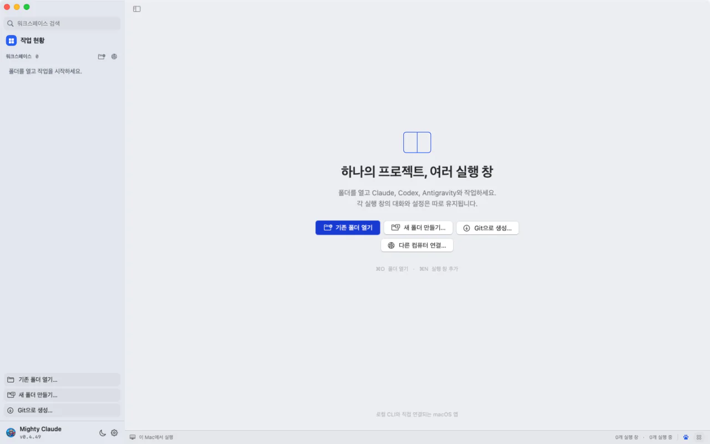
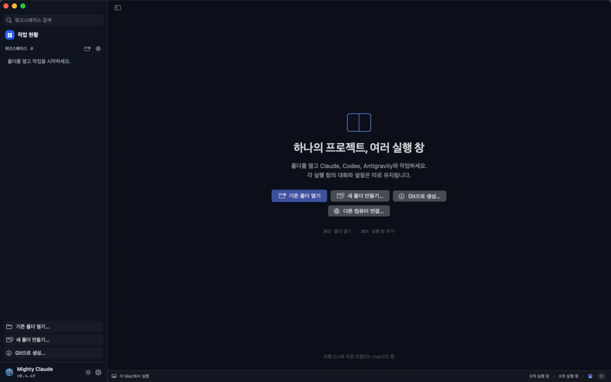
#필요한 도구
에이전트 CLI(Claude Code, Codex, Antigravity, pi, opencode, Hermes 중 하나)가 하나도 실행되지 않거나 Git이 준비되지 않았으면 앱을 열 때 필요한 도구 화면이 먼저 열립니다. 에이전트 CLI, 기본 도구(Git, Homebrew, Node, Bun), 스타일 도구(uv, Ouroboros, oh-my-claudecode, gstack), Tailscale, gh·glab을 묶어서 보여 줍니다.
- 설치할 항목에 체크합니다. 처음 열 때 빠진 Git과, 에이전트 CLI가 하나도 없으면 Claude Code가 미리 체크되어 있고, 고른 항목에 필요한 도구(예: gh에 필요한 Homebrew)는 함께 들어갑니다.
- 선택 항목 설치를 누르면 실행할 명령을 순서대로 모두 보여 줍니다. 실행을 눌러야 실행됩니다.
- 명령은 앱이 따로 여는 터미널 창 하나에서 홈 폴더를 작업 폴더로 차례로 실행됩니다. 이 창은 실행 창이 아니라서 워크스페이스에 저장되지 않습니다. 비밀번호나 확인을 묻는 단계는 터미널에서 직접 답하세요. 앱은 sudo를 쓰지 않고 비밀번호를 받지 않습니다. 한 단계가 실패해도 다음 단계로 넘어갑니다.
- 끝나면 앱이 다시 확인합니다. 앱이 앞에 있으면 이 화면을 다시 열고, 뒤에 있으면 상태 줄에 도구 설치가 끝났습니다 단추를 보여 줍니다. 결과는 명령의 종료 코드가 아니라 다시 확인한 상태로 정해집니다. CLI가 새로 생겼으면 로그인 단추가 나옵니다.
Git(Xcode Command Line Tools)은 시스템 설치 창이 열리고 그 창에서 마칩니다. 스크립트는 30분까지 기다리고, Control-C를 누르면 기다림만 끝내고 다음 단계로 넘어갑니다. Xcode 라이선스에 동의하지 않아 git이 실행되지 않으면 확인 필요로 보입니다. Tailscale은 공식 내려받기 페이지를 엽니다. 너무 오래된 Claude Code는 업데이트 필요로 보이고 업데이트 단추가 나옵니다.
다음에 하기로 닫을 수 있고, 다시 보지 않기에 체크하고 닫으면 앱을 열 때 다시 나오지 않습니다. 필수 도구가 빠져 있는 동안 시작 화면에 필요한 도구 단추가 있고, CLI가 없어 막힌 실행 창에는 설치하기 단추가 있습니다. 같은 목록이 설정 → 구성 요소에도 있습니다.
Windows Windows에도 같은 화면이 있습니다. 명령은 앱이 따로 여는 PowerShell 창 하나(Windows Terminal이 있으면 그 탭, 없으면 콘솔 창)에서 홈 폴더를 작업 폴더로 차례로 실행되고, 마지막에 Enter를 누를 때까지 창이 열려 있습니다. Claude Code, Codex, Antigravity, Hermes, uv는 각자의 공식 PowerShell 설치 스크립트로, pi와 opencode는 npm으로, Git과 glab은 winget으로 이 사용자에게만, Node.js와 gh는 winget으로 모든 사용자에게 설치합니다. 모든 사용자용 설치는 Windows가 직접 관리자 확인 창을 띄울 수 있지만, 이 화면 자체는 관리자 권한을 요청하지 않습니다. 설치가 끝나면 앱이 PATH를 레지스트리에서 다시 읽어 확인합니다. Homebrew, Bun, gstack은 Mac에서만 설치합니다.
#워크스페이스 열기
워크스페이스는 프로젝트 폴더 하나입니다. 실행 창, 탭 배치, 대화 기록이 워크스페이스마다 따로 저장됩니다.
추가하는 방법은 세 가지입니다. 사이드바 워크스페이스 머리글 오른쪽의 폴더 단추(누르면 세 항목이 있는 메뉴가 열립니다), 파일 메뉴, 창 추가 메뉴, 사이드바가 비었을 때와 처음 화면의 세 단추 어디서나 고를 수 있습니다.
- 기존 폴더 열기… (⌘O): 이미 있는 폴더를 고릅니다.
- 새 폴더 만들기…: 폴더 이름과 위치를 정해 새 폴더를 만듭니다. Git 저장소로 시작 (git init)을 켜면 빈 Git 저장소로 시작합니다. git init이 실패해도 폴더는 워크스페이스로 추가되고 알림이 그 사실을 알려 줍니다.
- Git으로 생성…: Git 저장소 주소를 넣으면 입력을 멈춘 뒤 자동으로(또는 연결 확인으로) 이 컴퓨터의 자격 증명(Mac 키체인·Windows 자격 증명 관리자, git credential helper, ssh-agent)으로 접근되는지 확인합니다. 앱이 비밀번호를 묻는 일은 없습니다. ✓가 보이면 생성을 눌러 내려받습니다(생성은 ✓일 때만 켜집니다). 폴더 이름은 주소에서 채워지고 고칠 수 있습니다. 받는 동안 진행 상황이 보이고, 취소로 멈추면 만들던 폴더는 지워집니다. 실패하면 창이 열린 채로 이유가 보입니다. Git이 없으면 필요한 도구 열기 단추가 설정 화면을 엽니다.
위치는 마지막에 쓴 곳을 기억합니다. 처음에는 현재 워크스페이스 옆(그 상위 폴더)이고, 없으면 홈 폴더입니다. 만든 폴더나 내려받은 폴더는 바로 워크스페이스로 추가되고 Claude 실행 창이 열립니다. 새 항목 두 개에는 단축키가 없습니다.
사이드바에서 워크스페이스를 오른쪽 클릭하면 이름 변경…, Finder에서 보기, 목록에서 제거 항목이 있습니다. 목록에서 제거해도 디스크의 프로젝트 파일은 그대로 남습니다. 새 실행 창은 새 Claude 실행 창(⌘N)으로 엽니다.
#언어 바꾸기
- 설정… → 일반을 엽니다.
- 언어에서 언어를 고릅니다. 시스템은 Mac의 언어를 따릅니다.
- 메뉴 막대는 앱을 다시 열어야 바뀝니다. 다른 화면이 바로 바뀌지 않아도 앱을 다시 열면 모두 바뀝니다.
#도움말 열기
이 도움말은 앱에서 바로 열 수 있습니다. 앱에서 고른 언어로 열립니다.
- Mac: 메뉴 막대의 Mighty Code 도움말(⌘?)이나 설정… → 앱 정보의 도움말 열기 단추
- Windows: 사이드바 아래의 도움말 단추, F1, 설정… → 앱 정보의 도움말 열기 단추
- 폰: 호스트 탭의 도움말 단추
02화면 구성
창은 왼쪽 사이드바와 오른쪽 작업 영역으로 나뉩니다. 작업 영역에는 실행 창을 탭으로 겹치거나 좌우·상하로 나눠 놓을 수 있습니다.
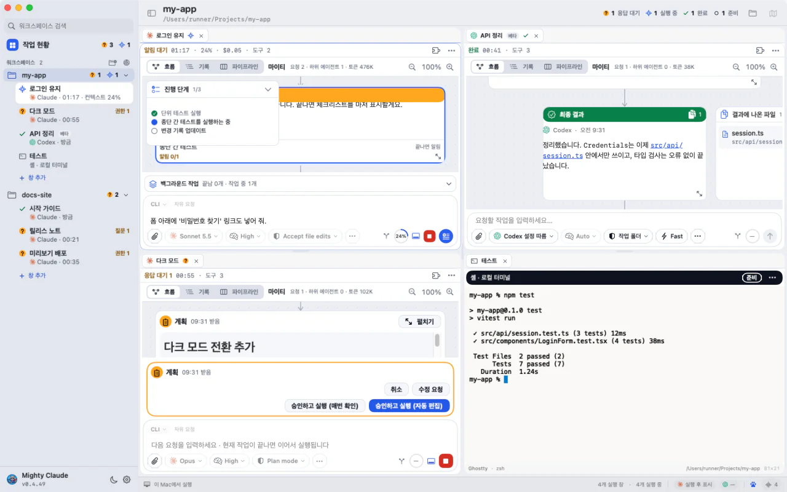
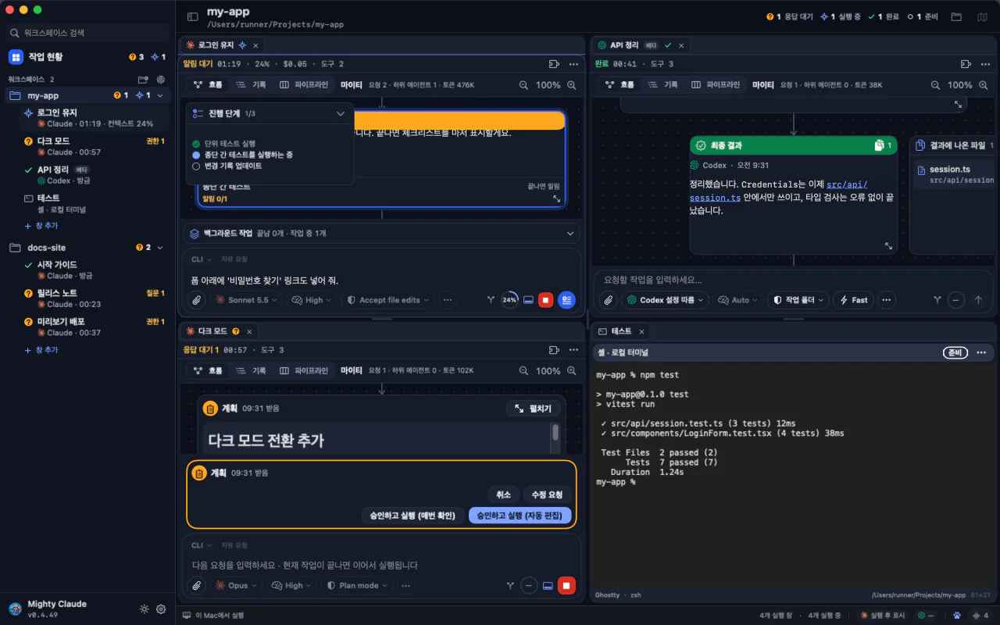
#사이드바
사이드바에는 위에서부터 다음이 있습니다.
- 워크스페이스 검색: ⌘K를 누르면 검색칸으로 바로 갑니다.
- 작업 현황: 모든 워크스페이스의 실행 창 상태를 한곳에서 봅니다.
- 워크스페이스 목록: 워크스페이스를 누르면 그 워크스페이스로 바뀝니다. 옆의 화살표를 누르면 실행 창 목록을 펼치거나 접습니다.
- 아래쪽: 화면 테마 단추(다크·라이트)와 설정 단추.
워크스페이스 목록을 펼치면 마지막 줄에 창 추가 단추가 있습니다. 실행 창 줄을 오른쪽 클릭하면 이름 변경…, 실행 창 닫기 항목이 있습니다.
#사이드바 폭 조절
사이드바와 작업 영역 사이의 경계선을 끌면 사이드바 폭이 바뀝니다(사이드바 크기 조절).
- 경계선에 마우스를 올리면 강조색으로 바뀝니다. 좌우로 끌어 폭을 맞춥니다. 폭은 정해진 범위 안에서만 바뀌고, 앱을 다시 열어도 유지됩니다.
- 경계선을 두 번 클릭하면 기본 폭으로 돌아갑니다.
- 경계선을 왼쪽 끝까지 끌면 사이드바가 접힙니다. 다시 펼치면 끌기 전의 폭으로 돌아옵니다.
#사이드바 접기
작업 영역을 넓게 쓰려면 사이드바를 접습니다.
- 작업 영역 머리글 왼쪽 위의 사이드바 단추를 누르거나 ⌃⌘S를 누릅니다. 작업 현황 화면과 첫 화면에도 같은 자리에 이 단추가 있습니다. 메뉴 막대의 보기 메뉴에도 사이드바 접기 항목이 있습니다.
- 다시 펼칠 때도 같은 단추나 ⌃⌘S를 씁니다(사이드바 펼치기).
접은 상태는 앱을 다시 열어도 유지됩니다. 접힌 상태에서 ⌘K를 누르면 사이드바가 펼쳐지고 검색칸으로 갑니다.
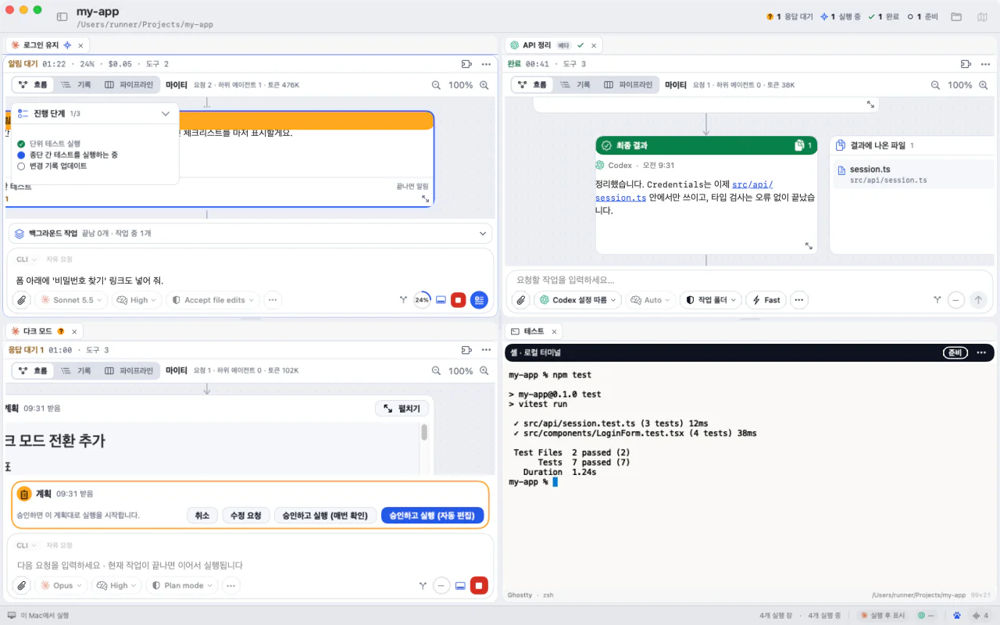
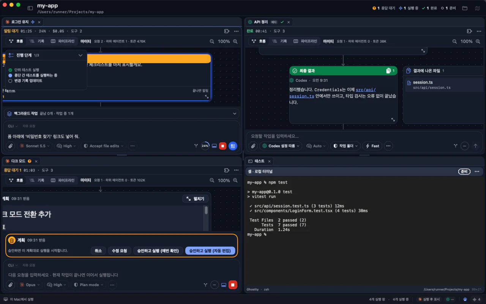
#작업 현황
사이드바 검색칸 아래의 작업 현황을 누르면 모든 워크스페이스의 실행 창을 상태 순으로 모아 봅니다.
- 위쪽 칸에서 실행 중, 응답 대기, 완료 개수를 봅니다.
- 계정 사용 한도 카드에서 계정 사용량을 봅니다. 같은 계정을 쓰는 다른 앱·세션과 함께 쓰는 한도입니다.
- 워크스페이스마다 파일 단추와 창 추가 메뉴가 있습니다.
- 카드를 누르면 그 실행 창으로 갑니다. 워크스페이스나 실행 창을 고르면 작업 현황에서 나옵니다.
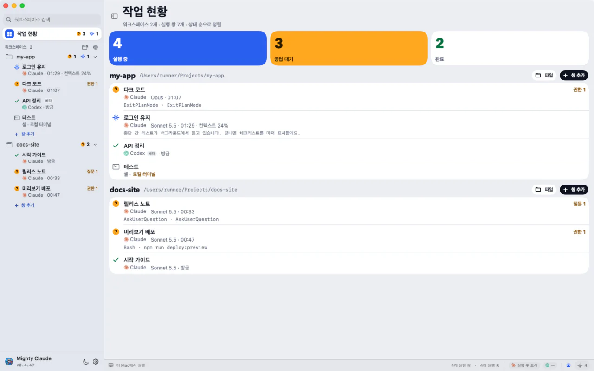
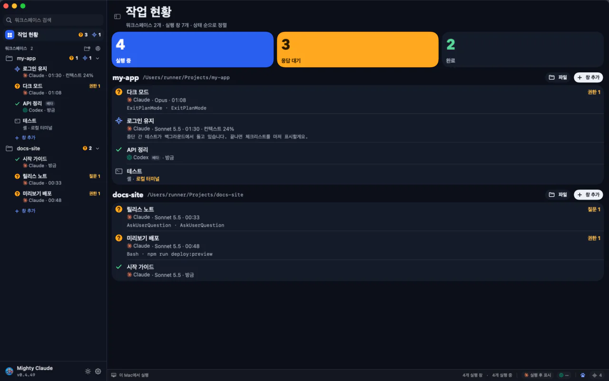
#실행 창 추가
실행 창은 AI 에이전트(Claude, Codex, Antigravity, pi, opencode, Hermes), 터미널, 브라우저, 파일 중 하나입니다.
- 사이드바의 창 추가 단추를 누릅니다.
- 만들 창을 고릅니다: 에이전트(Claude, Codex, Antigravity, pi, opencode, Hermes) 실행 창, 새 터미널, 새 브라우저 탭. 메뉴 맨 아래 묶음에는 워크스페이스를 추가하는 기존 폴더 열기…, 새 폴더 만들기…, Git으로 생성… 세 항목이 있습니다(워크스페이스 열기).
- 새 AI 실행 창은 같은 에이전트로 가장 최근에 쓴 창의 모델·사고 강도·권한·보기 방식을 이어받습니다. 대화는 새로 시작합니다.
단축키: 새 Claude 실행 창은 ⌘N, 터미널 실행 창 추가 항목은 ⌘T, 파일 창 열기 항목은 ⇧⌘E입니다.
Claude를 뺀 에이전트(Codex, Antigravity, pi, opencode, Hermes)의 실행 창에는 베타 표시가 붙습니다.
#이전 세션 이어가기
에이전트 창을 추가할 때 이 폴더에 이전 세션이 있으면 고르는 창이 뜹니다. Antigravity는 이 폴더의 대화가 나오고, 하위 에이전트가 실행한 대화는 나오지 않습니다.
- 새 대화는 새로 시작, 이전 대화는 이어가기… 단추를 누릅니다.
- 기존 세션 이어가기 목록에서 세션을 고릅니다. 제목 검색으로 찾을 수 있습니다.
- 새 창이 그 세션을 이어갑니다.
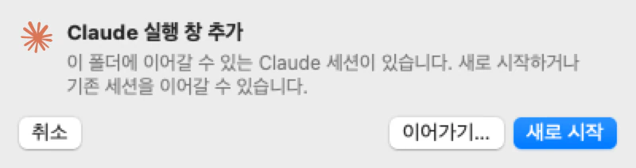
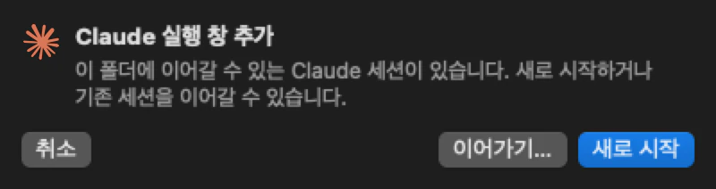
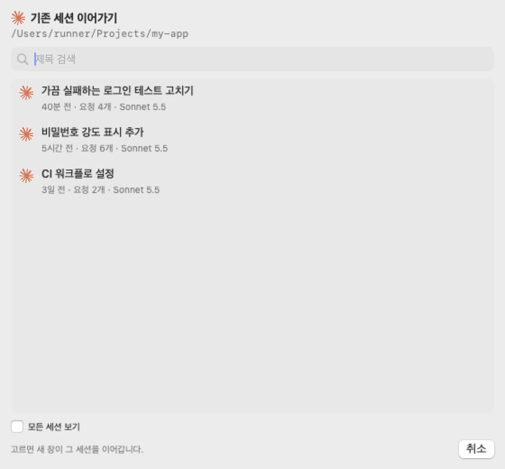
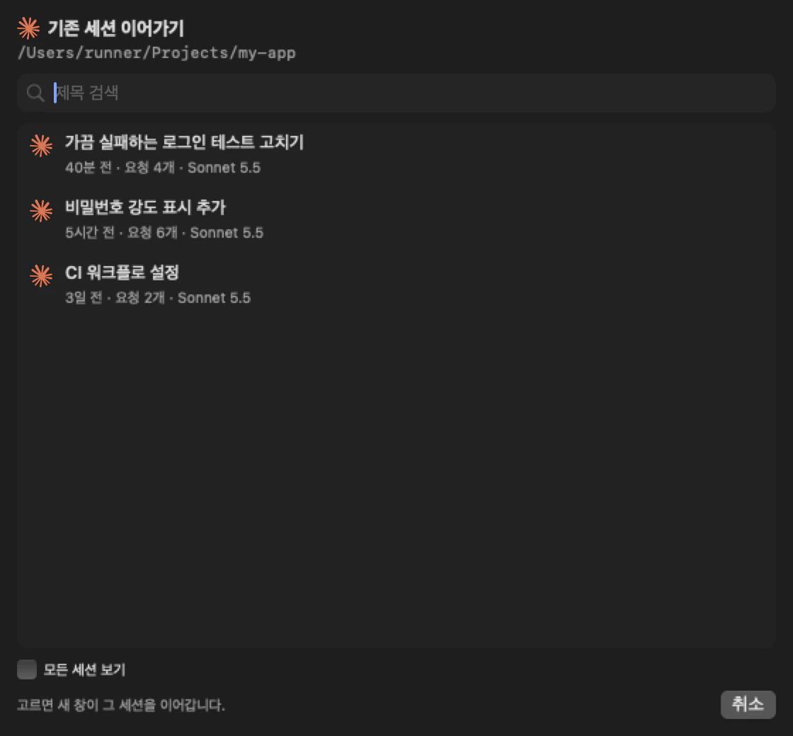
#탭과 분할
- 탭을 끌어 다른 그룹 가운데에 놓으면 탭으로 합쳐집니다(탭으로 합치기).
- 그룹의 왼쪽·오른쪽·위·아래 가장자리에 놓으면 그쪽으로 나뉩니다.
- 나눈 경계선을 끌면 크기가 바뀌고, 두 번 클릭하면 반반으로 나뉩니다.
- 끌던 중 Esc를 누르면 취소됩니다.
- 탭을 오른쪽 클릭하면 이름 변경…, 집중 보기, 탭 닫기 항목이 있습니다.
배치는 워크스페이스마다 저장됩니다. 워크스페이스를 바꿔도 각자의 배치가 그대로 남습니다.
#실행 창 메뉴
실행 창 머리의 … 단추에는 다음이 있습니다.
- 이름 변경…
- 집중 보기: 이 창만 크게 봅니다. 다시 누르면 이전 배치로 보기로 돌아갑니다.
- 실행 기록 복사
- 새 대화로 시작: 다음 요청부터 이전 대화를 잇지 않습니다.
- 실행 창 닫기
#단축키
| 단축키 | 동작 |
|---|---|
| ⌘O | 기존 폴더 열기… |
| ⌘N | 새 Claude 실행 창 |
| ⌘T | 터미널 실행 창 추가 |
| ⇧⌘E | 파일 창 열기 |
| ⌘K | 워크스페이스 검색 |
| ⌃⌘S | 사이드바 접기 / 사이드바 펼치기 |
| ⌘, | 설정… |
| Enter | 요청 보내기 |
| ⇧Enter | 줄바꿈 |
| ⌘Enter | 실행 중인 창에서 새 worktree에서 바로 실행(마이티 오케스트레이션이 켜진, git 저장소의 창). 그 밖의 실행 중인 창에서는 대기열에 추가 |
| Esc | 시트 닫기, 슬래시 목록 닫기 |
03에이전트 창
에이전트 창은 Claude, Codex, Antigravity, pi, opencode, Hermes 중 하나와 대화하는 실행 창입니다. 아래쪽 입력창에 요청을 쓰고, 위쪽에서 진행과 결과를 봅니다.
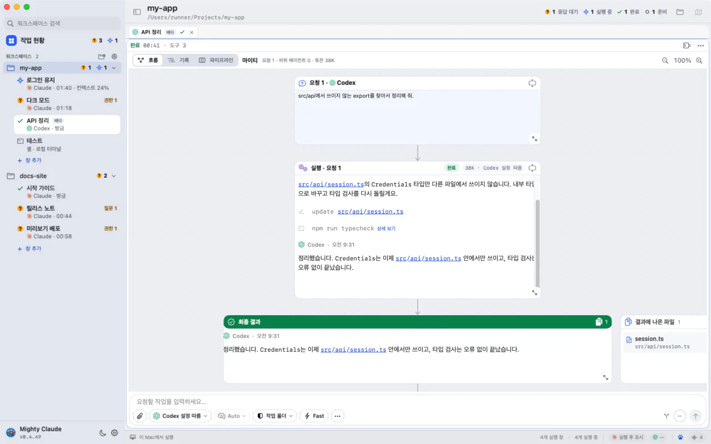
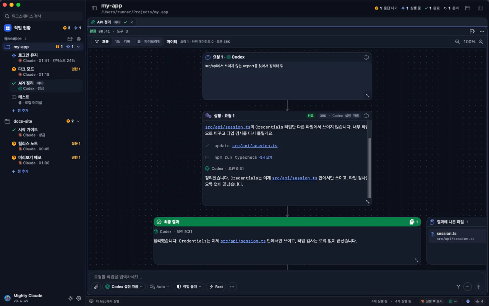
#요청 보내기
- 입력창에 할 일을 적습니다.
- Enter를 누르거나 보내기 단추를 누릅니다. 줄을 바꾸려면 ⇧Enter를 누릅니다.
- 실행 중에는 보내기 단추 자리에 중지 단추가 생깁니다. 멈추려면 그 단추를 누릅니다.
한글처럼 글자를 조합하는 중에 누른 Enter는 보내지 않고 조합만 끝냅니다.
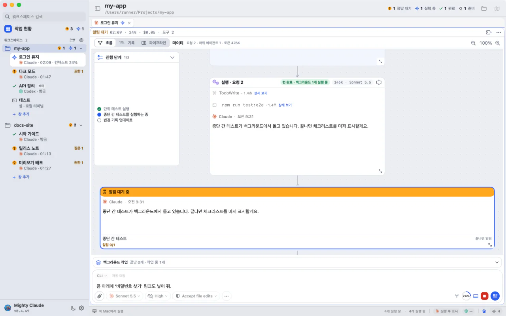
#실행 중에 이어서 요청하기
작업이 도는 동안에도 다음 요청을 쓸 수 있습니다. 입력창에 글이 있으면 중지 단추 옆에 보내기 단추와 같은 둥근 단추가 생깁니다.
- Enter 또는 대기열에 추가 단추: 다음 요청으로 대기열에 넣습니다. 지금 작업이 끝나면 순서대로 실행합니다. 한 창에 16개까지 넣을 수 있습니다.
- ⌘Enter 또는 새 worktree에서 실행 단추: 마이티 오케스트레이션이 켜진 Claude 창이나 자식이 파일을 바꿀 수 있는 모드의 Codex·Antigravity 창이 커밋이 있는 브랜치의 git 저장소에 있으면, 이 창 옆에 자기 git worktree를 가진 새 자식 창을 열어 바로 실행합니다. 돌고 있는 작업은 그대로 이어지고, 자식이 끝나면 사이드바의 카드에서 결과를 병합합니다(새 worktree에서 실행하기).
- 자식 창, 그런 저장소 밖의 창, 마이티 오케스트레이션을 끈 창에서는 ⌘Enter도 Enter처럼 대기열에 넣습니다. 자식을 만들거나 시작하지 못했을 때도 글은 대기열로 갑니다(새 worktree에서 실행하기). 보낸 글이 실행 중인 작업에 끼어드는 일은 이제 없습니다. 예전 기록의 마이티 보기에는 그렇게 보낸 글이 주황색 중간 요청 블록으로 남아 있습니다. 실행 중인 Claude 부모에게 바로 전달된 위임 알림은 같은 색의 위임 알림 블록으로 보입니다(알림과 보류).
- 대기열의 각 요청에는 ✕ 옆에 바로 실행 단추가 있습니다. 새 worktree를 만들 수 있는 곳(위 ⌘Enter와 같은 조건)이면 그 요청을 새 자식 창에서 지금 실행하고, 돌고 있는 작업은 그대로 이어집니다. 오른쪽 클릭(Mac은 Control-클릭도 됩니다)하면 다른 에이전트를 고를 수 있습니다. 단추의 도움말이 어느 쪽으로 실행될지 알려 줍니다. 글 없이 첨부 파일만 있는 요청은 worktree로 가지 않습니다.
- worktree를 만들 수 없는 곳에서는 이 창에서 처리합니다. 오류로 멈춘 창처럼 쉬고 있으면 그 요청을 지금 시작하고, Claude의 답은 끝났고 백그라운드 작업만 남은 창이면 그 요청이 실행 중인 Claude에 들어가 마이티 보기에 중간 요청 블록으로 보입니다. 첨부가 있는 요청은 작업이 끝날 때까지 기다립니다. 그 밖에는 단추가 흐리게 표시되고 도움말이 까닭을 알려 줍니다. 지금 작업이 먼저 끝나야 하거나, 이 창에 보류된 항목이 먼저 가야 하거나, CLI 업데이트 중인 경우입니다. 그 요청은 차례를 기다립니다. Antigravity 카드의 후속 요청은 늘 자기 창에서만 실행합니다.
작업을 중지하면 대기 중인 요청도 취소됩니다. 단, 백그라운드 작업만 기다리는 창에서 중지하면 대기열은 그대로 두고 첫 요청을 바로 시작합니다. 앱을 다시 열면 대기열은 비워집니다.
#입력창 도구
입력창 아래 줄에는 왼쪽부터 첨부, 모델, 사고 강도, 권한, 추가 실행 설정(…)이 있습니다. 창이 좁으면 일부가 메뉴 하나로 접힙니다. 실행 중에는 바꿀 수 없고, 바꾼 값은 다음 요청부터 적용됩니다.
#모델
모델 칩을 누르면 공급자(Claude, Codex, Antigravity, pi, opencode, Hermes)와 모델 항목을 고를 수 있습니다. 목록이 맞지 않으면 모델 목록 새로고침을 누르세요. 에이전트를 바꾸면 대화가 새로 시작됩니다.
#사고 강도
사고 강도는 모델이 얼마나 깊이 생각할지 정합니다. Auto, Low, Medium, High, XHigh, Max 중에서 고릅니다. 모델이 지원하는 단계만 보입니다. Codex 모델이 알리면 Ultra · 자동 위임도 있습니다. 가장 깊이 생각하면서 일의 일부를 Codex 자신의 하위 에이전트에게 맡길 수 있어 사용량이 더 들 수 있습니다. Antigravity에는 없고, pi는 Off, Minimal, Low, Medium, High, XHigh이고, opencode는 모델이 제공하는 변형인 Low, Medium, High, Max이고, Hermes는 Low, Medium, High, XHigh, Max입니다.
#작업 권한
권한은 에이전트가 묻지 않고 할 수 있는 일의 범위입니다.
| 에이전트 | 고를 수 있는 권한 |
|---|---|
| Claude | Plan mode · Always ask · Accept file edits · Auto mode · Bypass |
| Codex | 읽기 전용 · 작업 폴더 · 승인 요청 · 전체 접근 |
| Antigravity | 기본 권한 · 계획 · 수정 허용 · 전체 접근 |
| pi | 읽기 전용 · 전체 접근 |
| opencode | 기본 권한 · 계획 · 수정 허용 · 전체 접근 |
| Hermes | 기본 권한 · 수정 허용 · 전체 접근 |
- Claude의 Always ask, Codex의 승인 요청, 전체 접근을 뺀 opencode의 모든 권한, Hermes의 파일 수정과 위험한 명령은 추가 권한이 필요할 때 창 안에서 승인을 묻습니다. 승인과 질문을 보세요.
- Auto mode는 설치된 Claude CLI가 지원할 때만 보입니다.
- Bypass와 전체 접근 권한은 프로젝트 밖의 파일과 명령에도 접근합니다. 꼭 필요할 때만 쓰세요.
#Antigravity
Google 에이전트는 Antigravity CLI(agy)로 실행됩니다. Antigravity는 Claude와 GPT-OSS 모델도 실행할 수 있습니다.
- 설치: Mac에서는
curl -fsSL https://antigravity.google/cli/install.sh | bash를 실행하면~/.local/bin에agy가 설치됩니다. Windows에서는 PowerShell에서irm https://antigravity.google/cli/install.ps1 | iex를 실행하면%LOCALAPPDATA%\agy\bin에agy.exe가 설치됩니다. 업데이트는 앱이agy update로 합니다. - 로그인: 터미널 창에서
agy를 한 번 실행하고 브라우저에서 Google 계정으로 로그인합니다. CLI 탭의 로그인을 누르면 앱이 대신 실행합니다. Antigravity에는 로그아웃 명령이 없으므로, 계정을 바꿀 때는agy안에서/logout을 씁니다. - 권한: Antigravity는 앱 안에서 물어볼 수 없습니다. 기본 권한은 agy에 저장된 Agent Mode를 따릅니다(agy의
/config에서 바꾸지 않았다면 검토). 작업 폴더의 파일은 읽을 수 있지만, 물어봐야 하는 파일 수정과 셸 명령은 거절하고 그 턴을 끝낸 뒤, 거절한 작업을 모은 권한 카드로 묻습니다. 이번만 허용이나 항상 허용을 누르면 같은 대화에서 이어서 진행합니다(Antigravity의 권한 카드). 계획은 agy 자체 폴더에 계획을 쓰고 프로젝트는 고치지 않은 채 멈춥니다. 실행하려면 다음 요청을 다른 모드로 보내세요. 카드에 없는 작업을 미리 허용하려면~/.gemini/antigravity-cli/settings.json의permissions.allow에 허용 규칙(예:command(git status), 그 글자로 시작하는 모든 명령을 허용하니 되도록 좁게)을 직접 추가하거나, 수정 허용(파일 수정) 또는 전체 접근(모두 허용)를 고르세요. - Antigravity 모델은 이름에 생각 깊이가 들어 있어 사고 강도를 따로 고르지 않습니다.
- 마이티 보기는 Claude, Codex와 같습니다. Antigravity가 띄운 하위 에이전트는 요청 아래에 따로 블록이 되고, 그 내용(받은 지시, 메시지, 도구 호출, 돌려보낸 답)은
~/.gemini/antigravity-cli(Windows에서는%USERPROFILE%\.gemini\antigravity-cli)에 남는 하위 에이전트 자신의 기록에서 읽습니다. 읽은 파일은 이름만 보이고 내용은 옮기지 않습니다. 대화의 이전 요청도 같은 기록에서 불러오고, 이어가기…에는 이 폴더의 Antigravity 대화가 나옵니다. - 전에 Gemini CLI로 실행하던 창은 기록은 그대로지만 다음 요청부터 새 대화로 시작하고, Gemini CLI 모델을 골라 두었다면 기본값으로 바뀝니다.
#pi
pi(pi)는 여러 모델 제공자를 쓰는 오픈소스 코딩 에이전트 CLI입니다.
- 설치: 필요한 도구 화면에서 설치합니다(Homebrew와 Node.js가 없으면 먼저 설치합니다). 직접 설치하려면
npm install -g @mariozechner/pi-coding-agent를 실행합니다. 업데이트는 앱이pi update self로 합니다. - 로그인: CLI 탭의 로그인 단추를 누르면
pi를 실행하는 터미널 창이 열립니다. 거기서/login을 입력하고 구독(Claude Pro/Max, ChatGPT, GitHub Copilot)이나 API 키를 고릅니다. 환경 변수의 API 키(ANTHROPIC_API_KEY등)나~/.pi/agent/auth.json에 저장된 자격 증명도 로그인으로 봅니다. 로그아웃은 pi 안에서/logout을 입력합니다. - 모델: 로그인하면
pi --list-models의 목록이제공자/모델이름으로 나오고, 첫 항목은 pi 자체 설정을 따릅니다. 생각 기능이 없는 모델에는 사고 강도 항목이 보이지 않습니다. 단계는 Off, Minimal, Low, Medium, High, XHigh입니다. - 권한: pi에는 승인 창이 없어 모드가 두 가지입니다. 읽기 전용 모드는 읽기 도구(read, grep, find, ls)만 켭니다. 전체 접근 모드는 모든 도구를 묻지 않고 쓰며 프로젝트 밖도 건드릴 수 있습니다.
- 요청마다 창의 작업 폴더에서
pi --mode rpc를 실행하고 창의 세션을 이어 갑니다. 세션은~/.pi/agent/sessions에 저장되고, 이어가기… 항목에도 이 폴더의 pi 세션이 나옵니다. - 질문: pi에는 질문 도구가 없어, 앱이 실행마다
ask_user도구를 확장으로 더합니다(~/.pi설정은 바꾸지 않습니다). pi가 이 도구로 물으면 질문 카드가 뜨고, 답하면 같은 요청이 이어집니다. 다른 확장이 여는 고르기·확인·입력 창도 같은 카드로 뜹니다. - 아직 안 되는 것: pi 창은 마이티 오케스트레이션에 참여하지 않고, 원격 작업 공간에서 열 수 없으며, 승인 카드도 없습니다.
#opencode
opencode(opencode)는 여러 모델 제공자를 쓰는 오픈소스 코딩 에이전트 CLI입니다. 자체 서비스인 opencode Zen의 무료 모델은 로그인 없이도 씁니다.
- 설치: 필요한 도구 화면에서 설치합니다(Homebrew와 Node.js가 없으면 먼저 설치합니다). 직접 설치하려면
npm install -g @opencode/cli를 실행합니다. 앱은 OpenCode 2를 씁니다. Mac에 OpenCode 1이 있으면 오래된 것으로 보이고, 구성 요소 화면에서 설치하면 npm의opencode-ai를 먼저 지웁니다. 업데이트는 앱이opencode upgrade로 합니다. - 로그인: CLI 탭의 로그인 단추를 누르면
opencode auth login을 실행하는 터미널 창이 열립니다. 거기서 제공자를 고르고 그 제공자의 구독으로 로그인하거나 API 키를 입력합니다. opencode가 저장한 로그인(opencode auth list)이나 환경 변수의 API 키(ANTHROPIC_API_KEY등)도 로그인으로 보고, 둘 다 없으면 opencode Zen의 무료 모델만 나옵니다. 로그아웃은 터미널에서opencode auth logout을 실행합니다. - 모델:
opencode models의 목록이제공자/모델이름으로 나오고, 첫 항목은 opencode 자체 설정을 따릅니다. - 권한: 고른 모드가 그 요청에만 쓰는 opencode 자체 규칙이 되고, 규칙이 묻도록 남긴 일은 Claude처럼 창에 승인 카드로 옵니다. 기본 권한은 파일 수정, 명령, 웹, 프로젝트 밖 접근 전에 묻고, 수정 허용은 파일 수정을 묻지 않으며, 계획은 파일을 고치지 않는 opencode의 plan 에이전트로 실행하고, 전체 접근은 묻지 않습니다.
- 요청마다 창의 작업 폴더에서
opencode acp(OpenCode 2, Agent Client Protocol)를 실행하고 창의 세션을 이어 갑니다. 세션은 opencode의opencode.db에 저장되고, 이어가기… 항목에도 이 폴더의 opencode 세션이 나옵니다. 사용량에는 세션 비용, 쓰고 있는 컨텍스트, 요청의 토큰이 보입니다. - 질문: opencode가
question도구로 물으면 질문 카드가 뜨고, 답하면 같은 요청이 이어집니다. 카드에서 취소를 누르면 opencode가 그 요청을 끝냅니다. - 아직 안 되는 것: opencode 창은 마이티 오케스트레이션에 참여하지 않고 원격 작업 공간에서 열 수 없습니다.
#Hermes
Hermes(hermes)는 Nous Research의 오픈소스 에이전트 CLI(Hermes Agent)입니다. Nous Portal, OpenRouter, Anthropic, OpenAI 등 여러 모델 제공자를 씁니다.
- 설치: 필요한 도구 화면에서 설치합니다(Git이 없으면 먼저 설치합니다). 공식 설치 스크립트가 자체 Python 환경과 함께
~/.hermes에 설치하고 브라우저 도구도 내려받아 몇 분 걸립니다. 직접 설치하려면 Mac에서는curl -fsSL https://hermes-agent.nousresearch.com/install.sh | bash를, Windows에서는 PowerShell에서irm https://hermes-agent.nousresearch.com/install.ps1 | iex를 실행합니다. 업데이트는 앱이hermes update로 합니다. - 로그인: CLI 탭의 로그인 단추를 누르면
hermes model을 실행하는 터미널 창이 열립니다. 거기서 모델 제공자를 고르고 로그인하거나 API 키를 입력한 뒤 기본 모델을 고릅니다. 앱은 Hermes가 자격 증명을 찾은 제공자의 이름만 읽습니다. 자격 증명을 지우려면 터미널에서hermes auth를 씁니다. - 모델: 첫 항목은 Hermes 자체 설정(
hermes model로 정한 기본 모델)을 따릅니다. Hermes는 세션을 열어야 모델 목록을 알려 주므로, 첫 요청을 보낸 뒤부터제공자:모델목록이 나옵니다. - 권한: 기본 권한은 파일을 고칠 때마다 창의 승인 카드로 묻고, 수정 허용은 작업 폴더 안의 수정을 묻지 않으며, 전체 접근은 Hermes의
--yolo로 위험한 명령도 묻지 않습니다. 위험한 명령(rm -rf등)은 Hermes의 승인 설정(approvals.mode)에 따라 카드로 묻고, 그 밖의 명령과 읽기는 묻지 않습니다. 계획 전용 모드는 없습니다. 전체 접근은 세션을 시작할 때 정해지므로, 이미 시작한 세션에는 새 대화부터 적용됩니다. - 요청마다 창의 작업 폴더에서
hermes acp(Agent Client Protocol)를 실행하고 창의 세션을 이어 갑니다. 실제 작업은 Hermes의 게이트웨이(백그라운드 프로세스)가 하며, 필요할 때 저절로 시작되고 쓰지 않으면 끝납니다. 세션은~/.hermes/state.db에 저장되고, 이어가기… 항목에도 이 폴더의 Hermes 세션이 나옵니다. 사용량에는 세션의 누적 토큰과 쓰고 있는 컨텍스트가 보이고, 비용은 Hermes가 알려 주지 않습니다. - 질문: Hermes가 clarify 도구로 물으면 질문 카드가 뜨고, 답하면 같은 요청이 이어집니다. Hermes는 편집기 연결(ACP)에서 이 도구를 기본으로 꺼 두므로, 앱이 첫 Hermes 요청 전에 Hermes 설정의
platform_toolsets.acp한 항목을hermes config set으로 켜고 기록에 알립니다. 직접 정해 둔 목록이 있으면 건드리지 않습니다. 새 대화부터 적용되고, 되돌리려면 터미널에서hermes config unset platform_toolsets.acp를 실행합니다. Hermes는 답을 일정 시간(기본 90초)만 기다립니다. 그 뒤에는 카드가 닫히고 Hermes가 답 없이 이어 갑니다. - 아직 안 되는 것: Hermes 창은 마이티 오케스트레이션에 참여하지 않고 원격 작업 공간에서 열 수 없습니다.
#추가 실행 설정
… 단추를 누르면 실행 설정이 열립니다.
- Claude: 최대 턴 수와 비용 한도 (USD). 비워 두면 한도를 두지 않습니다.
- Codex: 웹 검색 설정과 Shell 네트워크. 입력창의 Fast 칩은 지원하는 모델과 계정에서 더 빠르게 답하지만 사용량을 더 씁니다.
값을 바꾼 뒤 적용을 누릅니다.
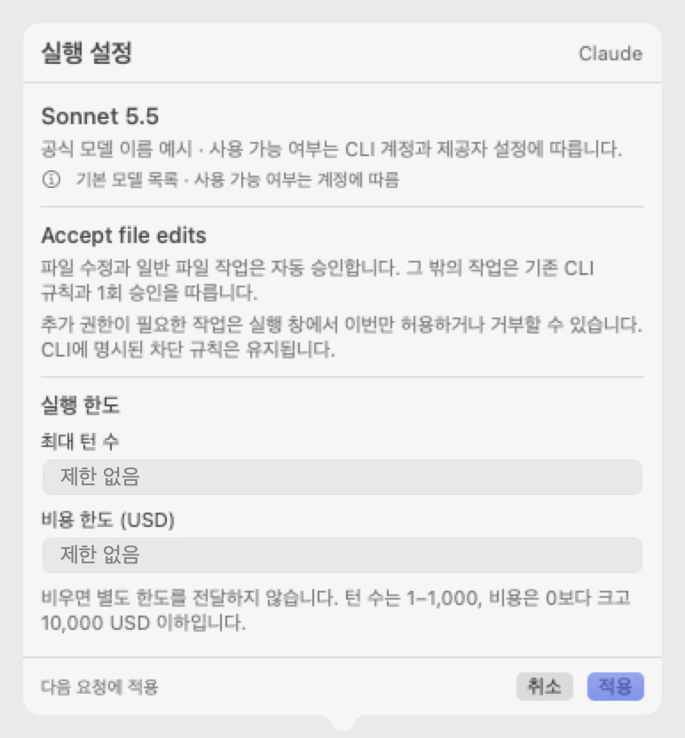
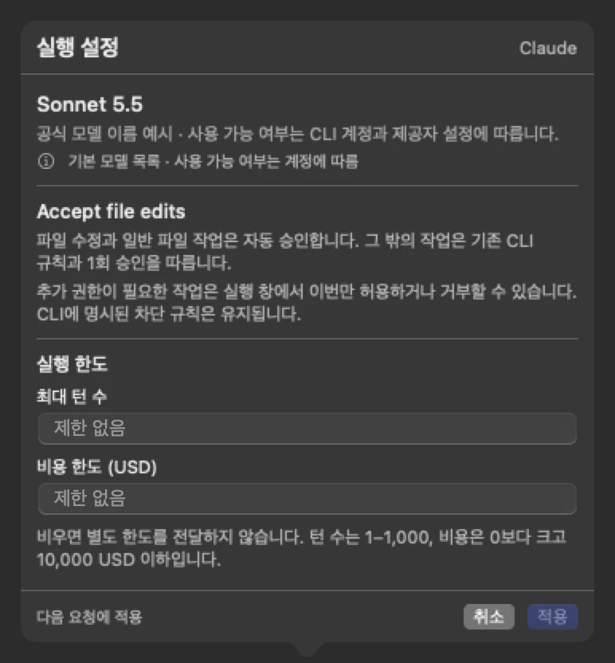
#파일과 이미지 첨부
클립 단추를 누르거나, 파일을 입력창에 끌어 놓거나, ⌘V로 이미지를 붙여 넣습니다.
- 최대 8개, 파일당 5 MiB, 합계 8 MiB까지 첨부합니다.
- 보내기 전에 미리 보고 하나씩 뺄 수 있습니다. 첨부만 보내도 됩니다.
- 터미널 창에는 첨부할 수 없습니다.
#보낼 대상
oh-my-claudecode가 설치된 Claude 창에는 입력창에 보낼 대상 스위치가 나타납니다. 설치된 다른 CLI(Codex, Antigravity 등)가 목록에 오르고, 하나를 고르면 이후 요청이 oh-my-claudecode의 ask를 거쳐 그 CLI로 갑니다. 답은 Claude의 답글 안에 돌아옵니다. Claude (기본)를 고르면 원래대로 Claude에게 보냅니다. Mac, Windows 앱의 웹 창, 휴대폰에서 쓸 수 있습니다.
- 다른 CLI에게 묻는 동안에는 첨부를 보낼 수 없습니다.
- oh-my-claudecode는 고른 CLI를 승인 확인과 샌드박스를 끈 채로 실행합니다. 그래서 그 CLI는 묻지 않고 이 폴더의 파일을 바꾸고 명령을 실행할 수 있습니다. Mighty Code의 권한 모드와 승인 카드는 그 CLI를 실행하는 Claude의 단계에만 적용됩니다. 그 CLI를 고르고 있는 동안 입력창에 이 경고가 한 줄로 표시됩니다.
- Windows에서 예전 버전의 oh-my-claudecode는 Antigravity에게 묻기를 거절합니다. 그런 답이 돌아오면 oh-my-claudecode를 업데이트하거나 Gemini CLI를 고르세요.
/로 시작하는 글은 그대로 Claude에게 갑니다.
#슬래시 명령
입력창에 /를 치면 명령 목록이 나옵니다. ↑↓로 고르고 Enter나 Tab으로 넣고, Esc로 닫습니다.
| 명령 (Claude 기준) | 하는 일 |
|---|---|
/model | 모델 바꾸기 · 이름을 이어서 고르세요 |
/permissions | 작업 권한 바꾸기 · 모드를 이어서 고르세요 |
/clear | 새 대화로 시작 · 다음 입력부터 이전 대화를 잇지 않음 |
/cost, /usage | 이 실행 창의 토큰·비용 보기 |
/plugin | 플러그인 마켓플레이스 열기 |
/config | Mighty Code 설정 열기 |
/rename | 실행 창 이름 바꾸기 |
/help | 이 실행 창에서 쓸 수 있는 앱 명령 보기 |
Codex와 Antigravity는 이름이 조금 다릅니다(예: Codex /new, /approvals, /status, Antigravity /usage, /config). 목록에 없는 /이름은 CLI의 스킬·사용자 명령·플러그인 명령으로 그대로 전달됩니다. Antigravity의 스킬도 이렇게 실행되며, 목록에는 agy에 들어 있는 스킬, ~/.gemini/antigravity-cli/skills의 내 스킬, 폴더의 .agents/skills가 나옵니다. 다만 /help, /skills 같은 Antigravity 자체의 조회 명령은 터미널에서 agy -p "/help"처럼 따로 실행할 때만 답하므로, 앱에서는 agy의 오류로 끝납니다.
#컨텍스트와 사용량
보내기 단추 옆의 동그란 고리는 대화가 컨텍스트를 얼마나 썼는지 보여 줍니다. 누르면 컨텍스트 사용량, 입력·출력·캐시 토큰, 비용, 쓴 모델, 세션 ID를 봅니다. CLI가 알려 준 값만 보여 주고, 모르는 값은 추정하지 않습니다.
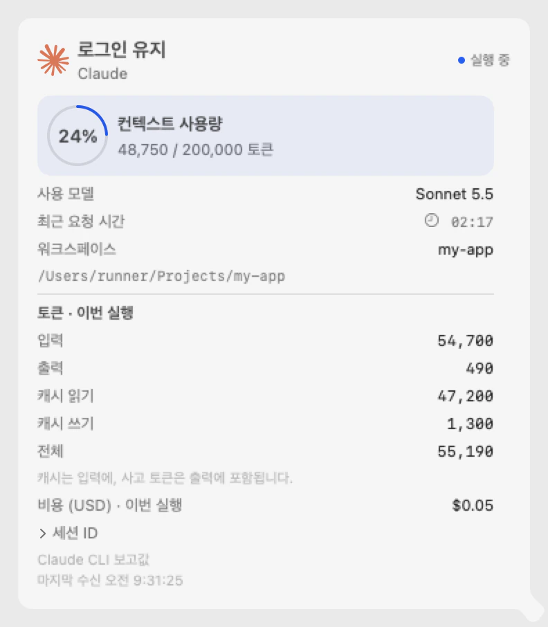
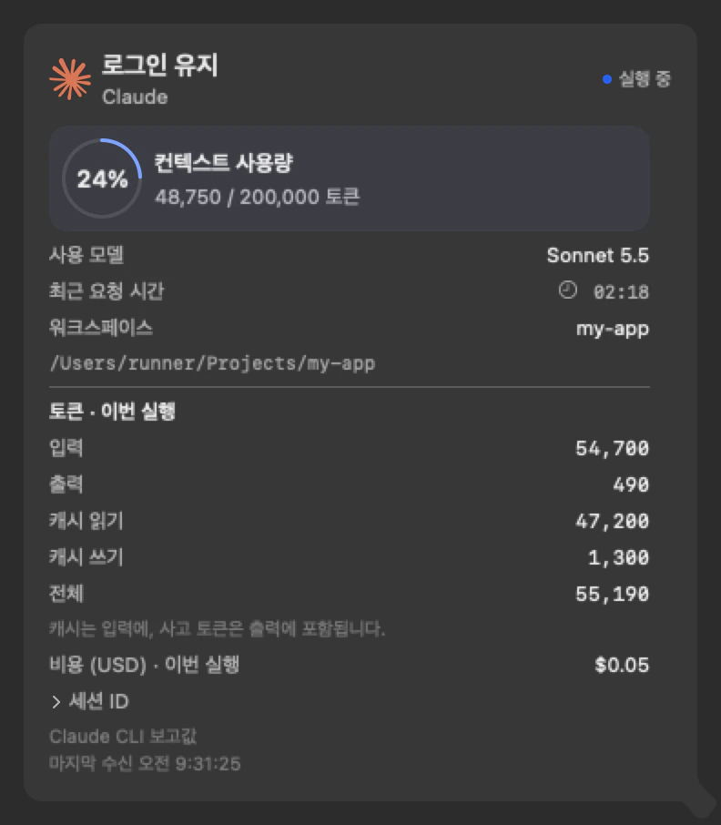
#마이티 보기
모든 에이전트 창(Claude, Codex, Antigravity, pi, opencode, Hermes)은 마이티 보기로 보입니다. 요청, 하위 에이전트, 백그라운드 작업, 결과를 블록 흐름으로 보여 줍니다. 따로 바꿀 것은 없습니다.
#마이티 흐름
Claude 창의 흐름은 요청 → 그 사이에 일어난 일 → 최종 결과로 보입니다. 요청 블록에는 보낸 요청만 담깁니다. 답이 오기 전까지는 결과가 올 자리에 실행 카드가 서서, 메인 세션의 모델과 지금 하는 일 한 줄(Claude가 마지막으로 한 말, 또는 그 뒤에 실행한 명령)을 보여 줍니다. 카드를 누르면 메시지와 도구 호출이 모두 든 실행 블록으로 펼쳐지고, 답이 오면 그 자리에 최종 결과 카드가 섭니다. 중간에 아무 일도 없는 짧은 질문은 요청과 결과 두 블록뿐입니다. 다른 에이전트의 창은 예전처럼 요청 블록 바로 아래에 실행 블록이 붙습니다.
블록의 머리는 누가 일하는지 보여 줍니다. 아이콘 색이 역할입니다(메인 세션, 하위 에이전트, 백그라운드 명령). 제목 뒤에는 하위 에이전트의 종류(Explore, 직접 만든 에이전트의 이름 등)와 백그라운드, 포크, worktree 표시가 붙고, 실행 블록에는 창에서 고른 사고 강도가 붙습니다. 모델은 토큰 표시에 함께 나오며, 아직 응답이 없으면 요청한 모델 뒤에 '요청'이라고 적습니다. 직접 만든 에이전트의 정의 파일에 color가 있으면 그 색을 씁니다. 블록이 좁으면 이 표시들이 먼저 숨고, 아이콘에 마우스를 올리면 전체를 볼 수 있습니다.
Claude 창의 흐름에서는 결과를 뺀 나머지가 모두 작은 카드로 접혀 있습니다. 하위 에이전트와 백그라운드 명령은 실행 중이든 끝났든 카드이고, 카드도 블록과 같은 머리(아이콘, 제목, 상태, 펼치기 단추) 아래에 두 줄을 보여 줍니다: 지금 하는 일(끝났으면 답의 첫 줄), 그리고 종류와 모델, 경과 시간, 도구 호출 수, 토큰입니다. 앱이 실제로 본 값만 나오고 진행률은 없습니다. 카드를 누르면 전체 블록으로 펼쳐지고, 블록 머리의 카드로 접기 단추로 다시 접습니다. 끝난 백그라운드 하위 에이전트의 카드를 누르면 백그라운드 작업 완료 다이어그램에 있는 그 블록이 펼쳐집니다. 백그라운드로 실행한 명령(예: CI 대기, 앱 빌드, 개발 서버)도 같은 줄에 회색 카드로 서서, 설명과 명령, 그 명령이 마지막으로 출력한 줄, 그리고 실행 중인 시간이나 끝난 상태와 종료 코드를 보여 줍니다.
Claude가 할 일 목록을 만들면 요청 아래에 시작한 단계가 하나씩 카드로 섭니다(1단계 → 2단계 → …). 그 단계 동안 띄운 하위 에이전트와 명령은 그 단계의 오른쪽에 붙고, 카드에 ↳ 2. 노트 작성처럼 어느 단계의 일인지 한 줄이 더 나옵니다. 단계 카드를 누르면 그 단계 동안의 기록이 펼쳐집니다. 단계가 없는 요청에서는 하위 에이전트들이 요청 아래 한 줄에 나란히 서고, 그 위의 가지에 몇 개에게 어떤 모델로 일을 맡겼고 몇 개가 아직 실행 중인지가 나옵니다. 앱은 도구를 쓰는 요청마다 Claude에게 먼저 할 일 목록을 만들게 하므로, 짧은 답이 아니면 대부분 단계가 생깁니다.
Claude 창의 흐름 아래, 입력창 위에는 세션 로그 띠가 있습니다. 머리 한 줄은 지금의 상태입니다. 메인 세션의 모델과 상태, 하위 에이전트 가운데 몇 개가 실행 중인지, 백그라운드 명령이 몇 개 도는지가 역할 색으로 나옵니다. 띠를 펼치면 가장 새 요청에서 최근에 있었던 일 다섯 줄이 시각, 누가(메인 세션의 모델이나 하위 에이전트의 이름), 무엇을(도구 호출, 하위 에이전트의 시작과 끝, 질문, 컨텍스트 정리, 알림 도착) 순서로 나옵니다. 줄을 누르면 흐름이 그 블록으로 이동합니다. 오른쪽 끝의 단추로 접으면 상태 줄만 남고, 접었는지는 창마다 기억합니다.
백그라운드로 시작한 하위 에이전트와 백그라운드 명령(작업)은 도는 동안 요청의 블록으로 그려지지 않고 입력창 위의 백그라운드 작업 줄에 있습니다. Mac의 Claude 창은 하위 에이전트를 위의 카드로도 보여 줍니다. 행에는 종류, 이름, 걸린 시간과 마지막 출력 한 줄이 나오고, 행을 펼치면 실행한 명령(하위 에이전트는 프롬프트 첫 줄)과 출력의 마지막 줄들(최대 6줄)이 나옵니다. 작업이 끝나 알림이 가면 Claude의 답마다 새 백그라운드 작업 완료 다이어그램이 생기고, 끝난 작업마다 블록 하나가 종류 줄(하위 에이전트인지 백그라운드 실행인지와 끝난 상태), 명령, 출력의 마지막 줄들, 하위 에이전트의 보고를 담습니다. 기록에서는 이 다이어그램이 새 행으로, 파이프라인에서는 맨 끝의 새 카드(보드)로 붙습니다. 휴대폰의 마이티 보기와 파이프라인도 같습니다.
모든 에이전트 창의 흐름 왼쪽 위에는 진행 상황 패널이 떠 있습니다. 화면에 보이는 요청의 번호와 상태, 요청 내용이 나오고, 에이전트가 계획을 알려 주면 단계마다 끝남, 진행 중(흐르는 시간), 남음이 나옵니다. 단계는 Claude의 할 일 목록, Codex의 계획, opencode·Hermes의 계획에서 옵니다. 계획을 보내지 않는 Antigravity와 pi는 요청과 상태만 보입니다. 요청이 백그라운드 작업(명령, 백그라운드 하위 에이전트)을 띄웠으면 맨 아래 백그라운드 묶음에 실행 중인 수와 전체 수, 작업마다 한 줄(상태와 걸린 시간)이 나옵니다. 실행 중인 작업부터 네 줄까지 보이고 나머지는 개수로 줄입니다. 새 요청이 시작되면 그 요청을 보여 주고, 직접 스크롤하면 화면에 보이는 요청으로 바뀝니다. 요청 줄을 누르면 그 요청으로, 단계 줄을 누르면 그 단계 카드로 이동합니다(단계 카드는 Claude 창의 흐름에만 있습니다). 머리의 단추로 접으면 머리와 요청 줄만 남습니다.
- 빈 곳을 끌거나 스크롤해서 흐름을 움직입니다. 확대·축소 단추로 50~150%로 볼 수 있습니다.
- 블록을 누르면 그 블록 안만 스크롤합니다. 빈 곳을 누르거나 Esc를 누르면 선택이 풀립니다.
- 블록 오른쪽 아래 모서리를 끌면 크기가 바뀝니다. 오른쪽 클릭하면 기본 크기로 되돌리기가 있습니다. 크기는 세션마다 저장됩니다.
- 맨 위까지 스크롤하면 이전 기록 불러오기로 예전 요청을 10개씩 불러옵니다. 불러온 기록은 보기 전용입니다.
- Claude와 Codex 창에서는 머리의 퍼즐 단추로 설치된 플러그인과 마켓플레이스를 엽니다.
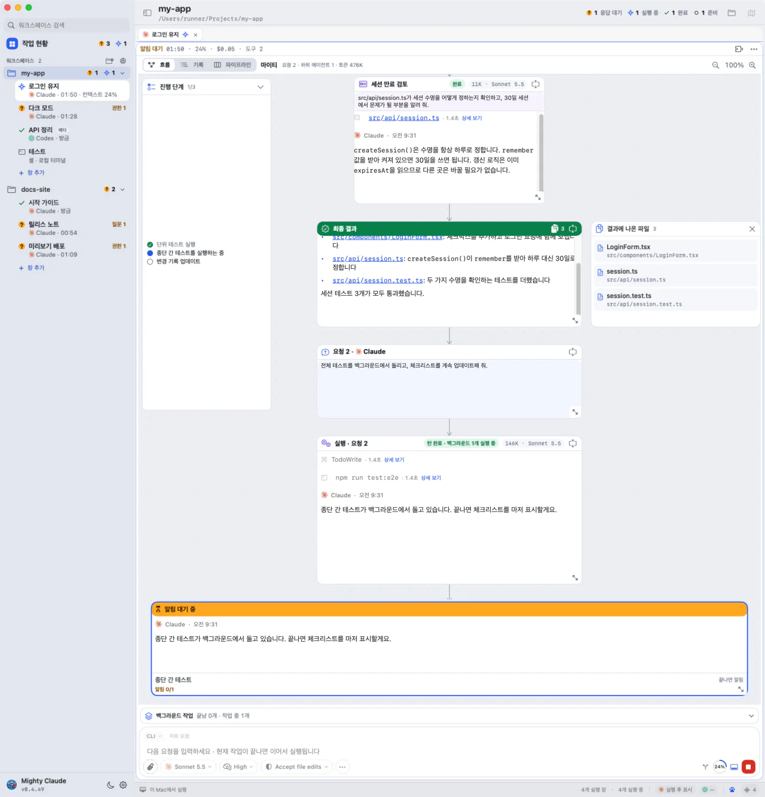
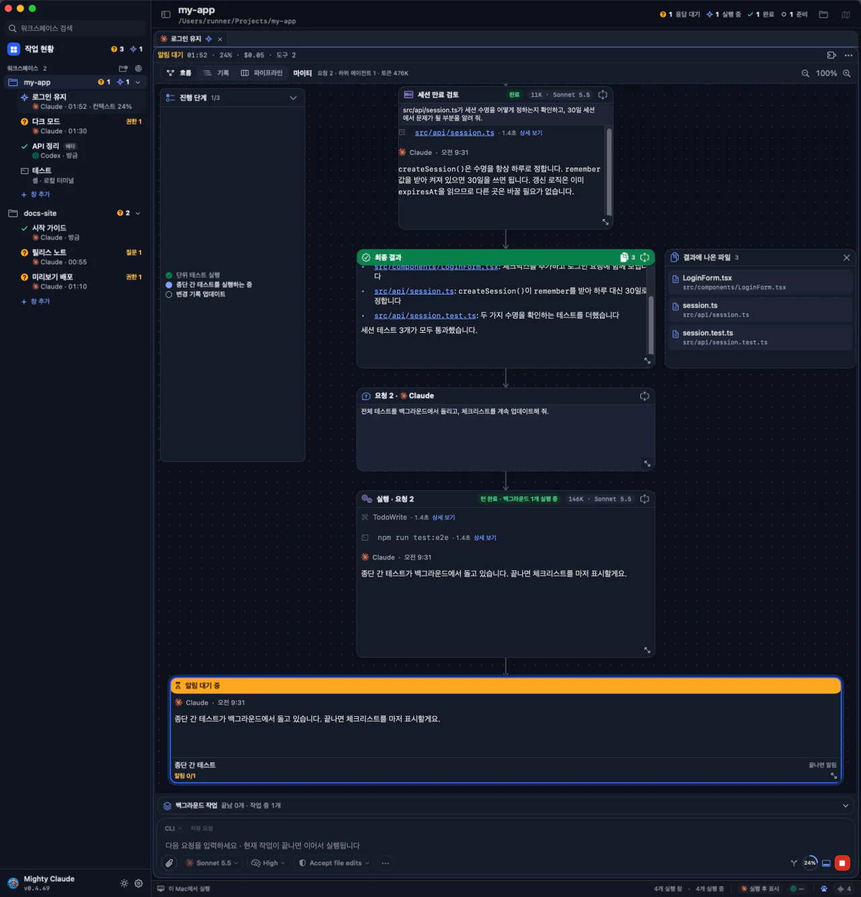
#기록
마이티 보기 위쪽의 흐름 | 기록 전환으로 요청을 시간 순서의 목록으로 볼 수 있습니다. 요청 줄 다음에 실행 줄이, 그 다음에 하위 에이전트 줄이 옵니다.
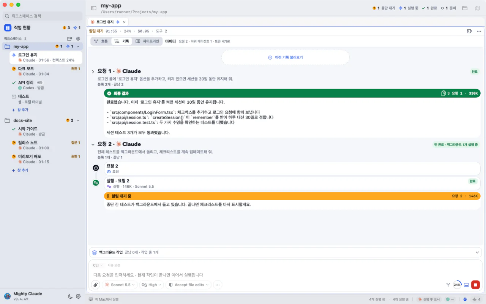
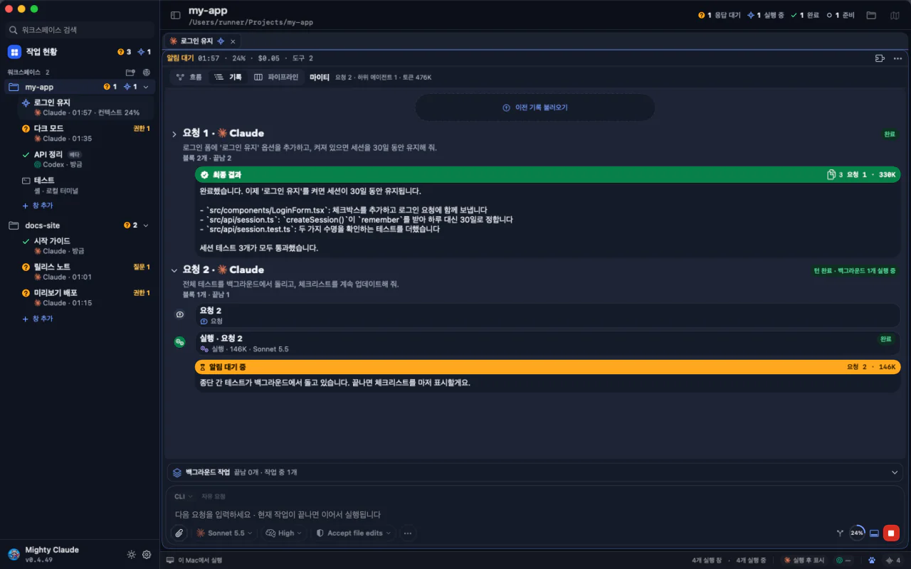
#파이프라인
같은 전환의 파이프라인 항목을 고르면 요청을 칸반식 파이프라인으로 볼 수 있습니다.
- 화면에는 한 번에 하나만 나옵니다. 스타일이 없는 창은 요청 하나, 스타일을 쓰는 창은 파이프라인 하나입니다. 파이프라인은 단계가 앞으로만 나아가는 요청들의 묶음이고, 요청의 단계가 앞 요청보다 이전으로 돌아가면 새 파이프라인이 시작됩니다.
- 맨 위의 ◀ 이전과 ▶ 다음으로 앞뒤를 오가고, 가운데의 "요청 3 / 7" 같은 제목을 누르면 목록이 열려 번호, 제목, 상태, 단계를 보고 바로 고를 수 있습니다.
- 그 아래에는 상태(스타일을 쓰는 창은 파이프라인 이름도)가 나옵니다. 단계는 칸마다 맨 위의 칩으로 보이고, 칩은 선으로 이어져 있습니다. 스타일이 없는 창은 요청 → 실행 → 결과, 스타일을 쓰는 창은 그 모드의 단계입니다.
- 내용은 단계마다 하나씩 나란히 놓인 칸에 담깁니다. 칸 머리에는 단계 칩과 카드 수가 있습니다. 스타일이 없는 창은 요청 칸에 보낸 요청, 실행 칸에 진행 상황(최근 메시지와 도구 호출)과 상태가 담긴 카드와 하위 에이전트마다 한 장씩의 카드, 결과 칸에 결과가 놓입니다. 스타일을 쓰는 창은 단계 칸마다 그 단계의 요청 카드(요청, 실행 요약, 결과 한 줄)와 그 아래 하위 에이전트 카드가 놓입니다. 안쪽 하위 에이전트는 들여 쓰고 어느 블록 아래인지 적어 둡니다.
- 상태는 색으로도 보입니다. 칸 바탕은 그 단계의 상태 색으로 물들고(완료는 초록, 실행 중은 파랑, 기다리는 중은 노랑, 오류는 빨강, 중지는 회색), 지금 단계는 가장 최근 요청의 상태를 따르며, 아직 오지 않은 단계는 바탕 그대로입니다. 카드는 왼쪽 가장자리에 같은 색의 막대가 있고 바탕은 칸보다 옅습니다. 실행 중인 카드는 움직이는 테두리를, 기다리는 카드는 노란 테두리를 그대로 두고, 상태 글자도 그대로 보입니다.
- 긴 글은 접혀 있고 더 보기를 누르면 그 자리에서 펼쳐집니다. 카드 머리의 작은 버튼을 누르면 흐름에서 그 블록을 보여 줍니다.
- 보기는 가장 최근 것에서 열리고, 그대로 두면 새 요청이나 새 파이프라인으로 따라갑니다. 이전 것을 보는 동안 새로 생기면 자리는 그대로이고 ▶ 옆에 새 요청 또는 새 파이프라인 표시가 붙습니다. 표시를 누르면 가장 최근 것으로 갑니다.
- 칸은 저마다 따로 움직입니다. 칸 머리는 위에 그대로 있고 카드만 위아래로 움직입니다. 칸 위에서 트랙패드나 마우스 휠로 위아래로 굴리거나 빈 곳을 끌면 그 칸만 움직이고, 칸이 화면에 다 들어가지 않으면 옆으로 굴리거나 끌어 파이프라인을 옆으로 옮깁니다.
- 가장 최근 것에서 끝을 보고 있는 칸은 새 내용을 따라 내려갑니다. 직접 옮긴 칸이나 글을 펼친 칸은 그 자리에 머물고, 그 칸의 끝으로 돌아오면 다시 따라갑니다. 새 요청이 오면 모든 칸이 끝을 보여 주고, 이전 것은 칸마다 맨 위에서 열립니다. Windows 앱에서는 아직 파이프라인 전체가 한꺼번에 움직입니다.
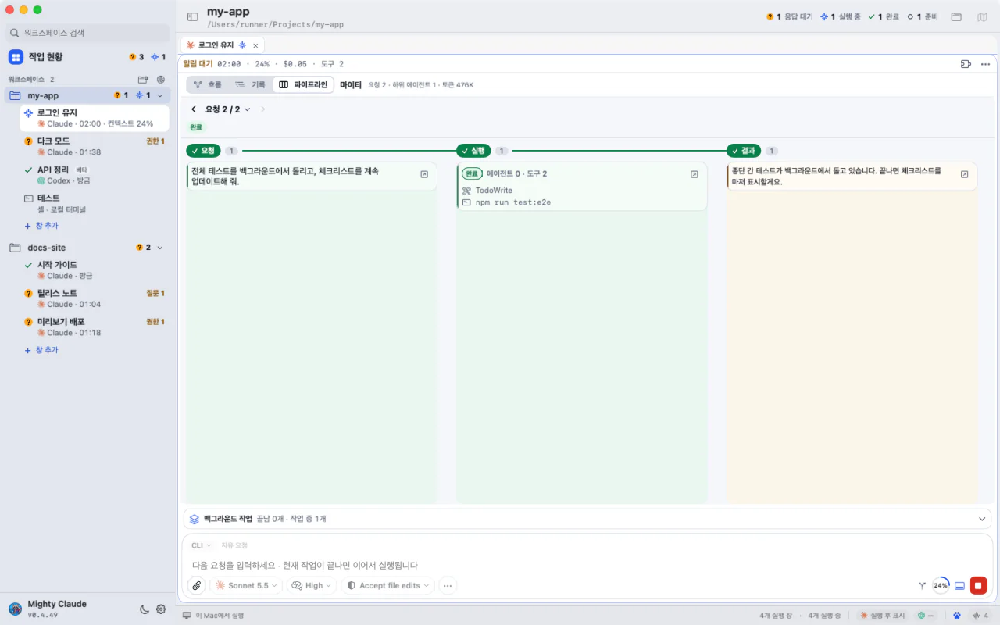
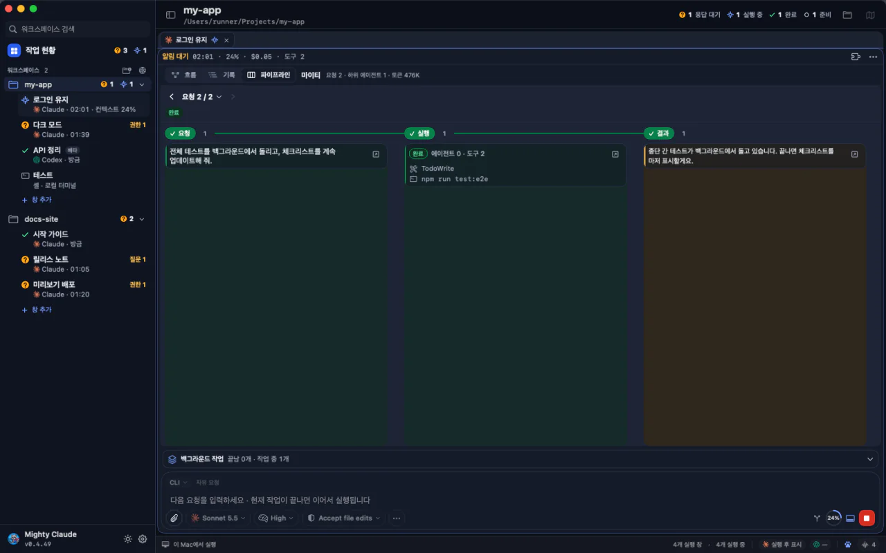
#결과 카드
요청이 끝나면 결과 카드에 결과가 정리됩니다. 요청은 Claude의 답이 끝나면 완료로 바뀝니다. 그 요청이 띄운 백그라운드 작업(이미 끝난 하위 에이전트에 메시지를 보내 다시 깨운 것도 포함)이 아직 돌거나, 끝났지만 Claude가 그 알림에 아직 답하지 않았으면 결과 카드는 대기 색의 알림 대기 중 블록이 됩니다. 지금까지의 답 아래에 작업마다 끝나면 알림 또는 알림 전달됨이 붙고, "알림 1/2"처럼 받은 알림 수가 보입니다. 이 동안 펫과 창 머리는 알림 대기를 보입니다. 모든 알림에 답하면 최종 결과로 바뀝니다. 백그라운드 작업의 알림을 받고 Claude가 다시 답하면 그 답은 요청의 결과에 붙지 않고, 답 하나마다 새 다이어그램이 열립니다(백그라운드 작업). 같은 요청의 다른 백그라운드 작업이 아직 돌고 있으면 그 답의 카드 제목은 "현재까지의 결과 · 백그라운드 작업 N개 기다리는 중"으로 남은 작업 수를 보여 줍니다. 결과에 파일이 나오면 결과에 나온 파일 보기 단추로 목록을 엽니다. 블록 안의 파일 경로를 누르면 미리보기가 뜹니다. 가장 최근 결과 카드는 창 크기에 맞춰지고, 크기를 직접 바꿨다면 창에 맞추기 단추가 생깁니다. 요청이 바꾼 소스·Markdown 파일이면 미리보기 머리에 변경사항 | 전체 보기 전환이 생기고 변경사항부터 보입니다. 바뀐 줄만 앞뒤 3줄과 함께 옛 줄 번호·새 줄 번호를 달아 보여 주며, 더한 줄은 초록, 지운 줄은 빨강 바탕입니다. 위 줄이 무엇과 비교했는지 알려 줍니다: 결과 파일 목록이나 블록에서 열면 그 요청이 파일을 처음 바꾸기 전 내용(이번 요청 전과 비교), 그 원본이 없으면 마지막 커밋입니다. 바뀐 것이 없으면 전환 없이 전체 파일만 보입니다.
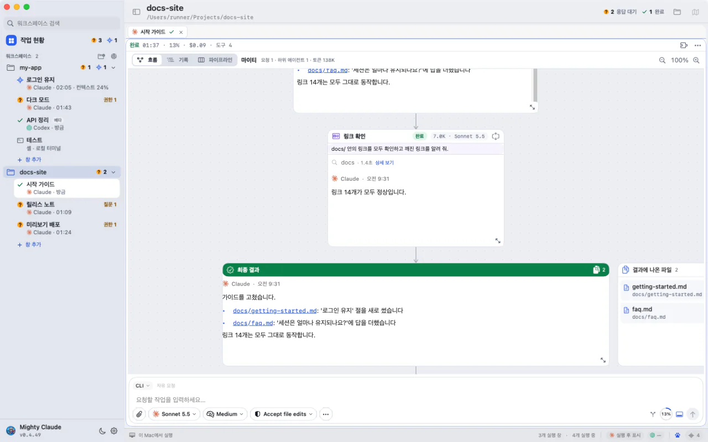
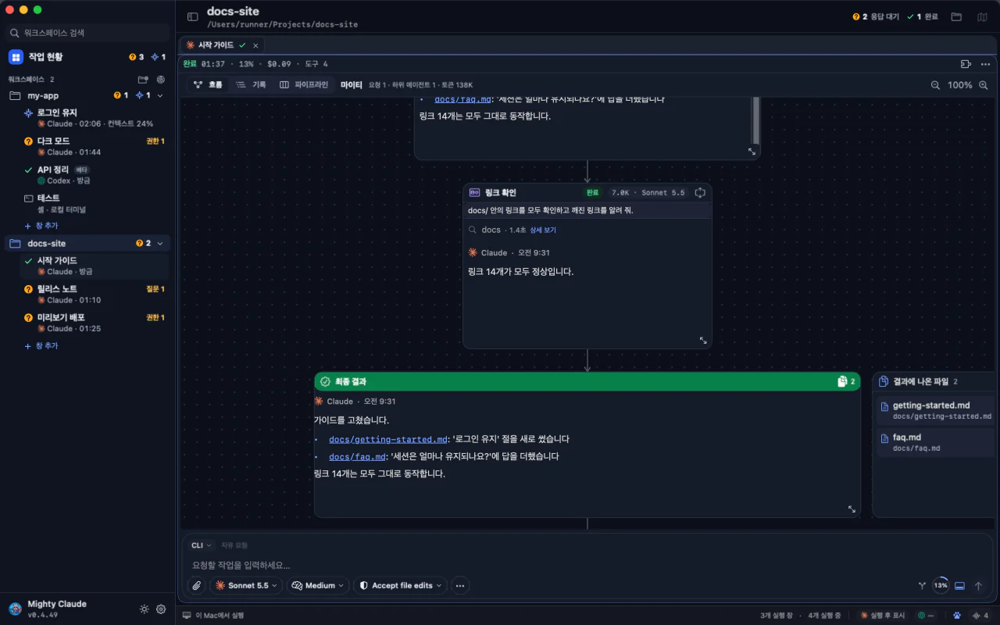
04스타일
스타일은 요청을 보내는 방식을 정해 둔 작업 흐름입니다. 단계와 단추가 준비되어 있어서, 긴 작업을 정해진 순서로 진행할 수 있습니다. 스타일을 쓰지 않으면 지금처럼 자유롭게 요청합니다(CLI).
#스타일 고르기
스타일은 Claude 창에서 씁니다(Mac과 Windows).
- 입력창 위의 스타일 메뉴(요청 스타일)를 엽니다.
- 스타일을 고릅니다. 다시 자유 요청으로 돌아가려면 CLI를 고릅니다.
선택은 창마다 저장됩니다. 실행 중에는 바꿀 수 없습니다. 스타일에 필요한 플러그인이나 도구가 없으면 설치 단추가 보입니다. 누르면 새 터미널 창에 설치 명령이 채워지고, Enter는 직접 누릅니다.
기본 스타일의 단계 이름과 단추는 지금은 한국어로만 보입니다.
#기본 스타일
| 스타일 | 하는 일 |
|---|---|
| 오로보로스 (Ouroboros) | 인터뷰로 목표를 분명히 한 뒤 시드 → 실행 → 평가 → 진화 순서로 진행합니다. 첫 요청이 인터뷰가 됩니다. Ouroboros 플러그인과 uvx가 필요합니다. |
| 클러드 플랜 | 새 요청마다 Claude의 계획 모드로 시작합니다. 계획 카드를 승인하면 실행합니다. 체크리스트 진행과 백그라운드 작업이 위젯으로 보입니다. |
#계획 카드
Claude가 계획 모드(Plan mode, 또는 클러드 플랜 스타일)에서 계획을 마치면 계획 카드가 뜹니다.
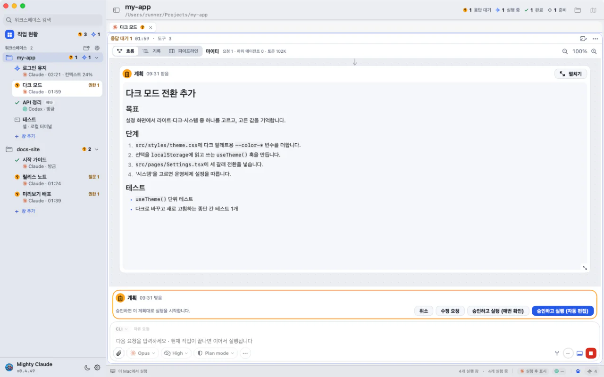
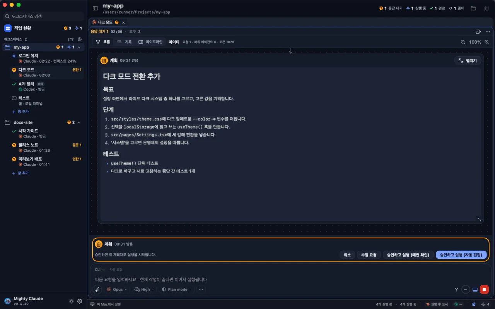
- 계획을 읽습니다. 펼치기를 누르면 문서처럼 크게 봅니다.
- 하나를 고릅니다.
- 승인하고 실행 (자동 편집): 승인하고 파일 수정은 묻지 않고 진행합니다.
- 승인하고 실행 (매번 확인): 승인하고 작업마다 확인을 받습니다.
- 수정 요청: 바꿀 점을 적어 수정 요청 보내기를 누르면 Claude가 다시 계획합니다.
- 취소: 계획을 거절하고 이번 작업을 멈춥니다.
마이티 보기의 흐름에서는 계획이 요청 아래 블록에 뜨고, 네 가지 답은 입력창 쪽(스타일을 쓰면 스타일 패널)에 나옵니다. 계획 블록은 결과 카드처럼 창 크기에 맞춰지고, 크기를 직접 바꿨다면 창에 맞추기 단추가 생깁니다. 기본 보기와 기록에서는 계획과 답이 한 카드로 입력창 위에 뜹니다.
데스크톱 펫도 끝난 계획을 보여 줍니다. 받은 시각과 계획 전체가 나오고, 계획이 길면 말풍선 안에서 스크롤됩니다. 펫에서 바로 승인하고 실행 (자동 편집), 승인하고 실행 (매번 확인), 취소 단추를 누를 수 있습니다. 수정 요청 단추를 누르면 수정할 점을 쓰는 작은 창에 계획이 열리고, 계획 검토… 단추를 누르면 같은 창에서 계획을 크게 읽습니다. 이 창에는 네 가지 답이 모두 있고, 계획에 답하면 창이 닫힙니다.
답한 계획은 기록으로 남아 다시 볼 수 있습니다.
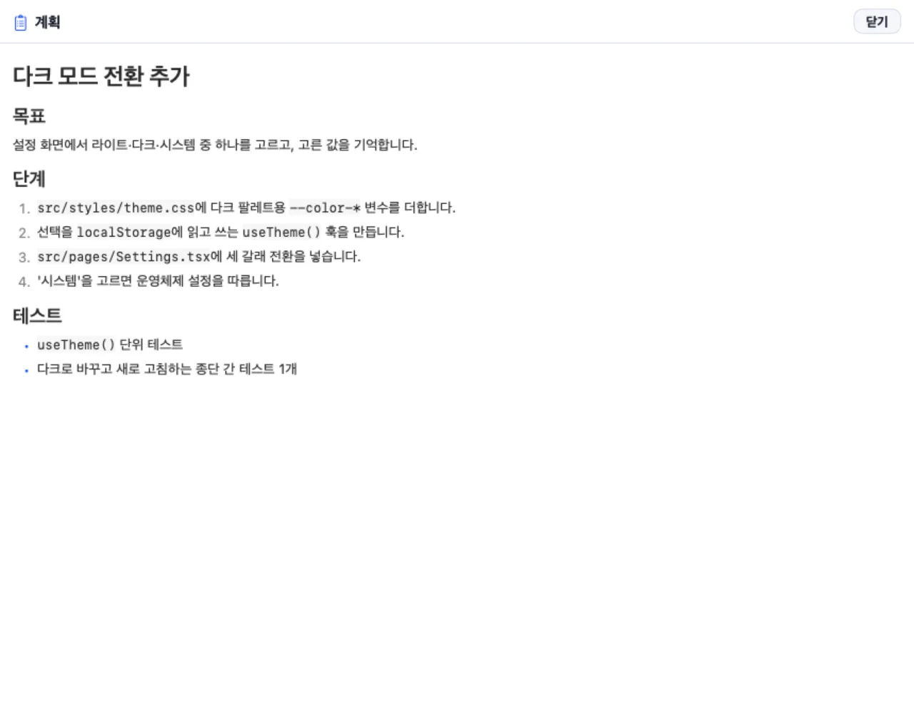
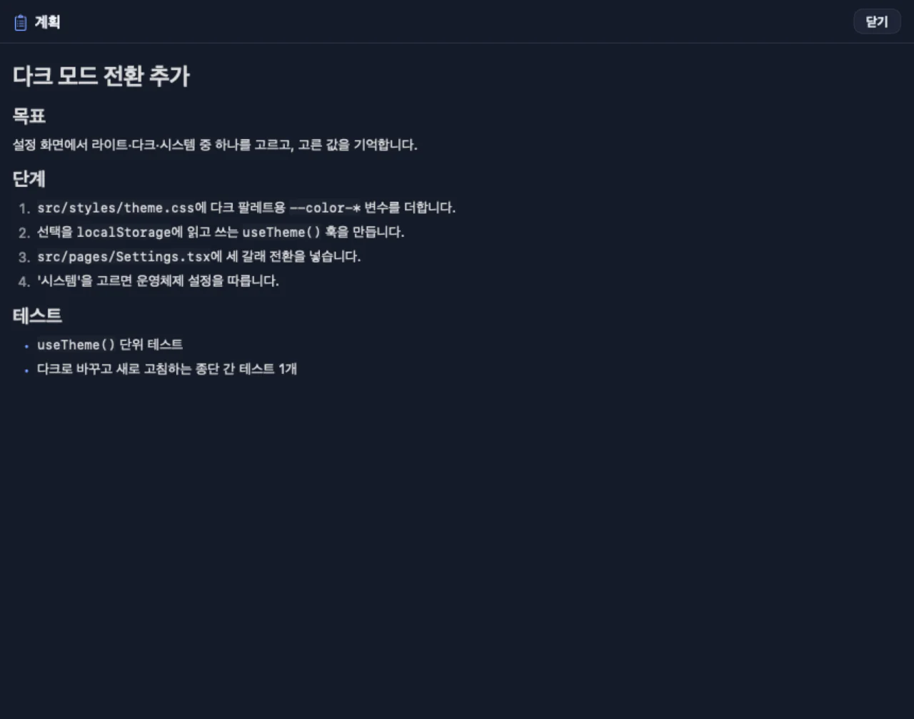
#다른 스타일 추가하기
기본 스타일 말고 파일로 된 스타일도 쓸 수 있습니다.
- 설정… → 스타일에서 파일에서 스타일 등록…을 누릅니다. 저장소의
.claude/mighty-styles/안의 스타일은 저절로 찾습니다. 목록이 맞지 않으면 다시 스캔을 누릅니다. - 새 스타일은 처음 한 번 내용을 확인해야 합니다. 내용 보기 단추로 출처, 자동 허용할 도구, 설치 명령, 모든 단추를 확인합니다.
- 괜찮으면 허용을 누릅니다.
스타일 파일이 바뀌면 다시 확인을 받습니다. 허용을 거두려면 같은 곳의 취소를 누릅니다.
도구를 자동 허용하는 스타일은 그 도구를 묻지 않고 실행합니다. 출처를 믿을 수 있을 때만 허용하세요.
05승인·질문·로그인 복구
에이전트가 일하다가 사용자의 판단이 필요하면 실행 창에 카드가 뜹니다. 카드에 답하면 작업이 이어집니다. 작업 현황과 데스크톱 펫, 휴대폰에서도 같은 요청을 볼 수 있습니다.
#권한 승인
에이전트가 권한 밖의 일(명령 실행, 파일 수정 등)을 하려 하면 승인 카드가 뜹니다.
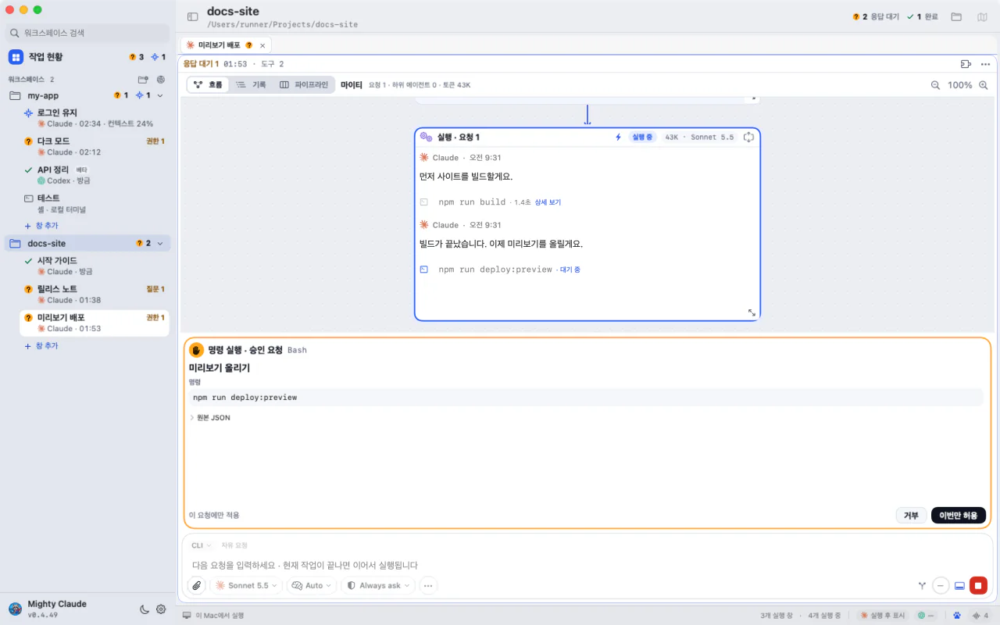
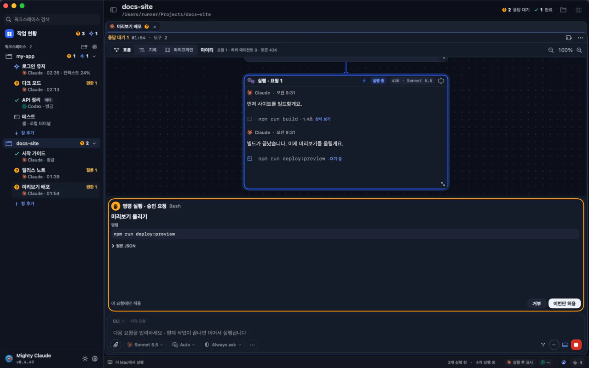
- 카드에서 무엇을 하려는지 읽습니다. 명령이나 파일 경로가 상자에 보이고, 정확한 입력은 원본 JSON에서 봅니다.
- 이번만 허용 또는 거부를 누릅니다.
승인은 이 요청 한 번에만 적용됩니다. 앞으로도 계속 허용하는 규칙은 만들지 않습니다.
승인 카드는 Claude 창(Always ask 등)과 Codex의 승인 요청 권한, 전체 접근을 뺀 opencode 창의 모든 권한에서 뜹니다. Hermes 창에서는 파일 수정과 위험한 명령에 뜹니다. 다른 권한에서는 CLI 설정에 따라 허용되거나 막힙니다. Antigravity는 일하는 방식이 달라 따로 묻습니다.
#Antigravity의 권한 카드
Antigravity는 일하는 도중에 앱에 물어볼 수 없습니다. 물어봐야 하는 작업(명령 실행, 파일 쓰기 등)을 만나면 그 작업만 건너뛰고 턴을 끝낸 뒤, 거절한 작업을 모두 모아 카드로 묻습니다. 권한이 기본 권한일 때도 뜹니다. 휴대폰에도 같은 카드가 뜹니다.
카드에는 거절된 작업이 하나도 빠짐없이 나옵니다. 작업마다 종류(명령, 주소, 파일 등), 명령·주소·경로, 허용에 쓸 규칙이 보입니다.
- 무엇을 거절했는지 읽습니다.
- 단추를 고릅니다.
- 이번만 허용: 거절된 작업만 허용하는 규칙을 Antigravity에 잠깐 더해 같은 대화를 이어 갑니다. 이어지는 실행이 끝나면(끝나든, 실패하든, 중지하든, 앱을 닫든) 앱이 더한 규칙만 지웁니다.
- 항상 허용: 같은 규칙을 Antigravity 설정(
~/.gemini/antigravity-cli/settings.json의permissions.allow)에 그대로 남깁니다. 다음에는 묻지 않고 실행합니다. Windows에서는%USERPROFILE%\.gemini\antigravity-cli\settings.json입니다. - 거절: 카드를 닫고 아무것도 이어서 실행하지 않습니다.
허용하면 같은 대화에서 이어서 진행합니다. 창이 다른 일로 바쁘면 이어 가는 실행은 대기열에 들어갑니다.
규칙은 앞부분이 맞으면 허용합니다. 명령 규칙은 그 글자로 시작하는 모든 명령을 허용하고(command(git status)는 git status --short도 허용합니다), 폴더를 가리키는 파일 규칙은 그 안의 모든 파일을 허용합니다. 이번만 허용의 규칙도 Antigravity의 전체 설정에 들어가므로, 규칙이 있는 동안에는 이 컴퓨터의 모든 Antigravity 실행(다른 창과 워크스페이스, 터미널의 agy)에 적용됩니다. 항상 허용한 명령 규칙은 그 뒤에 붙는 어떤 인수든 허용하므로, 인수로 다른 일을 시킬 수 있는 명령(find … -exec, curl … -o 등)은 되도록 이번만 허용을 고르세요.
명령을 잇거나(;, &&, ||), 파이프(|)·리디렉션(>, <)·명령 치환(백틱, $()·백그라운드(&)를 쓰거나, 데이터를 지우거나 권한을 올리는 명령(rm, sudo, git push --force, git reset --hard, git clean, kill 등)은 이번만 허용만 할 수 있습니다. 카드의 항상 허용이 꺼지고 그 이유가 나옵니다. 휴대폰에서는 그 단추가 보이지 않습니다.
영문자·숫자·띄어쓰기와 ._/:=@+,- 밖의 문자(따옴표, $, ~, %, \ 등)가 든 명령도 이번만 허용만 할 수 있습니다. 항상 허용한 규칙은 같은 글자로 시작하는 모든 명령을 허용하기 때문입니다. 보이지 않거나 글자 방향을 바꾸는 문자, 보통 띄어쓰기가 아닌 공백이 든 명령에는 규칙을 만들지 않습니다. 파일 규칙은 이 컴퓨터 자체 디스크의 평범한 경로(Windows에서는 고정 드라이브의 C:\… 같은 드라이브 경로)에만 만들고, \\server\share 같은 네트워크 경로에는 만들지 않으며 앱이 그 경로를 찾아보지도 않습니다. 주소 규칙은 호스트가 평범할 때(@, \, %, 공백, ASCII가 아닌 글자가 없을 때)만 만들고, 카드는 브라우저가 읽는 대로 호스트를 보여 줍니다.
*나 괄호가 든 명령, 디스크 전체(/)나 홈(~)을 가리키는 규칙은 만들지 않습니다. Antigravity 자신의 설정 폴더(~/.gemini)나 앱 데이터 폴더 안, 또는 그 위의 폴더(홈 폴더 등)에 쓰거나 읽는 파일 규칙도 만들지 않습니다. 거기에 규칙을 두면 Antigravity가 자기 권한을 고칠 수 있기 때문입니다. .gemini를 언급하는 명령, 그리고 셸·인터프리터만 실행하거나 코드를 바로 넘기는 명령(bash, python3 -c …, node -e …, cmd /c …)과 다른 명령을 실행하는 래퍼(npx, xargs, timeout, env 등)도 이번만 허용만 할 수 있습니다. command(bash)는 bash -c로 시작하는 무엇이든 허용하기 때문입니다. 카드에는 그 이유가 따로 보입니다. 그런 작업은 규칙으로 허용할 수 없는 작업으로 보입니다.
Claude와 다른 점이 있습니다. Claude는 실행 전에 멈추고 답을 기다리지만, Antigravity는 그 턴을 끝낸 뒤에 묻고 허용하면 이어서 진행합니다. 그래서 카드가 보일 때는 나머지 작업이 이미 끝나 있을 수 있습니다.
규칙으로 허용할 수 없는 작업이 있으면 카드에 그 작업이 보이고, 권한 모드를 바꾸라는 안내가 나옵니다. 그 작업만 있는 카드에는 거절만 있습니다. Antigravity 설정 파일을 읽을 수 없거나 JSON이 아니면 앱은 파일을 고치지 않고 카드에 이유를 보여 줍니다. 앱은 permissions.allow의 규칙만 더하고 지우며 다른 설정은 그대로 둡니다. 잠깐 더한 규칙을 지우지 못하면 잠시 뒤 다시 지우고, 앱을 다시 열 때도 지웁니다.
원격 워크스페이스의 Antigravity 창은 그 창을 실행하는 컴퓨터의 설정을 고칩니다. 카드 하나의 허용은 한 번만 쓸 수 있고, 항상 허용은 그 컴퓨터에서 원격에서 전체 권한·명령 실행 허용이 켜져 있을 때만 받습니다.
#질문에 답하기
Claude, pi, opencode, Hermes가 선택지를 주고 물으면 선택 요청 카드가 뜹니다. 보기 없이 답을 써 달라는 질문에는 입력 칸만 나옵니다.
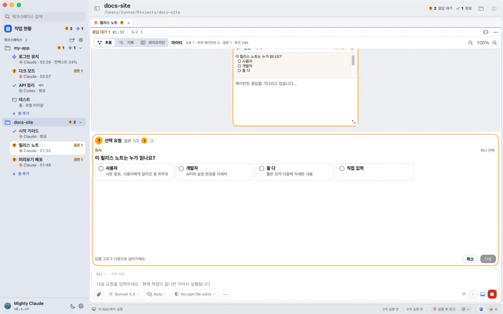
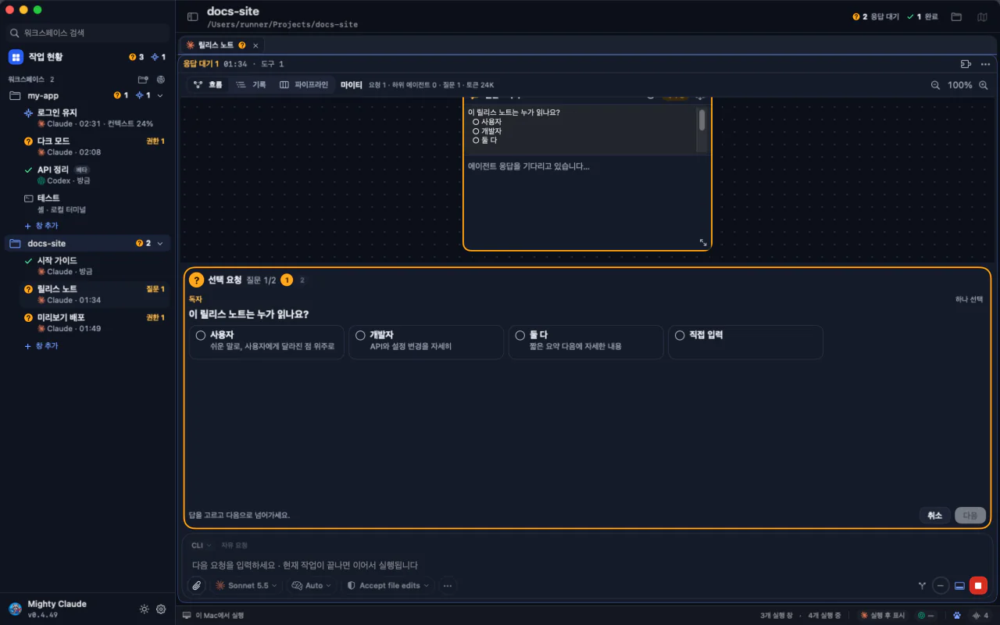
- 질문을 읽고 답을 고릅니다. 여러 개를 고를 수 있는 질문도 있습니다.
- 알맞은 답이 없으면 직접 입력에 직접 씁니다.
- 질문이 여럿이면 다음 단추로 넘어갑니다.
- 모두 답한 뒤 답변 보내기를 누릅니다. 고르기만 해서는 보내지지 않습니다.
#터미널이 입력을 기다릴 때
에이전트가 터미널에서 실행한 명령(또는 답의 셸 블록에서 실행을 누른 명령)이 입력을 기다리면, 그 에이전트 창의 입력창 위에 터미널이 입력을 기다립니다 카드가 뜹니다. 터미널 창으로 가지 않고 카드에서 답하면, 그 답이 터미널에 그대로 입력됩니다. 휴대폰의 같은 창에도 같은 카드가 뜹니다.
- 예/아니오 질문(
(Y/n)같은 것): 예 또는 아니오를 누릅니다. Enter만 눌렀을 때의 답에는 (기본값)이 붙습니다. - 비밀번호: 가려지는 칸에 입력하고 보내기를 누릅니다. 입력한 내용은 화면과 대화 기록 어디에도 남지 않습니다.
- 글 입력: 칸에 입력하고 보내기를 누르거나, 기본값을 받아들이려면 Enter만 보내기를 누릅니다.
- 목록에서 고르기: 위로·아래로로 옮기고 선택을 누릅니다.
카드는 명령의 출력이 잠시 멈춘 뒤에 뜨고, 답하거나 명령이 다시 출력하거나 끝나면 사라집니다. 에이전트가 대신 답하는 일은 없습니다. 터미널 창에서 직접 입력해도 됩니다(터미널 보기).
#로그인이 끊겼을 때
CLI 로그인이 만료되어 요청이 실패하면 입력창 위에 로그인 복구 카드가 뜹니다.
- 다시 로그인을 누릅니다.
- 브라우저가 열리면 로그인을 승인합니다. 브라우저에 코드가 보이면 카드에 붙여 넣고 확인을 누릅니다.
- 로그인이 끝나면 실패한 요청을 저절로 다시 보냅니다.
이미 다른 곳에서 로그인했다면 다시 보내기를 누르세요. 브라우저 로그인이 어려우면 터미널에서 로그인을 씁니다.
macOS Antigravity, pi, opencode, Hermes는 터미널에서 로그인합니다. 실패한 창 옆에 로그인 터미널이 열리고, Antigravity(agy)는 열리는 브라우저에서 Google 계정으로 로그인합니다. pi는 터미널에서 /login을 입력해 구독을 고르거나 API 키를 입력합니다. opencode는 opencode auth login이 실행되어 제공자를 고른 뒤 로그인하거나 API 키를 입력합니다. Hermes는 hermes model이 실행되어 모델 제공자를 고르고 로그인한 뒤 기본 모델을 고릅니다. 로그인이 확인되면 실패한 요청을 저절로 다시 보냅니다. 이 터미널은 로그인 뒤에도 열려 있습니다.
Windows Windows에서도 Antigravity, pi, opencode, Hermes는 터미널에서 로그인합니다. 로그인 터미널이 따로 창으로(Windows Terminal이 있으면 새 탭으로) 실패한 창의 폴더에서 열리고, 터미널에서 하는 일은 Mac과 같습니다. Antigravity(agy)는 열리는 브라우저에서 Google 계정으로 로그인합니다. pi는 /login을 입력해 구독을 고르거나 API 키를 입력합니다. opencode는 opencode auth login이, Hermes는 hermes model이 실행됩니다. 로그인이 확인되면 실패한 요청을 저절로 다시 보냅니다. 앱은 이 터미널을 닫지 않습니다.
CLI 탭의 로그인이 끊기면 자동으로 다시 로그인을 켜 두면 로그인이 끊긴 순간 바로 다시 로그인을 시작합니다.
#백그라운드 작업
Claude는 오래 걸리는 명령이나 하위 에이전트를 백그라운드에서 돌리기도 합니다. 이때는 Claude의 답이 끝나도 일이 남아 있습니다.
- 입력창 위에 백그라운드 작업 줄이 보입니다(요청을 시작할 때부터). 이번 요청이 띄운 작업 중 끝난 수와 아직 도는 수가 "끝남 1개 · 작업 중 2개"처럼 나옵니다. 줄을 누르면 작업별 종류, 상태, 걸린 시간을 봅니다.
- 작업이 끝나면 Claude에게 알림이 가고, Claude가 그 결과를 받아 이어서 답합니다. 끝난 작업은 끝난 상태로 바뀌어 다음 요청을 보낼 때까지 줄에 남습니다. 모두 끝나면 줄은 "작업 중 0개"로 남습니다.
- 도는 동안 백그라운드 작업은 마이티 보기의 요청 안에 그려지지 않고 위 줄에만 있습니다. 줄의 행을 누르면 실행한 명령(하위 에이전트는 프롬프트 첫 줄)과 출력의 마지막 줄들(최대 6줄)이 펼쳐집니다. 휴대폰도 마이티 보기 위에 같은 두 수를 보이는 접힌 줄을 두고, 펼치면 도는 작업의 행이 보입니다.
- 작업이 끝나 알림이 가면 요청에는 아무것도 붙지 않고, Claude의 답 하나마다 새 다이어그램이 생깁니다. 제목은 끝난 일의 이름을 따서 "백그라운드 작업 완료 · 코드 검토 에이전트"처럼 붙고, 여러 개가 함께 끝나면 "… 외 N개"로 줄여 보입니다. 끝난 작업의 백그라운드 작업 블록(명령, 끝난 상태, 요약)과 Claude의 답이 그 안에 보입니다. 이 다이어그램은 요청이 아니라서 요청 번호를 세지 않습니다. 흐름에서는 맨 아래 새 카드로, 기록에서는 새 행으로, 파이프라인에서는 맨 끝의 새 카드(보드)로 붙습니다. 이름이 없는 알림은 Claude가 답하지 않는 한 다이어그램을 만들지 않습니다. 모든 알림에 답할 때까지 원래 요청의 결과 카드는 알림 대기 중 블록으로 남습니다(결과 카드).
- 백그라운드로 시작한 하위 에이전트도 같습니다. 끝나면 마이티 보기의 블록이 완료, 실패, 중단 상태로 바뀌고(앱이 다시 시작되어 끝까지 못 본 경우도 중단), 에이전트가 낸 최종 보고가 블록의 결과가 됩니다. 에이전트가 도는 중에 보낸 메시지는 블록의 기록에 더해지고 블록을 끝내지 않으며, 그 메시지에 Claude가 한 답은 따로 하위 에이전트 메시지 다이어그램에 보입니다. 같은 에이전트가 잇달아 보낸 메시지와 그 답은 같은 다이어그램에 이어 붙습니다. 끝난 알림에 Claude가 한 답은 백그라운드 작업 완료 다이어그램에 보입니다.
- 이때 보낸 요청은 대기열에 들어가 백그라운드 작업이 끝난 뒤 시작합니다. 지금 시작하려면 중지 단추를 누릅니다. 대기열은 그대로 남고 첫 요청이 이어서 시작합니다. 마이티 오케스트레이션이 켜진 git 저장소의 창에서는 ⌘Enter로 새 worktree에서 바로 실행할 수도 있습니다.
- 이 줄은 숨길 수 없습니다. 백그라운드 작업이 있는 동안 늘 보이고, 줄을 펼쳐 둔 상태는 기억합니다.
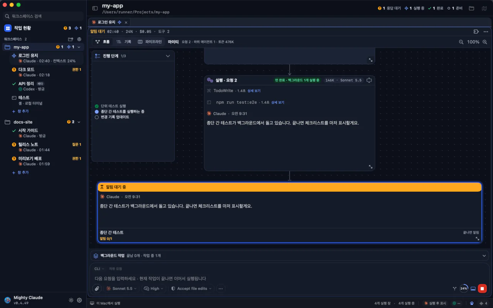
06마이티 오케스트레이션
마이티 오케스트레이션은 에이전트 창 하나가 일하는 동안 다른 일을 옆의 자식 창에 맡겨 함께 진행하는 기능입니다. 자식은 부모와 같은 에이전트(Claude, Codex, Antigravity)로 실행되고, 셋 중 다른 에이전트로도 실행할 수 있습니다(Codex와 Antigravity). 자식 창은 저마다 자기 git worktree와 브랜치에서 일하므로 서로의 파일을 건드리지 않고, 끝나면 사이드바의 카드에서 결과를 부모 브랜치에 병합합니다. 예전 이름은 에이전트 위임입니다.
자식 창을 여는 방법은 둘입니다.
- 직접 띄우기: 실행 중인 Claude 창이나, 자식이 파일을 바꿀 수 있는 모드의 Codex·Antigravity 창(Codex와 Antigravity)에 다음 요청을 쓰고 ⌘Enter를 누릅니다. 요청이 새 worktree의 자식 창에서 바로 실행됩니다(새 worktree에서 실행하기).
- Claude에게 나눠 맡기기: Claude(또는 Codex)에게 일을 나눠 자식 창에 맡기라고 요청합니다. 에이전트가 자식을 만들고, 보고를 읽고, 병합까지 합니다(Claude에게 나눠 맡기기).
실험 기능입니다. 기본으로 켜져 있고 설정에서 끌 수 있습니다. 연습용 저장소에서 먼저 써 보세요.
#한눈에 보기
직접 띄울 때의 흐름입니다.
- git 저장소 폴더를 작업 공간으로 열고, Claude 창에서 일을 시킵니다.
- Claude가 일하는 동안 다음 요청을 쓰고 ⌘Enter를 누릅니다. 돌고 있는 작업은 그대로 이어지고, 이 창 옆에 자식 창이 열려 요청을 바로 실행합니다.
- 자식 창은 사이드바에서 부모 창 아래 한 칸 들여 보이고, 옆에 상태가 붙습니다.
- 자식이 일을 마치고 커밋한 뒤 보고서를 남기면 상태가 보고함이 됩니다.
- 자식의 카드에서 병합 단추를 눌러 결과를 부모 브랜치에 넣습니다.
- 병합되면 그 자식 창을 바로 폐기할지 묻습니다. 폐기를 고르면 자식 창과 worktree, 브랜치가 정리됩니다. 병합한 내용은 부모 브랜치에 남습니다.
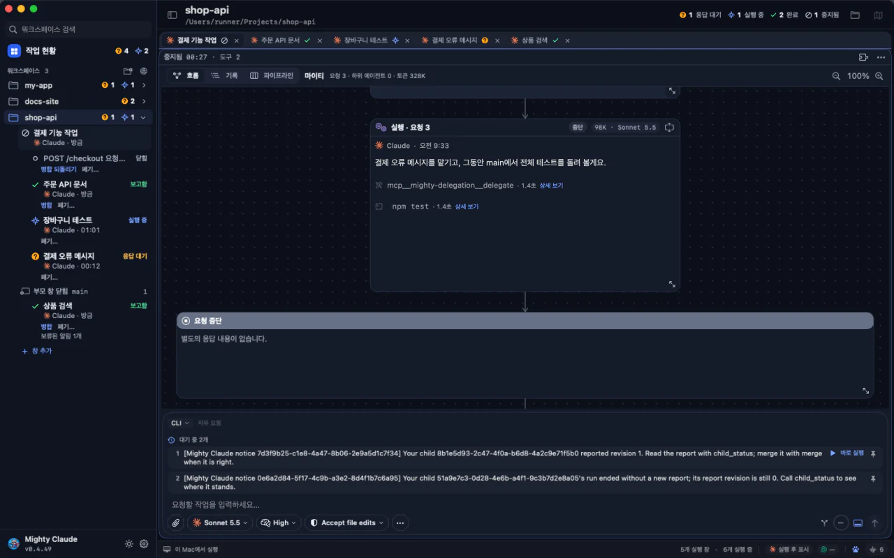
| 하고 싶은 일 | 방법 |
|---|---|
| 지금 작업 뒤에 이어서 실행 | Enter (대기열에 들어감) |
| 지금 작업과 따로, 바로 실행 | ⌘Enter 또는 새 worktree에서 실행 단추, 대기열 행의 바로 실행 단추 |
| 결과를 부모 브랜치에 넣기 | 카드의 병합 단추 |
| 병합을 무르기 | 카드의 병합 되돌리기 단추 |
| 결과를 버리기 | 카드의 폐기… 단추 |
#새 worktree에서 실행하기
Claude·Codex·Antigravity 창이 실행 중일 때 요청을 쓰고 ⌘Enter를 누르거나, 중지 단추 옆의 둥근 새 worktree에서 실행 단추(브랜치 아이콘)를 누릅니다. 돌고 있는 작업은 그대로 이어지고, 요청은 자기 worktree를 가진 새 자식 창에서 바로 실행됩니다. 그사이 부모 창에 글을 쓰기 시작하지 않았다면 새 창이 곧바로 화면에 보입니다.
- 실행 중인 창에서 Enter는 요청을 대기열에 넣어 지금 작업이 끝난 뒤 실행합니다. 입력창의 안내 문구가 두 키가 하는 일을 보여 줍니다.
- 새 worktree는 만들 수 있는 곳에서만 씁니다. 커밋이 있는 브랜치가 체크아웃된 git 저장소여야 합니다. 그 밖의 곳(git 저장소가 아님, 커밋이 아직 없음, 브랜치가 아닌 커밋이 체크아웃됨)에서는 ⌘Enter가 Enter처럼 요청을 대기열에 넣습니다.
- 자식은 부모의 마지막 커밋에서 시작합니다. 브랜치
mighty/<자식 id>가 생기고, worktree는 프로젝트 폴더 밖(Mac은~/.mightycode/worktrees/<자식 id>, Windows는%USERPROFILE%\.mightycode\worktrees\<자식 id>)에 생겨 부모의 작업을 건드리지 않습니다. 부모 폴더에서 아직 커밋하지 않은 변경은 자식에게 가지 않습니다. - 창과 같은 에이전트의 자식은 부모 창의 권한 모드로, 부모 창의 모델과 사고 강도로 실행합니다. 모든 요청을 계획 모드로 시작하는 스타일에서는 계획 모드로 시작합니다. 부모와 같은 보기로 열리고, 부모가 마이티 보기에서 스타일을 쓰고 있었다면 같은 스타일로 시작합니다(스타일의 진행 상태는 자식의 첫 요청부터 따로 셉니다). 첨부 파일도 함께 갑니다.
- 첫 메시지에는 입력한 글이 먼저 오고, 그 뒤에 앱이 자식이 일하는 곳을 알려 주며 끝나면 커밋하고 REPORT.md를 쓰라고 덧붙입니다. 그래야 카드에서 병합할 수 있습니다. 슬래시 명령(
/로 시작하는 글)은 입력한 그대로 혼자 실행되고, 앱의 안내는 자식 창의 다음 요청으로 따라가므로 명령의 인자가 되지 않습니다. - macOS 요청을 다른 에이전트로 실행하려면 새 worktree에서 실행 버튼을 오른쪽 클릭(또는 Control-클릭)해서 Claude, Codex, Antigravity 중에서 고릅니다. ⌘Enter와 그냥 클릭은 창과 같은 에이전트를 씁니다. 흐리게 표시된 항목은 실행할 수 없는 까닭을 함께 보여 줍니다. CLI가 설치되어 있지 않거나 로그인되어 있지 않은 경우(설정 › CLI에서 확인), 창의 모드가 허용하는 범위 안에서 파일을 바꿀 수 있는 모드가 없는 경우, 직접 시작한 자식이 이미 3개 열려 있는 경우입니다. 다른 에이전트의 자식은 파일을 바꿀 수 있으면서 창의 모드가 허용하지 않는 일은 하지 않는 자기 모드 가운데 가장 넓은 모드로 시작하고(Codex와 Antigravity), 그 에이전트의 새 창이 받을 모델과 사고 강도를 쓰며, 창과 같은 보기로 열리지만 스타일은 이어받지 않습니다. 그 자식을 만들거나 시작하지 못하면 글과 첨부 파일은 입력창으로 돌아가고 대화에 까닭이 적힙니다. 창 자신에게는 보내지 않습니다. 창의 에이전트는 그 모드에서 자식을 둘 수 없지만 다른 에이전트는 둘 수 있으면 버튼이 그대로 보이고, 클릭하면 메뉴가 열리며, ⌘Enter는 요청을 대기열에 넣습니다.
- Windows 요청을 다른 에이전트로 실행하려면 새 worktree에서 실행 버튼을 오른쪽 클릭(또는 버튼에서 Shift+F10)해서 Claude, Codex, Antigravity 중에서 고릅니다. CtrlEnter와 그냥 클릭은 창과 같은 에이전트를 씁니다. 나머지는 위의 Mac과 같습니다. 흐리게 표시된 항목은 실행할 수 없는 까닭을 보여 주고, 다른 에이전트의 자식은 창의 모드가 허락하지 않는 일은 하지 않는 자기 모드 중 가장 넓은 모드에서 시작하고, 그 에이전트의 새 창이 받을 모델과 사고 강도를 쓰며, 자식을 띄우지 못한 글은 입력창으로 돌아옵니다. 다른 에이전트의 자식만 가능한 곳에서는 클릭하면 메뉴가 열리고, CtrlEnter는 예전처럼 요청을 대기열에 넣습니다.
- 이미 대기열에 있는 요청도 그 행의 바로 실행 단추로 같은 방식으로 보낼 수 있습니다. 에이전트는 macOS 오른쪽 클릭(또는 Control-클릭), Windows 오른쪽 클릭(또는 Shift+F10)으로 고릅니다. 그 자식을 만들거나 시작하지 못하면 요청은 대기열 맨 앞으로 돌아가고 대화에 까닭이 적힙니다.
- 자식 창은 같은 에이전트의 보통 창처럼 씁니다. 승인 카드에 답하고, 후속 요청을 보내고, 권한 모드를 바꿀 수 있습니다.
- 직접 띄운 자식에 대해서는 부모 창의 Claude가 알림을 받지 않습니다. 부모가 맡긴 일이 아니기 때문입니다. 부모의 도구도 이 자식을 목록에 보여 주지 않고, 병합하거나 후속 지시를 보내지 못합니다(
human_started). 사이드바에서 상태를 보고, 카드의 단추를 직접 씁니다. - 열린 자식은 부모 창 하나에 3개까지이고, 디스크 여유가 10 GB 있어야 합니다. 끝난 자식 창을 닫거나 폐기하면 자리가 납니다.
- 자식을 만들 수 없거나 만든 뒤 시작하지 못하면(열린 자식이 이미 3개, 디스크 부족, worktree나 첫 실행 실패 등) 창의 대화에 이유가 남습니다. 그러면 글은 Enter를 누른 것처럼 그 창의 다음 요청이 됩니다. 대기열이 가득 차 있으면 입력창으로 돌아갑니다. 시작하지 못한 자식은 카드에서 폐기할 때까지 목록에 남습니다.
- 자식 창이나 마이티 오케스트레이션을 끈 창에서는 ⌘Enter도 Enter처럼 대기열에 넣습니다. 휴대폰에서 실행 중인 창에 보낸 글도 언제나 대기열에 들어갑니다. 사람이 보낸 글은 실행 중인 작업에 바로 전달되지 않습니다.
#창마다 worktree
한 워크스페이스에서 에이전트 창 여러 개가 동시에 일하도록, 워크스페이스의 에이전트 창도 자식처럼 자기 git worktree와 브랜치에서 일할 수 있습니다. 서로의 파일을 덮어쓰지 않고, 끝나면 창 위의 막대에서 워크스페이스 브랜치로 병합합니다.
- 언제 worktree에서 열리나: 같은 워크스페이스에 워크스페이스 폴더에서 일하는 에이전트 창이 이미 열려 있으면 새 에이전트 창을 열 때 새 worktree에서 열기, 새 worktree에서 열고, 이 워크스페이스는 앞으로도 항상, 같은 폴더에서 열기 중에서 고릅니다. 사이드바 워크스페이스 행의 오른쪽 클릭 메뉴 에이전트 창의 worktree에서 두 번째 창부터 묻기, 두 번째 창부터 항상 worktree, 모든 창을 worktree에서 (첫 창 포함) 중 하나로 정해 둘 수 있습니다. 모든 창을 worktree에서 (첫 창 포함)로 두면 첫 창도 worktree에서 일해서, 워크스페이스 폴더는 병합만 받습니다(다른 창이 워크스페이스 폴더에서 일하는 중이면 병합이 막히기 때문입니다). 폰에서 연 창은 이 설정을 따르고, 묻는 설정이면 워크스페이스 폴더에서 열립니다. 이어 하기로 연 창은 언제나 워크스페이스 폴더입니다.
- 만드는 방식: 자식과 같은 규칙입니다. 워크스페이스 브랜치의 마지막 커밋에서
mighty/<창 id>브랜치가 생기고 worktree는~/.mightycode/worktrees/<창 id>에 생깁니다. git 저장소가 아니라서 만들 수 없으면 그 이유와 함께 같은 폴더에서만 열 수 있습니다. - 에이전트에게 알림: 창의 첫 요청에 앱이 한 단락을 붙여, 에이전트가 자기 worktree와 브랜치, PORT를 알고 끝나면 커밋하도록 합니다. 병합은 사람이 앱에서 합니다.
- 막대: 창 위에 브랜치와 기준 브랜치, 기준에 없는 커밋 수(↑), 그새 기준이 앞서간 커밋 수(↓), 커밋하지 않은 변경 파일 수(±, 누르면 변경 보기), PORT(누르면 localhost를 엽니다)가 보입니다. 변경이 남아 있으면 단추가 커밋하고 병합으로 바뀌어, 새 파일까지 커밋한 뒤 병합합니다. 비밀번호처럼 보이는 새 파일이나 5MB가 넘는 새 파일은 커밋하지 않고 알려 줍니다.
- 충돌: 병합이 충돌로 막히면 충돌 해결 요청 단추가 생깁니다. 누르면 에이전트에게 기준 브랜치를 가져와 충돌을 풀고 커밋하라고 요청합니다.
- 막대의 메뉴: 변경 보기(기준 대비 바뀐 파일과 diff), 이 worktree에서 터미널 열기, Finder에서 보기 (Windows: 파일 탐색기에서 보기), 마지막 병합 되돌리기(워크스페이스 폴더가 그 뒤로 바뀌지 않았을 때만), PR 만들기…(확인 후 브랜치를 origin에 올리고, GitHub이면 PR 만들기 화면을 엽니다. 강제로 덮어쓰지 않습니다), 버리기(자식 창이 이 창의 브랜치에서 갈라져 있으면 거절합니다).
- 준비: 워크스페이스 행 메뉴의 worktree에 복사할 파일…에 적은 파일(예:
.env)을 새 worktree에 복사하고, worktree 준비 명령…을 한 번 실행합니다. 창의 실행에는PORT,MIGHTY_WORKSPACE_FOLDER,MIGHTY_WORKTREE환경 변수가 들어갑니다. - 닫기와 목록: 병합하지 않은 작업이 없으면 창을 닫을 때 worktree도 지웁니다. 작업이 남아 있으면 남겨 두고, 워크스페이스 행 메뉴의 worktree 목록…에서 다시 창으로 열거나 병합하거나 지울 수 있습니다.
#Claude에게 나눠 맡기기
Claude나 Codex 창(부모)이 일을 나눠 다른 창(자식)에게 맡길 수도 있습니다. 다른 에이전트를 지정하지 않으면 자식은 부모와 같은 에이전트입니다. 자식이 보고하면 부모가 알림을 받아 보고서를 읽고, 결과를 병합할지 정합니다. Claude와 Codex 부모 모두 Mac 앱과 Windows 앱에서 됩니다.
- git 저장소 폴더를 작업 공간으로 열고 Claude 창을 엽니다. 이 창이 부모입니다.
- "delegate 도구로 Mighty 자식 창 두 개를 열어 이 일을 나눠 맡겨"처럼 도구 이름을 넣어 요청합니다. 그냥 "나눠서 해"라고 하면 Claude가 자기 안의 하위 에이전트로 처리할 수 있습니다.
- 자식 창이 부모 옆에 열리고, 사이드바에서 부모 아래 한 칸 들여 보입니다.
- 부모가 쓰는 도구는
delegate(맡기기.agent로 자식의 에이전트를claude,codex,antigravity중에서 지정할 수 있습니다),list_children(자식 목록),child_status(상태와 보고서 읽기),merge(병합),follow_up(후속 지시)입니다.discard(폐기)는 부모가 부를 수 없고 사람만 카드에서 합니다. - 자식마다 브랜치
mighty/<자식 id>와 worktree(Mac은~/.mightycode/worktrees/<자식 id>, Windows는%USERPROFILE%\.mightycode\worktrees\<자식 id>)가 생깁니다. 자식은 부모의 마지막 커밋에서 시작합니다. - 맡긴 일은 TASK.md에, 결과는 REPORT.md에 적힙니다. 두 파일은 worktree 안의 git이 무시하는 폴더에 있어 커밋되지 않습니다.
- 자식의 권한 모드는 부모가 고른 모드이고, 부모 창의 모드보다 넓을 수 없습니다. 다른 에이전트의 자식은 부모의 모드가 하지 않는 일을 할 수 없습니다. 부모의 모드가 묻지 않고 파일을 바꿀 때만(편집 수락·auto 모드의 Claude, 승인 요청·작업 폴더 모드의 Codex, 수정 허용 모드의 Antigravity, 전체 접근 모드의 모든 에이전트) 묻지 않고 파일을 바꾸고, 부모의 모드가 파일을 바꿀 수 있을 때만 물어본 뒤 파일을 바꾸며, 부모의 모드가 묻지 않고 셸 명령을 실행할 때만(auto 모드의 Claude, 읽기 전용·작업 폴더 모드의 Codex, 전체 접근 모드의 모든 에이전트) 묻지 않고 실행하고, 전체 접근 모드 아래에서만 전체 권한을 가집니다. 그래서 셸 명령 전에 묻는 Claude의 편집 수락 모드 아래에서 Codex 자식은 작업 폴더 모드가 아니라 승인 요청 모드를 받고, 계획 모드나 수동 모드의 Claude 창에는 Codex·Antigravity 자식을 둘 수 없습니다. 넓히는 것은 사람만, 실행과 실행 사이에 자식 창 입력창의 권한 메뉴나 휴대폰 설정에서 할 수 있습니다.
- 자식 창은 부모 창과 같은 보기(흐름, 기록, 파이프라인 중 같은 것)로 열립니다. 부모가 마이티 보기의 파이프라인을 쓰고 있었다면 자식도 파이프라인으로 보입니다.
- 부모는 자식의 승인 카드에 답하지 못합니다. 자식 창에 카드가 뜨면 그 창에서 직접 답하세요.
- 부모 하나에
delegate도구로 만든 열린 자식은 3개까지이고, 직접 띄운 자식 3개와는 따로 셉니다. 어느 쪽도 다른 쪽을 막지 않습니다. 자식은 다시 위임하지 못합니다. 보고했거나 병합된 자식도 창이 열려 있으면 3개에 들어가므로, 끝난 자식 창을 닫으면 자리가 납니다. 디스크 여유가 10 GB보다 적으면 맡기기가 거절됩니다. - 부모는 알림으로 자식의 보고를 알게 되고(알림과 보류),
follow_up으로 후속 지시를 보내고(후속 지시),merge로 병합합니다(병합하기).
#Codex와 Antigravity
마이티 오케스트레이션은 Codex와 Antigravity 창에서도 됩니다. 기본으로 자식은 부모의 에이전트로 실행됩니다. Codex 창의 자식은 Codex 창이고, Antigravity 창의 자식은 Antigravity 창입니다.
어느 에이전트든 세 에이전트 중 아무 에이전트의 자식이나 둘 수 있습니다. 새 worktree에서 실행 버튼의 메뉴에서 고르거나(새 worktree에서 실행하기), Claude나 Codex 부모가 delegate의 agent(claude, codex, antigravity)로 지정합니다. 자식은 아래에 적은 자기 에이전트의 규칙대로 일합니다. 모드도, 작업을 누가 커밋하는지도(Claude 자식은 스스로 커밋하고, Codex·Antigravity 자식의 작업은 앱이 커밋합니다) 자식의 에이전트를 따릅니다. 알림과 병합은 부모의 에이전트를 따릅니다. delegate는 모르는 에이전트(agent_unknown), 설치되어 있지 않거나 로그인하지 않은 에이전트(agent_unavailable), 자식 에이전트의 모드가 아니거나, 그 모드에서 파일을 바꿀 수 없거나, 부모의 모드보다 많은 일을 할 수 있는 모드를 거절합니다(모드를 비교하는 방법은 Claude에게 나눠 맡기기에 있습니다).
- 자식이 일할 수 있는 모드: 자식은 부모의 권한 모드로 시작하므로, Codex와 Antigravity 창은 자식이 파일을 바꿀 수 있는 모드에서만 ⌘Enter로 자식을 띄웁니다. Codex는 작업 폴더·승인 요청·전체 접근 모드, Antigravity는 수정 허용·전체 접근 모드입니다. 그 밖의 모드에서는 ⌘Enter가 예전처럼 요청을 대기열에 넣습니다.
- Codex 창에는 작업 폴더 모드와 전체 접근 모드에서만 위임 도구가 붙습니다. 읽기 전용 모드에서는 Codex가 도구를 거절하고, 승인 요청 모드에서는 앱이 보여 줄 수 없는 방식으로 묻기 때문입니다.
delegate는 파일을 바꿀 수 없는 자식 모드를 거절합니다. Codex는 실행이 전체 접근 모드로 시작했을 때만merge를 부를 수 있고, 그렇지 않으면 거절되므로(merge_human_only) 카드에서 병합합니다. 실행 중인 Codex 턴은 글을 받지 못하므로, 실행 중인 Codex 부모에게 가는 알림은 그 실행이 정상으로 끝난 뒤 다음 실행으로 가고, 중지나 오류로 끝나면 보류됩니다. - Antigravity 창에는 위임 도구가 없습니다(Antigravity는 전역 설정에서만 도구를 받는데, 앱은 그 설정을 바꾸지 않습니다). 자식은 ⌘Enter나 새 worktree에서 실행 버튼으로만 띄웁니다.
- Codex와 Antigravity 자식은 전체 접근 모드가 아니면 자기 worktree에서 커밋할 수 없어서, 변경을 그대로 두라는 안내를 받습니다. 자식의 실행이 REPORT.md가 바뀐 채 정상으로 끝나면 앱이 변경을 자식 브랜치에 커밋하고(
mighty: <자식 id> report r<n>) 그 커밋에서 보고를 기록합니다. 중지나 오류로 끝나면 다음 정상 종료를 기다립니다. .gitignore가 빼는 새 파일, 비밀 정보처럼 보이는 새 파일(.env*,*.pem,*.key,*.pfx,*.p12,*.ppk,id_rsa*,id_ed25519*,id_ecdsa*,id_dsa*,credentials*,secrets.*,.npmrc,.pypirc), 5 MB를 넘는 새 파일은 커밋하지 않고, 뒤의 두 가지는 자식 창에 이름을 알립니다. 커밋에는 git에 설정한 이름과 이메일을 쓰고(없으면 실패하고 창에 그렇게 알립니다) 서명하지 않습니다. worktree에 풀리지 않은 병합 충돌이 있으면 아무것도 커밋하지 않고 창에 그렇게 알립니다. - 카드의 병합이 충돌로 거절되면 커밋할 수 있는 자식(전체 접근 모드)에게만 충돌을 풀라고 요청합니다. 그렇지 않으면 자식을 전체 접근 모드로 바꾼 뒤 자식 창에서 요청하거나, 그 worktree의 터미널에서 직접 충돌을 풀고 커밋하세요.
- 저장소의 하위 폴더를 작업 공간으로 연 경우, Codex 자식은 REPORT.md가 있는 worktree 맨 위 폴더에도 쓸 수 있고, Antigravity 자식에게는 그 폴더가 추가됩니다.
#자식의 상태
사이드바에서 자식마다 상태가 보입니다.
| 상태 | 뜻 |
|---|---|
| 만드는 중 | worktree와 창을 만드는 중입니다. |
| 실행 중 | 일하고 있습니다. |
| 응답 대기 | 승인이나 질문에 사람의 답을 기다립니다. |
| 보고함 | REPORT.md를 남기고 실행을 마쳤습니다. 병합할 수 있습니다. 보고한 뒤의 실행이 아무것도 바꾸지 않고 끝나도 이 상태로 남습니다. |
| 병합됨 | 부모 브랜치에 병합되었습니다. |
| 끝남 | 새 보고 없이 실행이 끝났습니다. |
| 중단됨 | 앱을 끄는 바람에 실행이 끊겼습니다. |
| 시작 실패 | 자식 창을 시작하지 못했습니다. |
| 닫힘 | 창이 닫혔습니다. 폐기할 때까지 목록에 남습니다. |
자식이 새 실행을 시작하면 보고함 상태가 풀리고, 다시 보고하면 다음 보고 번호가 붙습니다. 자식이 보고 없이 끝났다면 자식 창에 커밋하고 REPORT.md를 쓰라고 다시 요청하세요.
#병합하기
자식의 결과를 부모 브랜치에 넣는 방법은 둘입니다.
- 카드의 병합 단추: 사람이 누릅니다. 직접 띄운 자식은 이 방법으로만 병합합니다. 빨리 감기(fast-forward)가 되면 그렇게 하고, 안 되면 병합 커밋을 정확히 하나 만듭니다. 먼저 충돌을 미리 살펴 보고, 거절되면 그 이유를 카드에 보여 줍니다. 자식이 아직 일하는 중이거나, 부모 창이 실행 중이거나, 부모 폴더에 커밋하지 않은 변경이 있으면 거절하지 않고 병합을 예약합니다. 카드에 무엇을 기다리는지 나오고, 그것이 끝나면 저절로 병합됩니다. 자식이 새 보고 없이 끝나면 예약이 취소됩니다. 자식을 만들 때의 부모 브랜치가 그 뒤 지금 체크아웃된 브랜치(예: main)에 병합됐거나 지워졌다면, 지금 브랜치에 병합합니다. 부모의
merge도구도 이렇게 브랜치를 따라갑니다. 병합이 되면 그 자식 창을 바로 폐기할지 묻습니다. 폐기를 고르면 자식 창을 닫고 worktree와 브랜치를 지웁니다. 병합된 내용은 부모 브랜치에 그대로 남지만, 그 병합은 더 이상 되돌릴 수 없습니다. 나중에를 고르면 카드가 그대로 남습니다. 충돌로 거절되면 앱이 자식 창에 부모 브랜치를 가져와 충돌을 풀고, 커밋하고, 다시 보고하라고 요청합니다. 카드에 그렇다고 나오고 자식은 실행 중 상태가 됩니다. 자식이 다시 보고하면 저절로 병합됩니다. 이 요청은 보고마다 한 번만 갑니다. 자식 창이 지금 실행을 시작하지 못하면 보내지 않고 거절 이유만 카드에 남으며, 다음에 병합할 때 다시 시도합니다. 요청을 받고도 시작하지 못했거나, 자식이 계획 모드여서 계획만 세우고 끝났다면, 자식 창에 직접 충돌을 풀고 다시 보고하라고 요청하세요. Codex와 Antigravity 자식에게는 전체 접근일 때만 요청합니다(Codex와 Antigravity). - 부모의
merge도구: Claude에게 맡긴 자식만 됩니다. 빨리 감기만 합니다. 부모는child_status가 준 자식의 head를 함께 넘깁니다. 자식이 아직 보고하지 않았거나, 자식이나 부모 폴더에 커밋하지 않은 변경이 있거나, 자식의 head가 움직였거나, 부모 브랜치가 그새 더 나아갔거나(갈라짐), 부모 브랜치가 체크아웃되어 있지 않으면 거절하고 아무것도 바꾸지 않습니다. 이 도구에 승인 카드가 뜨는지는 부모 창의 권한 모드에 따릅니다. Codex 부모는 실행이 전체 접근 모드로 시작했을 때만 쓸 수 있고, 다른 모드에서는merge_human_only로 거절되므로 카드에서 병합합니다.
자식 하나를 병합하면 부모 브랜치가 앞으로 가므로, 나머지 자식은 보통 merge 도구에서 갈라짐으로 거절됩니다. 그때는 카드의 병합 단추로 병합하세요.
병합한 뒤 자식이 새 실행을 시작하기 전까지는, 창을 닫아도 카드에 병합 되돌리기 단추가 남습니다. 부모 브랜치가 그 병합에 머물러 있고, 부모 창이 쉬고 있고, 커밋하지 않은 변경이 없을 때만 됩니다. 되돌리면 파일이 병합 전으로 돌아가고, 창이 열린 자식은 다시 보고함 상태가 됩니다.
병합은 됐는데 위임 기록을 저장하지 못하면 카드가 그렇다고 알려 줍니다. 병합은 그대로이고, 기록은 다음에 저장할 때 다시 씁니다.
#폐기하기
카드의 폐기… 단추는 자식의 worktree와 브랜치를 병합하지 않은 작업까지 함께 지웁니다. 사람만 할 수 있고, 부모는 하지 못합니다. 병합한 자식은 병합 직후에 묻는 창에서도 폐기할 수 있습니다(병합하기).
- 확인 창(이 자식 창을 폐기할까요?)이 자식 worktree 안에 들어 있어 함께 지워질 다른 worktree를 모두 보여 줍니다.
- 그 목록을 확인할 수 없으면 확인 창에 폐기 단추가 나오지 않고, 아무것도 멈추거나 지우지 않습니다.
앱은 병합하지 않은 작업을 스스로 지우지 않습니다. 병합하지 않은 작업이 사라지는 길은 사람이 누르는 폐기뿐입니다.
#창 닫기와 정리
- 병합된 자식 창을 닫으면 작업이 모두 병합되어 있고 남은 변경이 없을 때 앱이 worktree와 브랜치를 정리합니다(
git branch -d, 강제 삭제는 하지 않음). 조건이 맞지 않으면 창만 닫히고 worktree는 남습니다. - 병합하기 전에 자식 창을 닫으면 앱에서는 더 이상 병합할 수 없습니다. 카드에는 폐기만 남고, 브랜치와 worktree는 폐기할 때까지 그대로 있습니다.
- 열린 자식이 있는 부모 창을 닫으면 데스크톱 앱에서 먼저 묻습니다(이 부모 창을 닫을까요?). 부모 창만 닫히고 자식은 계속 일합니다.
- 부모가 닫힌 자식은 사이드바의 부모 창 닫힘 항목 아래 카드로 남습니다. 그 자식의 알림은 카드에 보류되어 개수가 보이고, 후속 지시는 더 받지 않습니다.
- 열린 자식이 있거나 정리되지 않은 자식 worktree가 남은 작업 공간은 제거할 수 없습니다.
- Windows 자식 worktree 안에 정션이나 심볼릭 링크(예: 링크로 만든
node_modules)가 있으면, 병합된 자식 창을 닫아도 앱이 worktree를 정리하지 않고 남깁니다. 링크를 따라가 그 대상 폴더까지 지우는 일을 막기 위해서입니다. 이때는 카드의 폐기… 단추로 지웁니다. 폐기는 링크 자체만 먼저 떼고, 링크가 가리키는 폴더는 건드리지 않습니다.
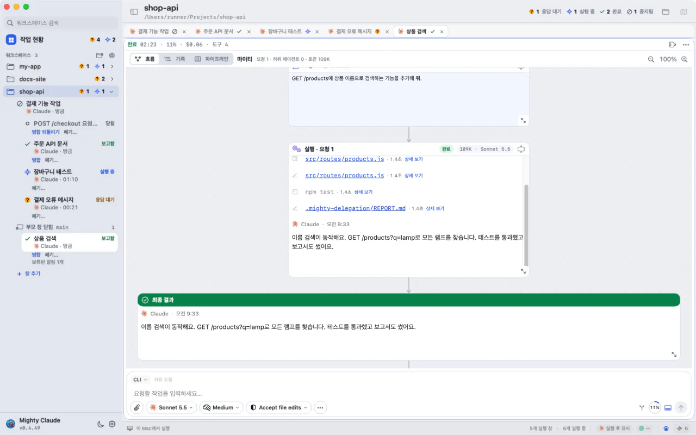
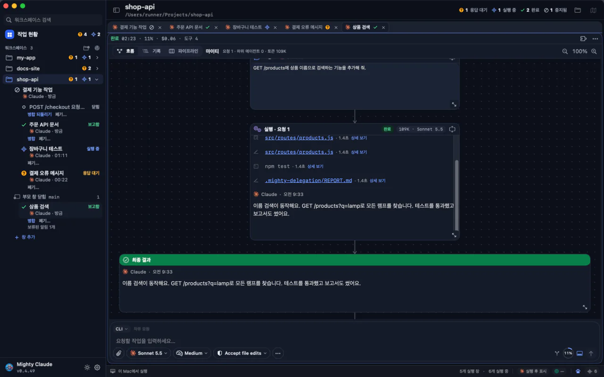
#알림과 보류
Claude에게 맡긴 자식이 보고하거나 시작하지 못하면 부모에게 알림이 한 번 갑니다. 부모가 시작한 실행(처음 맡긴 일이나 후속 지시)이 보고 없이 끝날 때도 알림이 갑니다. 알림은 [Mighty Code notice …]로 시작하는 짧은 안내일 뿐이고, 보고서 내용은 부모가 child_status로 읽습니다. 직접 띄운 자식은 알림을 보내지 않습니다.
- 부모가 Claude로 실행 중이면 알림이 그 실행에 바로 전달되고, 부모의 마이티 보기에 주황색 위임 알림 블록으로 보입니다. 부모가 답을 마친 뒤에 도착한 알림도 같은 블록으로 보이고, 그 알림에 Claude가 한 답은 부모 요청의 결과에 붙지 않고 새 위임 알림 다이어그램으로 열립니다. 실행 중인 Codex 부모는 그 실행이 정상으로 끝난 뒤 다음 실행으로 받습니다.
- 부모가 앱을 연 뒤 정상으로 끝나 쉬고 있으면 알림이 다음 실행을 시작합니다.
- 그 밖의 경우에는 알림이 보류됩니다. 멈춘 뒤, 오류 뒤, 앱을 다시 연 뒤, CLI 업데이트 중이 그렇습니다. 이미 보류된 항목이 있으면 새 알림도 그 뒤에 보류되어 순서가 지켜집니다.
보류된 알림은 부모 입력창 위 대기열 맨 위에 핀 표시가 붙은 행으로 보입니다. 이 행에는 지우기 단추가 없고, 보통 대기 요청과 달리 멈추거나 앱을 다시 열어도 남습니다.
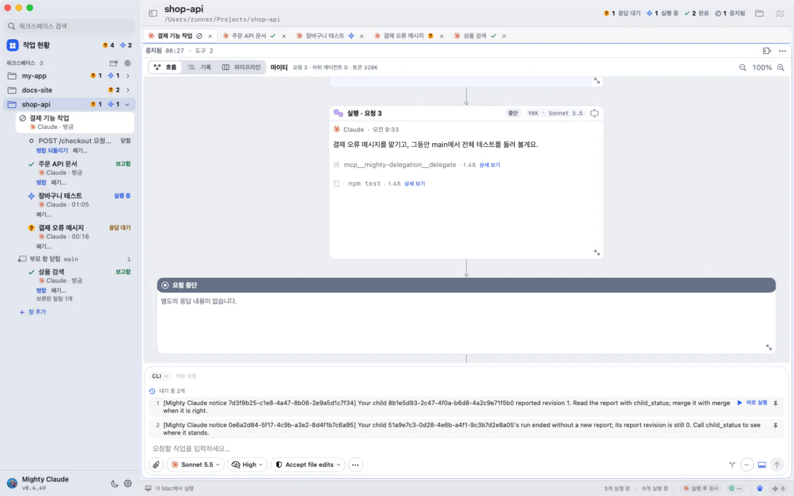
- 다음에 무언가를 보내면 보류된 항목이 모두, 오래된 것부터, 내 글 앞에 붙어 실행 하나로 들어갑니다.
- 보류된 행 가운데 맨 위 행의 바로 실행 단추를 누르면 보류된 항목 전부를 실행 하나로 이 창에 보냅니다. 나머지 보류된 행에는 단추가 없습니다. 새 worktree를 여는 바로 실행은 보류된 항목을 이 창에 그대로 남겨 둡니다. 항목이 보류되어 있는 동안에는, 원래 실행 중인 Claude에 바로 들어갈 수 있는 요청도 보류된 항목이 전달될 때까지 흐리게 표시됩니다.
- 알림은 앱을 다시 열어도 정확히 한 번만 전달됩니다. 보류된 행은 휴대폰 대기열에도 보이고, 휴대폰에서 보내도 함께 전달됩니다.
#후속 지시
부모는 follow_up 도구로 Claude에게 맡긴 자식에게 후속 지시를 두 번까지 보낼 수 있습니다. 후속 지시는 알림과 같은 규칙으로 자식 창에 전달되고, 하나에 48 KiB까지입니다. 사람은 자식 창의 입력창에 직접 쓰면 되고, 횟수 제한이 없습니다.
#켜고 끄기
macOS 끄지 않는 한 켜져 있습니다. 설정의 일반 탭에서 마이티 오케스트레이션을 켜고 끕니다. 앱을 다시 열지 않아도 다음에 시작하는 실행부터 적용됩니다. 같은 스위치가 defaults 키 delegation.enabled이므로 터미널에서 다음 명령으로 꺼도 되고, defaults delete dev.mightycode.native delegation.enabled로 다시 켭니다.
defaults write dev.mightycode.native delegation.enabled -bool falsemacOS 예전 버전은 그 키를 켜야만 켜졌고, 끄는 방법이 defaults delete …였습니다. 이제 그렇게 하면 켜진 채로 남으므로, 계속 꺼 두려면 설정에서 마이티 오케스트레이션을 끄세요.
Windows 끄지 않는 한 켜져 있습니다. 설정의 일반 탭에서 마이티 오케스트레이션을 켜고 끕니다. 앱을 다시 열지 않아도 다음에 시작하는 실행부터 적용됩니다. 같은 스위치가 HKEY_CURRENT_USER\Software\MightyCode 아래의 delegation.enabled 값(REG_DWORD)이라서, 0이면 꺼지고 값이 없거나 다른 값이면 켜집니다. 그래서 명령 프롬프트나 PowerShell에서 다음 명령으로 꺼도 되고, reg delete "HKCU\Software\MightyCode" /v delegation.enabled /f로 다시 켭니다.
reg add "HKCU\Software\MightyCode" /v delegation.enabled /t REG_DWORD /d 0 /fWindows 예전 버전은 그 값을 1로 넣어야만 켜졌습니다. 그때 넣어 둔 1은 켜진 상태를 그대로 둡니다.
- 켜면 Claude나 Codex 창에서 새 실행을 시작할 때마다 위임 도구가 붙습니다. 이미 돌고 있는 실행에는 붙지 않습니다.
- 끄면 도구만 떨어지고 ⌘Enter는 Enter처럼 요청을 대기열에 넣습니다. 이미 있는 자식 창과 카드, 정리는 그대로 동작합니다.
#한도와 지원 범위
| 항목 | 한도 |
|---|---|
| 부모 하나의 열린 자식 | 직접 띄운 3개, delegate로 만든 3개 |
| 위임 깊이 | 한 층(자식은 다시 자식을 만들지 못함) |
자식 하나의 후속 지시(follow_up) | 2개, 하나에 48 KiB |
| 맡기는 일(TASK.md, 직접 띄운 요청) | 64 KiB |
| 필요한 디스크 여유 | 10 GB |
- 자식은 부모와 같은 에이전트로 실행되고, 다른 에이전트로도 실행됩니다(Codex와 Antigravity). Claude와 Codex 창은 도구와 ⌘Enter로, Antigravity 창은 ⌘Enter로만 자식을 만듭니다(Codex와 Antigravity).
- Mac 앱과 Windows 앱 모두 기본으로 켜져 있고 설정에 스위치가 있습니다(켜고 끄기). 휴대폰에는 새 화면이 없고, 보류된 행은 휴대폰 대기열에도 보입니다.
07터미널·파일·브라우저 창
에이전트 창 옆에 터미널, 파일, 브라우저 창을 함께 열어 둘 수 있습니다.
#터미널 창
워크스페이스 폴더에서 열리는 실제 터미널입니다.
- 터미널 실행 창 추가(⌘T)를 누르거나 창 추가 → 새 터미널 항목을 고릅니다.
- 명령을 직접 입력합니다.
셸이 끝나면 다시 시작을 누릅니다. 예전 명령 기록은 실행 창 메뉴의 이전 명령 실행 기록…에서 봅니다. 앱을 끄면 터미널은 다시 열리지 않습니다.
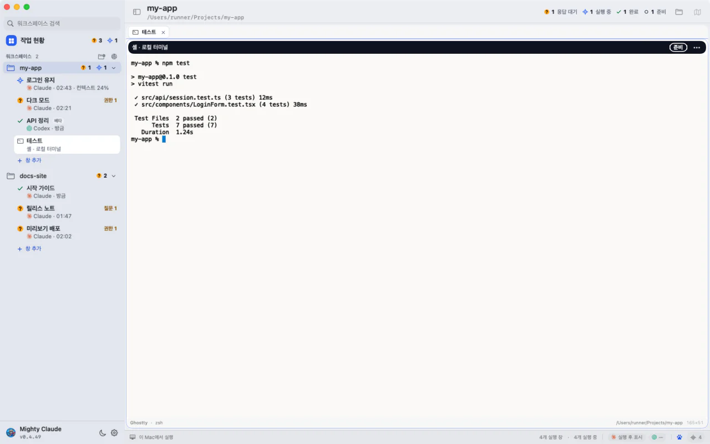
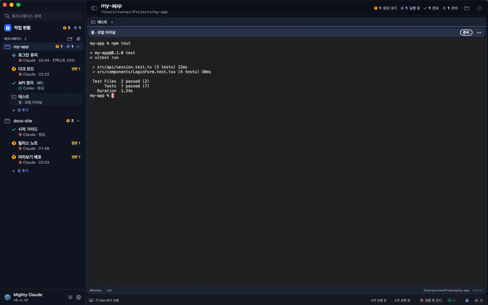
#에이전트 터미널
Claude나 Codex가 사용자가 봐야 하는 명령(개발 서버, 로그인 등)을 실행하면 에이전트 창 오른쪽에 전용 터미널 창이 생깁니다. 실행 중인 명령에 직접 입력할 수 있습니다. 창을 닫아도 명령은 앱을 끌 때까지 계속 돌고, 창 머리의 터미널 창 열기 단추로 다시 엽니다.
#파일 창
워크스페이스의 파일을 둘러보는 읽기 전용 창입니다. 파일을 고치지는 않습니다.
- 파일 창 열기(⇧⌘E)를 누르거나 워크스페이스 머리의 폴더 단추를 누릅니다.
- 왼쪽 목록에서 파일을 고릅니다. 이름 필터로 이름을 찾고, 방향키와 Return으로 움직입니다.
- 오른쪽에서 내용을 봅니다.
| 파일 | 보이는 방식 |
|---|---|
| 소스·텍스트 | 줄 번호와 색 강조. 큰 파일은 처음 1 MB만 보입니다. |
| Markdown | 미리보기와 원본 보기를 전환합니다. |
| 이미지·PDF | 창에 맞추기, 실제 크기, 확대, 축소. PDF는 첫 쪽만 보입니다. |
| 그 밖 | 미리볼 수 없는 파일. Finder에서 보기로 엽니다. |
워크스페이스 밖의 파일은 보이지 않습니다. 파일이 바뀌었으면 새로 고침을 누릅니다.
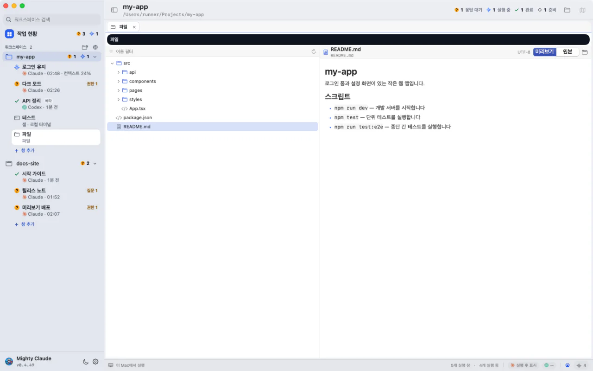
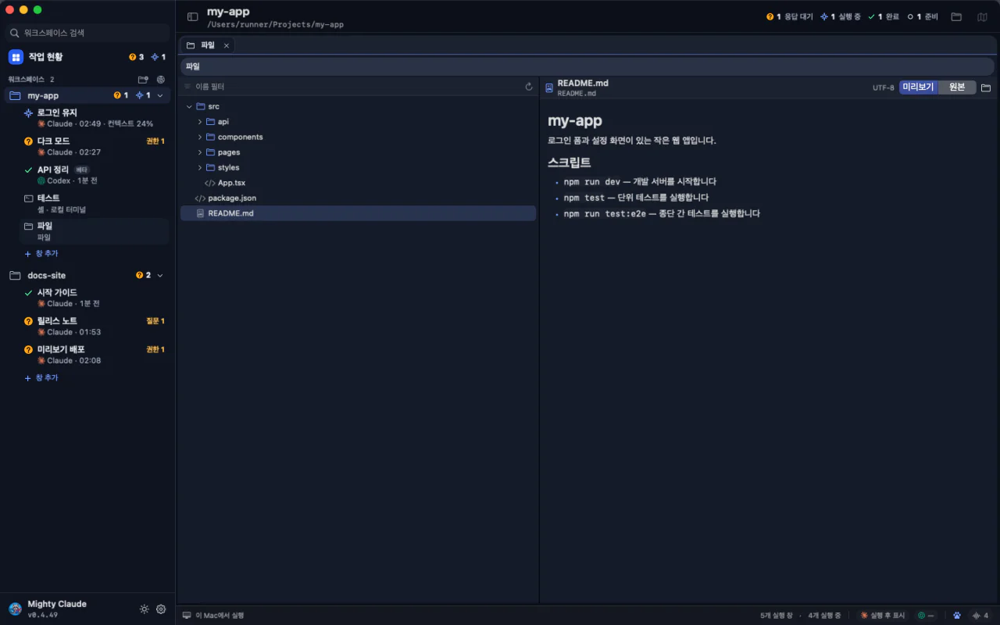
#브라우저 창
앱 안에서 웹 페이지를 여는 창입니다. 실험 기능이라 처음에는 꺼져 있습니다.
- 설정… → 일반에서 브라우저 창 사용 (실험)를 켭니다.
- 앱을 다시 엽니다.
- 창 추가 → 새 브라우저 탭을 고릅니다.
- 주소를 입력하고 뒤로, 앞으로, 새로 고침을 씁니다.
로그인 상태는 워크스페이스마다 따로 저장됩니다.
브라우저 엔진은 Apple Silicon Mac에서만 동작합니다. 엔진이 들어 있지 않은 빌드에서는 창에 안내가 보입니다.
#에이전트가 링크를 열 때
에이전트가 웹 페이지를 열려고 하면 창 안에 링크 열기 카드가 뜹니다.
- 앱에서 열기 또는 브라우저에서 열기 단추를 고릅니다.
- 이 워크스페이스에서 내 선택 기억을 켜면 다음부터 묻지 않습니다.
- 30초 안에 고르지 않으면 앱에서 엽니다. 브라우저 창이 꺼져 있으면 시스템 브라우저로 엽니다.
이 선택은 일반의 에이전트 링크 열기에서 바꿉니다: 매번 묻기, 앱 내, 시스템 브라우저.
08설정
설정…(⌘,)이나 사이드바 아래의 설정 단추로 엽니다. 왼쪽에서 탭을 고르고, 닫기 단추나 Esc로 닫습니다. 마지막에 본 탭을 기억합니다.
#일반
일반 탭의 화면에서 앱의 모양을 바꿉니다.
- 테마: 다크 또는 라이트. 사이드바 아래 단추로도 바꿉니다.
- 언어: 앱의 언어. 언어 바꾸기를 보세요.
- Claude 상태 줄 표시: Claude 설정의 상태 줄 명령을 실행해 입력창 아래에 보여 줍니다.
- 브라우저 창 사용 (실험): 브라우저 창을 켭니다. 앱을 다시 열어야 적용됩니다.
- 마이티 오케스트레이션: 기본으로 켜져 있습니다. Claude 창이 자기 worktree를 가진 자식 창을 열 수 있고, 실행 중인 Claude 창에서 ⌘Enter를 누르면 요청이 새 자식 창에서 실행됩니다. 마이티 오케스트레이션을 보세요.
- 에이전트 링크 열기: 에이전트가 연 링크를 어디서 열지 정합니다.
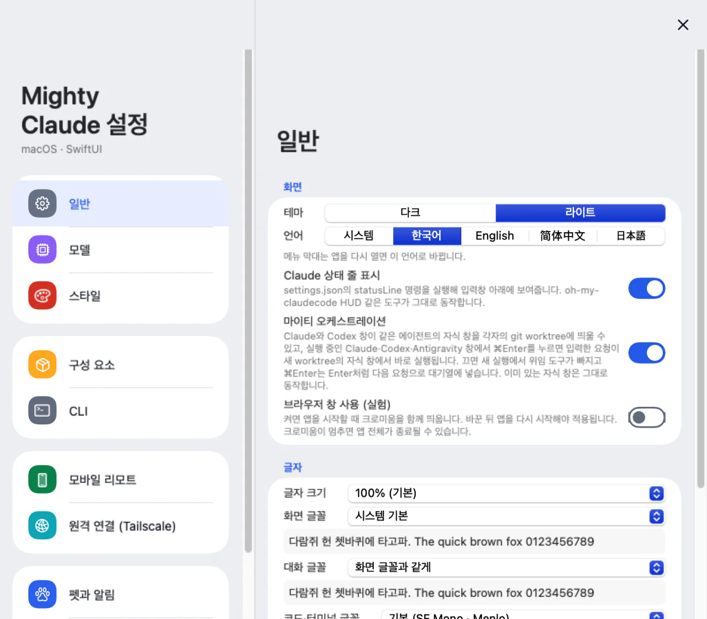
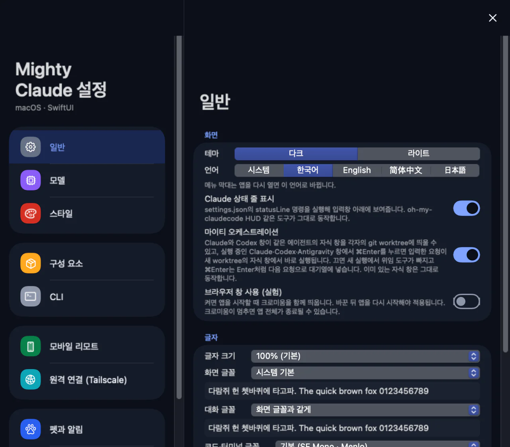
#글자 크기와 글꼴
macOS 같은 탭의 글자 항목에서 앱 전체의 글자를 바꿉니다.
- 글자 크기: 85%에서 150% 사이에서 고릅니다. 대화, 입력창, 사이드바, 설정, 터미널이 함께 커지고 작아집니다.
- 화면 글꼴: 사이드바, 메뉴, 단추, 설정 같은 앱 화면의 글꼴입니다. 이 Mac에 설치된 글꼴 가운데 고르고, 시스템 기본은 macOS의 기본 글꼴입니다.
- 대화 글꼴: 에이전트의 답, 내가 보낸 말, 입력창, 마이티 카드와 보드의 본문 글꼴입니다. 화면 글꼴과 같게로 두면 화면 글꼴을 따라갑니다.
- 코드·터미널 글꼴: 코드 블록, 인라인 코드, 도구 출력과 명령 줄, 터미널 창의 글꼴입니다. 고정폭 글꼴만 고를 수 있고, 맨 위의 기본값은 지금까지와 같이 코드에 SF Mono, 터미널에 Menlo를 씁니다. 고른 글꼴이 없어지면 터미널은 Menlo로 돌아갑니다. 열려 있는 터미널에도 바로 적용됩니다. 경로, 버전, 개수 같은 앱 화면의 고정폭 글자는 시스템 고정폭 글꼴을 그대로 씁니다.
- 글꼴마다 아래에 그 글꼴로 쓴 한 줄 미리 보기가 나옵니다.
- 기본값으로 단추는 크기와 세 글꼴을 처음 상태로 되돌립니다.
보기 메뉴의 글자 크게(⌘=), 글자 작게(⌘-), 기본 글자 크기(⌘0)로도 크기를 바꿉니다. 바꾼 값은 바로 적용되고, 앱을 다시 열어도 그대로입니다.
#모델
모델 탭의 페이즈별 모델에서 작업 단계별로 쓸 모델을 이 Mac 전체에 정합니다. 단계는 계획, 실행, 검토, 서브에이전트입니다.
- 기본값으로 두면 CLI가 정합니다.
- 실행 창에서 선택은 실행 창의 모델 칩에서 고른 모델을 씁니다.
- 목록에 없는 모델 이름은 등록된 이름에 추가합니다. 그 모델이 사고 강도를 지원하면 사고 강도 지원을 켭니다.
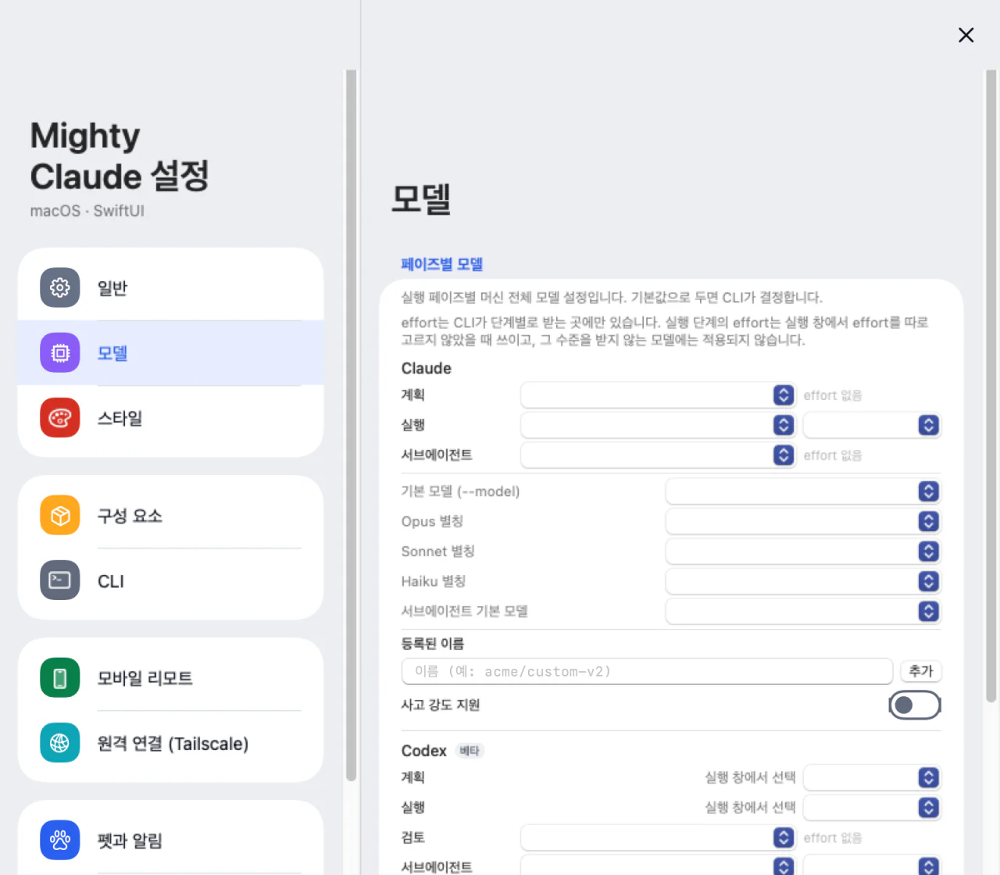
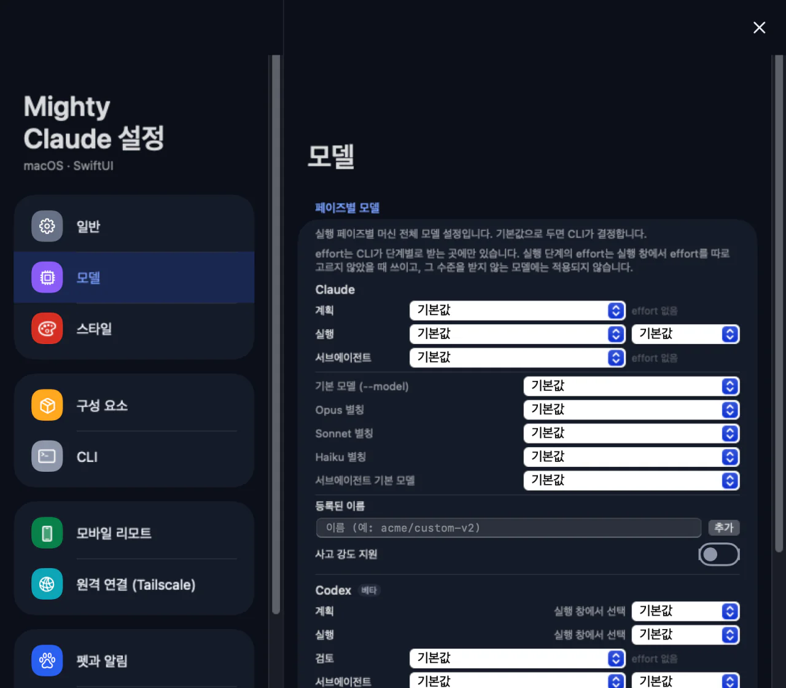
#스타일
스타일 탭에서 마이티 스타일 목록을 관리합니다. 파일에서 스타일을 등록하고, 내용을 확인해 허용하거나, 허용을 거둡니다. 자세한 내용은 스타일에 있습니다.
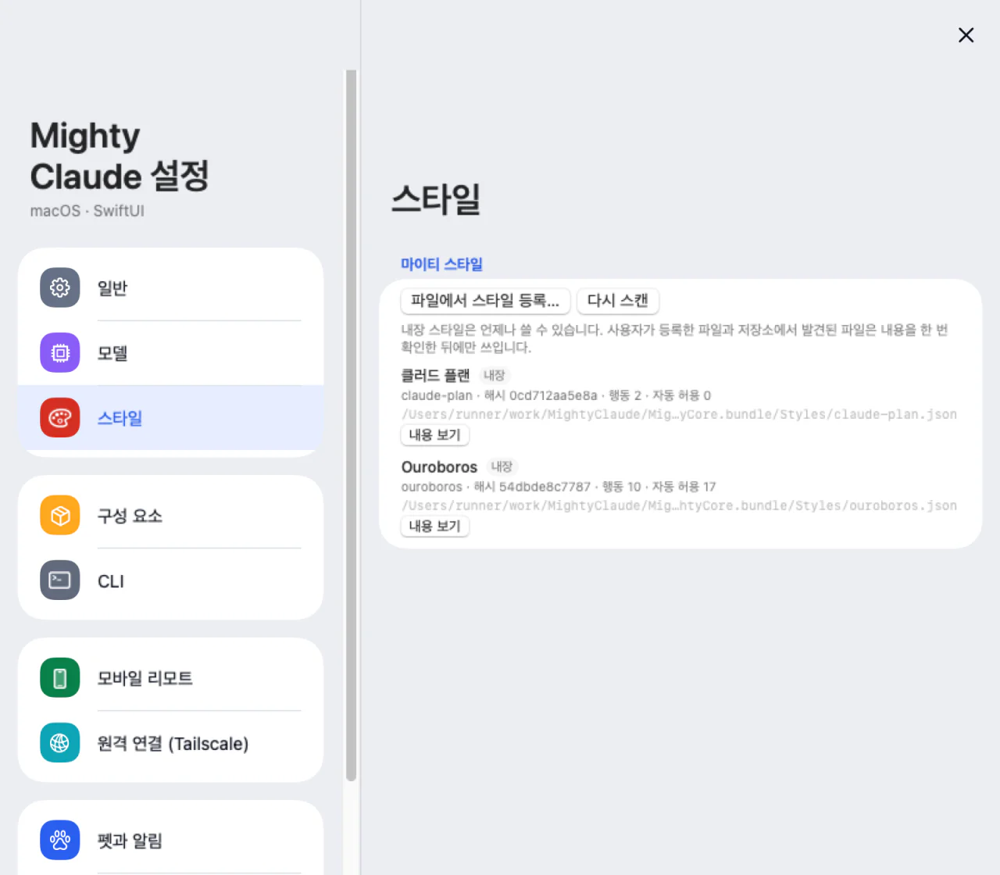
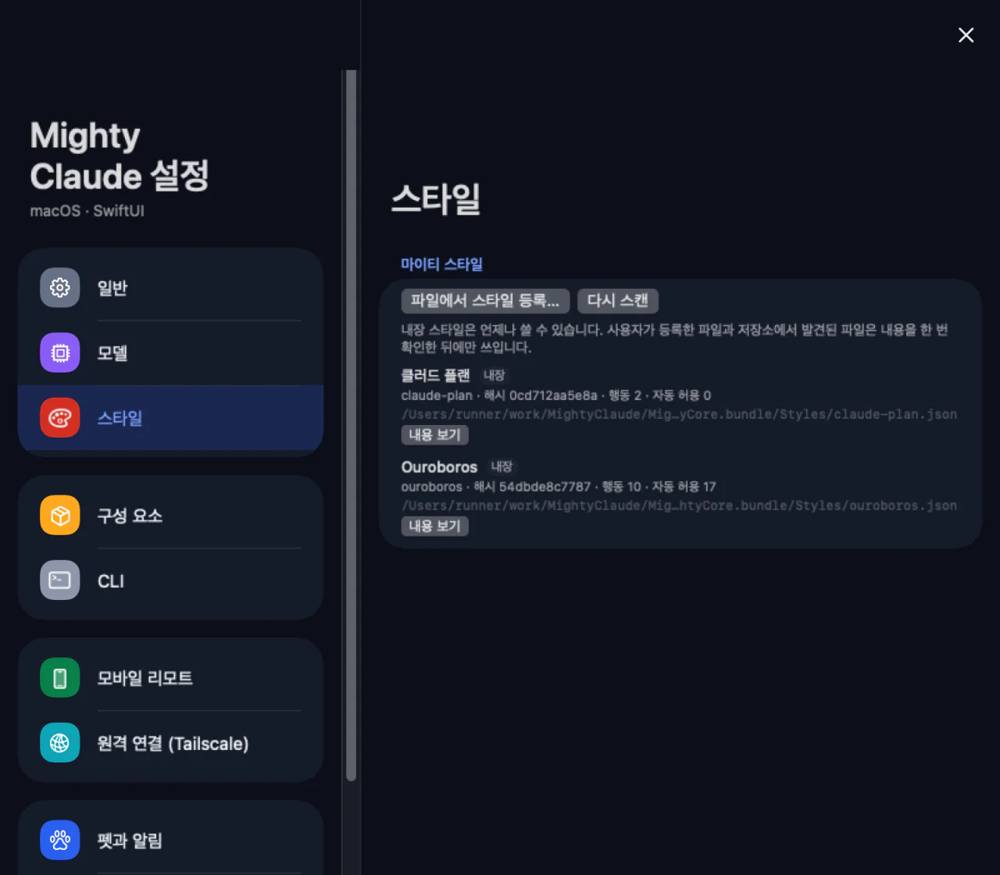
#구성 요소
구성 요소 탭은 앱에 필요한 것이 준비됐는지 보여 줍니다.
- 구성 요소: 필요한 도구 목록이 여기 있습니다. 에이전트 CLI, 기본 도구, 스타일 도구, Tailscale, gh·glab마다 설치됨, 필요, 업데이트 필요, 확인 필요, 설치 중, 실패 중 하나가 보이고, 빠진 항목을 골라 선택 항목 설치를 누르면 명령을 모두 확인한 뒤 앱이 따로 여는 창에서 설치합니다. Mac에서는 터미널 창, Windows에서는 PowerShell 창입니다. 다시 확인과 목록이 열려 있는 동안의 자동 확인은 CLI를 매번 다시 찾고, 너무 오래된 Claude Code에는 업데이트 단추가 나옵니다.
- 내 작업 도구 모음: 자주 쓰는 도구 목록입니다. 설치 전에 실행할 명령을 모두 보여 주고 설치 확인을 받습니다. 목록을 내보내기하거나 가져오기할 수 있습니다.
#CLI
CLI 탭에서 CLI의 상태, 로그인, 업데이트를 관리합니다.
#로그인
CLI 계정에서 CLI마다 로그인합니다.
- 로그인을 누릅니다. Claude는 Claude 구독으로 로그인과 Anthropic Console(API 과금)로 로그인 중에서 고릅니다.
- 앱 안에 터미널 창이 열리고 CLI의 로그인이 시작됩니다. 브라우저에서 승인합니다.
- 로그인이 끝나면 상태가 바뀝니다. 바뀐 계정은 다음 요청부터 쓰입니다.
계정을 바꾸려면 계정 변경, 로그아웃하려면 로그아웃을 누릅니다. 로그인하려면 워크스페이스가 하나 이상 열려 있어야 합니다. 로그인이 끊기면 자동으로 다시 로그인을 켜면 로그인이 끊겼을 때 자동으로 다시 로그인하고 실패한 요청을 다시 보냅니다.
#CLI 업데이트
CLI 업데이트에서 설치된 CLI를 최신으로 바꿉니다.
- 업데이트 하기: 지금 업데이트합니다.
- 앱 시작 시 CLI 자동 업데이트: 앱을 열 때, 그리고 6시간마다 확인합니다.
- 플러그인 자동 업데이트: Claude와 Codex 플러그인도 함께 업데이트합니다.
CLI를 처음 설치한 방법(npm, Homebrew 등)을 그대로 씁니다.
#모바일 리모트
모바일 리모트 탭에서 휴대폰을 연결합니다. 화면 보기·조작은 지금 잠시 멈춰 있어서 이 탭에는 그렇다는 안내 한 줄만 보입니다(화면 보기). 휴대폰 원격을 보세요.
#원격 연결
원격 연결 (Tailscale) 탭에서 이 컴퓨터의 워크스페이스를 Tailscale로 공유하거나, 다른 컴퓨터가 공유한 워크스페이스에 연결합니다. 원격 연결 (Tailscale)을 보세요.
#펫과 알림
펫과 알림 탭에서 데스크톱 펫과 완료 알림을 정합니다.
- 데스크톱 펫 표시: 화면 위를 다니는 너구리 펫을 켭니다. 펫을 끌어 옮기고, 누르면 말풍선이 열리고 닫힙니다.
- 펫 말풍선에 요청과 현재 작업 표시: 말풍선에 요청과 지금 하는 일, 걸린 시간을 보여 줍니다. 말풍선에서 승인(이번만 허용 / 거부)에 답할 수도 있습니다. Mac에서는 요청에 단계나 백그라운드 작업이 있으면 말풍선 위에 진행 카드가 붙어, 가장 새 요청과 진행 중인 단계 앞뒤의 단계(5개까지), 백그라운드 작업(3개까지)을 보여 줍니다. 머리를 누르면 한 줄로 접히고(앱을 다시 열어도 유지됩니다), 줄을 누르면 그 실행 창이 열립니다.
- 펫: 펫을 고릅니다. Codex 펫 가져오기…로 다른 펫을 더할 수 있습니다.
- 펫 애니메이션 줄이기: 움직임을 줄입니다.
- 작업 완료 시 Mac 알림: 요청이 성공적으로 끝나면 Mac 알림을 보냅니다. 알림을 누르면 그 실행 창이 열립니다. 알림에는 요청이나 결과 내용이 들어가지 않습니다.


#앱 정보
앱 정보 탭에서는 앱을 업데이트하고 버전과 데이터 저장 위치를 봅니다.
- 앱 업데이트: 업데이트를 보세요.
- 상태 저장 위치: 앱의 설정과 기록이 있는 폴더입니다. Finder에서 열기로 엽니다.
09휴대폰 원격
휴대폰 앱으로 밖에서도 Mac이나 Windows PC의 Mighty Code를 보고 다룰 수 있습니다. 작업 상태를 보고, 요청을 보내고, 승인과 질문에 답합니다.
Mac과 휴대폰은 릴레이 서버를 거쳐 연결됩니다. 내용은 처음부터 끝까지 암호화되어 릴레이는 내용을 볼 수 없습니다. 공유기 포트를 열거나 VPN을 쓸 필요가 없습니다. Tailscale을 쓰고 있다면 릴레이 없이 직접 연결할 수도 있습니다.
#휴대폰 앱 받기
다운로드 페이지에서 Android 앱(APK)을 받아 설치합니다.
#연결하기
Mac에서:
- 설정… → 모바일 리모트 탭을 엽니다.
- 릴레이 주소는 비워 두면 기본 릴레이를 씁니다. 직접 운영하는 릴레이가 있으면 주소를 넣고 적용을 누릅니다.
- 휴대폰에서 이 Mac에 연결 허용을 켭니다. QR 코드가 나타납니다.
휴대폰에서:
- 앱을 열고 호스트 탭의 + 호스트 추가를 누릅니다. 처음 열면 연결 안내가 먼저 보입니다.
- QR 스캔으로 Mac의 QR 코드를 찍습니다. 카메라를 쓸 수 없으면 Mac에서 페어링 링크 복사를 눌러 링크를 보내고 링크 붙여넣기에 넣습니다.
- 연결하기를 누르면 연결됩니다.
연결된 휴대폰은 Mac의 연결된 기기에 보입니다. 휴대폰을 더 이상 쓰지 않으면 해제를 누릅니다. 이미 연결한 휴대폰을 QR 코드로 다시 연결하면 그 휴대폰의 항목이 새것으로 바뀌고, 예전 연결은 더 이상 쓰이지 않습니다.
키 다시 만들기를 누르면 연결된 휴대폰을 모두 다시 연결해야 합니다. QR 코드나 키가 남에게 보였을 때 쓰세요.
#Tailscale로 직접 연결
Mac과 휴대폰이 같은 Tailscale 네트워크에 있으면 휴대폰은 릴레이를 거치지 않고 Mac에 바로 연결합니다. 연결 방법도 암호화도 그대로이고, Mac에 닿지 않을 때는 알아서 릴레이로 연결합니다.
- Mac과 휴대폰에서 Tailscale을 켜고 같은 계정으로 로그인합니다.
- Mac의 모바일 리모트 탭에서 Tailscale로 직접 연결이 켜져 있는지 봅니다(기본으로 켜져 있습니다). 아래 줄에 Tailscale 주소가 보이면 준비된 것입니다. Tailscale을 찾지 못함이 보이면 Mac의 Tailscale이 꺼져 있는 것입니다.
- 이미 연결한 휴대폰은 다시 연결할 필요가 없습니다. 다음에 연결할 때 Mac이 주소를 알려 줍니다.
휴대폰의 호스트 탭에서 연결된 Mac 카드에 Tailscale 직접 또는 릴레이가 표시됩니다.
Windows PC에서도 같습니다. 다만 Windows 방화벽이 연결을 막지 않도록 규칙이 하나 필요합니다. 모바일 리모트 탭에서 규칙 추가를 누르고 Windows의 관리자 확인을 허용하세요. 이 규칙은 Tailscale 주소에서 이 앱으로 오는 연결만 허용합니다. 규칙이 있으면 같은 줄의 버튼이 규칙 지우기로 바뀌고, 규칙을 읽지 못했을 때는 관리자 확인 없이 다시 읽는 다시 확인이 됩니다. 직접 연결을 켠 채 포트를 바꾸면 규칙을 지우고 다시 추가하세요. 직접 연결이나 모바일 리모트를 끄면 규칙도 함께 지우고(이 컴퓨터가 워크스페이스를 공유 중이면 그 포트에 필요하므로 남깁니다), 이때도 관리자 확인을 묻습니다. 이 규칙은 휴대폰 직접 연결의 포트와 워크스페이스 공유의 포트를 함께 여는 하나의 규칙입니다. 규칙이 있는 동안에는 같은 줄에 방화벽 규칙 갱신 단추도 나와 지금 쓰는 포트에 맞춰 고치며, 원격 연결 (Tailscale) 탭에서도 같은 규칙을 추가·갱신·지울 수 있습니다.
#휴대폰에서 할 수 있는 일
휴대폰 앱에는 탭이 네 개 있습니다.
| 탭 | 내용 |
|---|---|
| 현황 | 작업 현황: 연결한 모든 컴퓨터의 실행 중, 응답 대기, 완료 개수를 합쳐 보이고, 그 아래 컴퓨터마다 워크스페이스와 세션을 차례로 보입니다. 세션을 열어 대화를 보고 요청을 보냅니다. |
| 알림 | 답이 필요한 승인·질문과 끝난 작업 |
| 호스트 | 연결한 Mac과 연결 상태 |
세션 안에서는 요청 보내기와 중지, 모델·권한·사고 강도 바꾸기, 슬래시 명령, 파일 첨부, 워크스페이스 파일 보기(읽기 전용)를 할 수 있습니다.
작업이 실행 중인 세션에서는 보내기 단추가 대기열에 추가 단추로 바뀌고, 보낸 글은 그 창의 다음 요청으로 대기열에 들어갑니다. 실행 중인 작업에 글을 바로 전달하지는 않습니다.
컴퓨터의 앱이 충분히 새로우면 대기 중인 요청에 바로 실행 단추가 보입니다. 누르면 컴퓨터가 정하는 대로 그 요청을 컴퓨터의 새 worktree 자식 창이나 이 창에서 실행합니다. 지금 실행할 수 없는 요청의 단추는 흐리게 표시되고, 누르면 까닭을 알려 줍니다. 휴대폰에서는 에이전트를 고르지 않습니다.
흐름 보기에서는 끝난 요청이 요청과 최종 결과로 바로 보입니다. 진행 과정은 한 줄로 접혀 있고, 누르면 펼쳐집니다. 실행 중인 요청은 모든 단계를 보여 줍니다.
결과가 워크스페이스의 파일을 가리키면 최종 결과 아래에 결과에 나온 파일 목록이 붙습니다. 데스크톱 앱의 결과 옆 목록과 같은 파일이며, 이름 아래에 그 파일이 있는 폴더가 흐리게 보입니다. 파일이 많으면 처음 다섯 개만 보이고 나머지는 아래 단추로 펼칩니다. 파일을 누르면 워크스페이스 파일 보기로 그 파일이 열립니다. 이 목록은 성공한 결과에만 붙고, 다른 컴퓨터의 워크스페이스나 이 목록을 보내지 않는 오래된 데스크톱 앱에서는 보이지 않습니다. 그 파일이 이 요청에서 바뀐 소스·Markdown이면 위에 변경사항 | 전체 보기 칩이 생기고 변경사항부터 보입니다. 바뀐 줄만 옛 줄 번호·새 줄 번호와 함께, 더한 줄은 초록, 지운 줄은 빨강 바탕으로 보입니다. 이 보기는 그것을 지원하는 데스크톱 앱에서만 나옵니다.
파이프라인 보기는 데스크톱 앱이 보내는 파이프라인을 보드로 하나씩 보여 줍니다. 스타일이 없는 창은 요청 하나가, 스타일을 쓰는 창은 단계가 뒤로 돌아가지 않고 이어진 요청 묶음(파이프라인) 하나가 보드 하나입니다. 맨 위의 ◀ ▶로 보드를 옮기고, 가운데의 "요청 3 / 7" 같은 위치를 누르면 목록에서 고릅니다. 지난 보드를 보는 동안 새 보드가 생기면 새 요청 또는 새 파이프라인 배지가 나타나고, 누르면 가장 최근 보드로 갑니다. 그 아래에 보드의 상태와 단계 칩이 한 줄로 이어집니다. 끝난 단계는 초록, 지금 단계는 강조색, 남은 단계는 회색이고, 칩마다 카드 수가 붙습니다. 단계마다 열이 하나씩 있어 옆으로 넘기거나 칩을 눌러 옮겨 가고, 처음에는 지금 단계의 열이 열립니다. 스타일이 없는 창에는 요청 → 실행 → 결과 열이 있고, 실행 열에는 하위 에이전트 카드가 이어집니다. 스타일을 쓰는 창의 열에는 그 단계의 요청 카드와 하위 에이전트 카드가 쌓이고, 끝난 요청 카드는 한 장으로 접혀 누르면 펼쳐집니다. 실행 중인 카드는 테두리가 깜박입니다. 파이프라인을 보려면 휴대폰 앱과 같거나 더 새 버전의 데스크톱 앱(Mac 또는 Windows)이 필요합니다. 데스크톱 앱이 그보다 오래되었으면 데스크톱 앱을 업데이트하라는 안내가 보입니다.
Mac에서 마이티 오케스트레이션으로 만든 자식 창은 세션 목록에서 부모 창 바로 아래 한 단 들여 보이고, 오른쪽에 보고함, 병합됨 같은 상태가 붙습니다. Windows PC는 아직 자식 창의 부모와 상태를 휴대폰에 보내지 않아서, Windows PC의 자식 창은 평범한 창처럼 목록에 보입니다. 자식을 병합하거나 버리는 일은 휴대폰에서는 못 하고, 데스크톱 앱(Mac 또는 Windows)에서만 합니다. Antigravity를 쓰는 데스크톱 앱(Mac 0.4.23 이상, Windows 0.4.28 이상)의 Gemini 창은 Antigravity(베타)로, 그보다 오래된 앱의 창은 Gemini로 보입니다.
#승인과 질문
에이전트가 승인을 요청하거나 질문하면 알림 탭에 개수가 표시됩니다.
- 권한 요청: 허용 또는 거부를 누릅니다.
- Antigravity의 권한 카드: 거절된 작업마다 종류와 명령·주소·경로가 보이고, 이번만 허용 · 항상 허용 · 거절 중에서 고릅니다. 허용하면 같은 대화가 이어집니다(Antigravity의 권한 카드). 규칙으로 허용할 수 없는 작업만 있으면 거절만 보이고 권한 모드를 바꾸라는 안내가 나옵니다. 명령을 잇거나 파이프·리디렉션을 쓰거나 데이터를 지울 수 있는 명령이 있으면 항상 허용이 보이지 않습니다. 호스트가 답을 받아들이지 못하면 이유와 함께 카드가 남습니다. 이 카드를 모르는 예전 휴대폰 앱에서는 보통 권한 카드로 보입니다.
- 질문: 답을 고르고 답변 보내기를 누릅니다.
- 계획 카드: Mac과 같은 단추(승인하고 실행 (자동 편집), 수정 요청 등)로 답합니다.
#알림
연결된 컴퓨터(Mac 또는 Windows)에서 작업이 끝나거나 실패했을 때, 그리고 권한 요청·질문·계획 승인·로그인 만료로 사람이 필요할 때 휴대폰에 알림이 옵니다. 지금은 Android 앱만 받습니다.
- 처음 앱을 열 때 알림을 허용할지 한 번 묻습니다(Android 13 이상). 종류별로 끄려면 호스트 탭의 설정에서 알림 스위치를 바꿉니다. 시스템 설정에서 이 앱의 알림이 꺼져 있으면 설정 화면이 그렇다고 알려 줍니다.
- 권한 요청 알림에서 바로 허용 또는 거부를 누를 수 있습니다. Antigravity 카드는 이번만 허용·항상 허용·거절입니다. 명령이 이어 붙거나 지울 수 있는 것처럼 이번만 허용할 수 있는 카드에는 항상 허용 버튼이 없습니다. 질문과 계획 알림에는 버튼이 없고, 누르면 앱에서 답합니다. 규칙으로 허용할 수 있는 작업이 하나도 없는 Antigravity 카드도 버튼 없이 오니, 눌러서 앱에서 답하세요.
- 버튼은 휴대폰 잠금을 푼 뒤에만 동작합니다. 잠겨 있을 때 누르면 알림이 "잠금을 푼 뒤 다시 누르세요."로 바뀌고 버튼은 남습니다. 컴퓨터에서 먼저 답했다면 "이미 처리됨"로, 답을 보내지 못했다면 "응답하지 못했습니다. 눌러서 여세요."로 바뀝니다. 마지막 경우는 알림을 눌러 앱에서 답하세요.
- 워크스페이스마다 알림을 끌 수 있습니다. 워크스페이스 이름 옆의 종을 누르면 그 워크스페이스의 알림이 꺼지고, 종에 빗금이 그어집니다. 다시 누르면 켜집니다. 처음에는 모두 켜져 있고, 이 휴대폰에만 적용되므로 같은 컴퓨터에 연결한 다른 휴대폰에는 그대로 옵니다. 앱이 그 워크스페이스를 아직 본 적이 없거나 하루 넘게 호스트의 목록을 받지 못했으면 알림이 올 수 있습니다.
- 알림을 누르면 그 세션이 열립니다. 휴대폰에서 그 세션을 보고 있는 동안에는 그 세션의 알림이 오지 않습니다.
- 알림은 잠금 화면에서 비공개로 표시됩니다. 잠금 화면에서 민감한 내용을 숨기도록 정해 두었다면 제목과 내용이 보이지 않습니다.
- 알림 내용은 컴퓨터가 이 휴대폰만 열 수 있게 암호화합니다. 릴레이와 Google은 읽지 못합니다. 알림은 릴레이를 거치므로 Tailscale로 직접 연결해도 컴퓨터가 인터넷에 닿아야 옵니다.
- 컴퓨터 앱과 휴대폰 앱이 모두 이 기능이 있는 버전이어야 합니다. 이 기능이 없는 컴퓨터 앱에서는 알림이 오지 않습니다. 아주 오래된 휴대폰 앱으로 페어링했다면 다시 페어링하세요.
- 0.4.58에서 기본 릴레이가 새 서버로 바뀌었습니다. 그 전에 연결한 휴대폰에 알림이 오지 않으면 QR 코드로 한 번 다시 연결하세요.
- 휴대폰 연결(모바일 리모트)을 끈 동안에는 컴퓨터가 아무것도 보내지 않고, 다시 켜면 그동안 있었던 일은 알리지 않습니다.
앱이 멈추면 멈춘 곳만 개발자에게 보냅니다. 대화·명령·경로는 보내지 않고, 설정에서 충돌 보고 보내기를 끌 수 있습니다.
#화면 보기
휴대폰에서 Mac 화면을 보고, 허용하면 조작할 수도 있습니다. 베타 기능이며 지금은 Android 앱에만 있습니다.
0.4.58부터 화면 보기·조작을 잠시 멈췄습니다(Mac과 Windows 모두). 기본 릴레이가 새 서버로 옮겨 가는 동안에는 휴대폰에 화면 보기 단추가 나오지 않고, 설정의 화면 보기·조작 자리에는 멈췄다는 안내 한 줄만 보입니다. 휴대폰마다 정해 둔 허용 범위와 권한은 그대로 남아 다시 켜지면 돌아옵니다. 아래는 다시 켜졌을 때의 사용법입니다.
- Mac의 모바일 리모트 탭 아래 화면 보기·조작에서 휴대폰마다 권한을 보기만 또는 조작으로 정합니다. 새 휴대폰은 없음으로 시작합니다.
- Mac 권한 확인으로 화면 기록, 손쉬운 사용 등 Mac 권한을 허용합니다.
- 휴대폰에서 화면 보기를 누르고 보기 또는 조작을 고릅니다.
조작을 처음 허용할 때는 두 화면에 보이는 지문이 같은지 확인합니다. 조작을 시작할 때마다 휴대폰이 생체 인증이나 PIN을 묻습니다.
Mac에서 ⌃⌥⌘K를 누르면 모든 원격 화면 세션이 바로 멈춥니다. 조작은 10분, 보기는 30분 동안 아무 입력이 없으면 저절로 끝납니다.
#데스크톱 앱 업데이트
Mac이나 Windows 앱에 새 버전이 있으면, 휴대폰에서 그 컴퓨터의 세션 목록 위에 데스크톱 앱 업데이트 띠가 뜹니다. 업데이트를 누르면 컴퓨터가 새 버전을 받아 설치하고 앱을 다시 시작합니다. 컴퓨터 앞에 없어도 됩니다.
- 실행 중인 요청이 있으면 몇 개가 멈추는지 먼저 묻고, 확인해야 진행합니다.
- 다시 시작하는 동안 연결이 잠깐 끊겼다가 저절로 다시 붙습니다.
- 업데이트 파일은 컴퓨터가 공식 주소에서 받고, 서명을 확인한 뒤에만 설치합니다. 휴대폰은 시작하라고 알릴 뿐입니다.
- 이 기능은 0.4.55부터 있는 컴퓨터에서 됩니다.
#릴레이 직접 운영하기
기본 릴레이 대신 직접 릴레이를 운영할 수 있습니다. 저장소의 relay/ 폴더를 서버에 배포한 뒤 그 주소(wss://…)를 Mac의 릴레이에 넣으세요.
10원격 연결 (Tailscale)
Mac이나 Windows 컴퓨터 두 대의 Mighty Code를 Tailscale로 이으면, 한쪽에서 다른 쪽 컴퓨터의 워크스페이스를 열고 그 컴퓨터에서 Claude·Codex·Antigravity와 명령을 실행할 수 있습니다. 파일과 CLI 로그인은 실행하는 컴퓨터에 그대로 있고, 프로젝트 파일을 복사하거나 동기화하지 않습니다.
#준비
- 두 컴퓨터에 Mighty Code와 Tailscale을 설치하고 같은 tailnet에 로그인합니다.
- 일을 맡길 컴퓨터(호스트)에 쓸 CLI를 설치하고 로그인합니다. 원격 실행은 호스트의 CLI와 계정을 씁니다.
- 공유기 포트 포워딩, Tailscale Serve·Funnel은 필요하지 않습니다. tailnet 정책이 두 기기 사이의 연결을 막지 않는지만 확인하세요.
#이 컴퓨터 공유
호스트 컴퓨터에서:
- 설정… → 원격 연결 (Tailscale) 탭을 엽니다.
- 이 컴퓨터 공유 항목에서 공유할 로컬 워크스페이스를 고릅니다. 포트는 보통 그대로 둡니다(43137).
- 공유 시작 단추를 누릅니다. 이 컴퓨터의 Tailscale 주소와 연결 키가 나타납니다. 복사 단추로 복사해 연결할 쪽에 알려 줍니다.
공유 중에는 원격에서 전체 권한·명령 실행 허용 스위치가 보입니다. 꺼져 있으면(기본) 연결한 컴퓨터는 원격 명령 창을 쓸 수 없고, 에이전트를 전체 권한으로 실행할 수 없습니다. 그런 요청은 실행 전에 거절되고 그 창에 이유가 보입니다. 공유를 시작할 때마다 다시 꺼집니다.
Windows Windows에서 공유할 때는 이 스위치가 꺼져 있으면 연결한 컴퓨터가 Codex와 Antigravity 창도 쓸 수 없습니다(권한 모드와 상관없이). Windows는 macOS처럼 Codex와 Antigravity를 공유 폴더 안에 가두지 못하기 때문입니다. Claude 창은 꺼져 있어도 평소처럼 권한을 물어 가며 실행됩니다.
공유는 이 컴퓨터의 Tailscale 주소에서만 연결을 받습니다. 앱을 다시 열면 공유는 항상 꺼진 상태로 시작합니다. 공유 중지 단추를 누르면 원격 실행이 멈추고 연결 키는 폐기됩니다. 다시 공유하면 새 키를 알려 줘야 합니다.
연결 키를 가진 기기는 공유한 워크스페이스에서 작업과 명령을 실행할 수 있습니다. 권한 모드에 따라 호스트 사용자의 권한으로 폴더 밖에도 접근할 수 있습니다. 키는 신뢰하는 기기에만 알려 주세요.
#다른 컴퓨터 연결
일을 시킬 컴퓨터에서:
- 설정… → 원격 연결 (Tailscale) 탭을 엽니다. 사이드바 머리글의 네트워크 단추, 창 추가 메뉴의 다른 컴퓨터 연결… 항목도 같은 곳을 엽니다.
- 다른 컴퓨터 연결 항목에 호스트의 주소(Tailscale IP 또는 MagicDNS 이름)와 연결 키를 넣고 연결 단추를 누릅니다. 포트를 바꾸지 않았다면 주소만 넣으면 됩니다.
- 연결한 컴퓨터 아래에 공유된 워크스페이스가 보입니다. 연결하면 그 컴퓨터의 공유 워크스페이스가 거기 열린 창과 함께 사이드바에 저절로 나타나고, 보기 단추는 그 워크스페이스로 바로 갑니다(그 컴퓨터의 창 그대로).
원격 워크스페이스는 사이드바에서 컴퓨터 아이콘과 호스트 이름으로 구분되고, 워크스페이스 머리글과 아래 상태 막대에 연결 상태가 보입니다. 앱을 다시 열면 연결은 저장된 상태로 남아 있다가, 원격 창에서 처음 보내거나 새로고침 단추를 누를 때 다시 연결합니다.
macOS 연결 키는 macOS Keychain에만 저장하고 워크스페이스 기록에는 넣지 않습니다. 다시 연결할 때 macOS가 Keychain 접근을 물으면 "항상 허용"을 고르세요. 앱이 같은 서명으로 배포되므로 이 선택은 업데이트 뒤에도 유지됩니다.
Windows Windows에서는 연결 키를 워크스페이스 기록에 넣지 않고, 이 Windows 사용자만 풀 수 있게 암호화해 앱의 데이터 폴더에 저장합니다. 공유할 때는 방화벽 규칙 추가 단추로 Tailscale 대역에서 오는 연결에만 앱의 포트를 여는 방화벽 규칙 하나를 추가합니다. 이때 Windows가 관리자 확인 창을 한 번 띄웁니다. 규칙이 이미 있으면 같은 자리에 방화벽 규칙 갱신 단추가 나오고, 휴대폰 직접 연결의 규칙과 하나로 함께 쓰므로 모바일 리모트 탭에서도 같은 규칙을 고칠 수 있습니다. 규칙의 포트가 지금 쓰는 포트를 모두 담지 않으면 갱신이 필요하다고 표시합니다. 규칙을 지우면 휴대폰 직접 연결 포트와 공유 포트가 함께 닫힙니다.
#그 컴퓨터의 창 그대로
다른 컴퓨터에 연결하면, 그 컴퓨터가 공유한 워크스페이스가 거기 열려 있는 에이전트 창 그대로 사이드바에 나타납니다. 대화, 마이티 보기, 진행 상황과 상태가 실시간으로 따라오고, 여기서 보내기·멈추기와 승인·질문·계획 답을 할 수 있습니다. 창은 그 컴퓨터에서 그 컴퓨터의 CLI와 계정으로 실행되고, 보낸 글은 그 창의 다음 요청이 됩니다. 실행 중이면 그 컴퓨터의 대기열에 들어갑니다.
- 사이드바에는 이 컴퓨터의 워크스페이스 아래에 서버마다 "원격 · 서버 이름" 머리글이 생기고, 주소와 연결 상태가 보입니다. 점이 초록이면 연결됨, 주황이면 다시 연결하는 중, 회색이면 끊김입니다. 머리글의 … 메뉴에서 연결·연결 끊기를 고릅니다.
- 원격 창 위에는 원격 창 띠가 붙어 어느 컴퓨터에서 실행 중인지와 연결 상태, 그 컴퓨터의 대기열에 있는 요청 수를 보여 줍니다. 아래 상태 막대도 "원격 · 그 컴퓨터에서 실행 중 · 연결됨"처럼 표시합니다.
- 창 추가 메뉴로 그 컴퓨터에 새 에이전트 창을 열 수 있고, 창을 닫으면 그 컴퓨터의 창도 닫힙니다.
- 연결을 끊으면 창은 마지막 모습으로 남고 보낼 수 없습니다. 연결을 지우면 그 서버의 워크스페이스가 사라집니다. 이 창들은 이 컴퓨터에 저장하지 않으므로, 앱을 다시 열면 연결해야 다시 보입니다.
- 대화는 최근 80개 항목까지 보이고 그림은 보이지 않습니다. 이름 바꾸기와 모델·권한 모드 바꾸기는 그 컴퓨터에서 합니다. 명령 창은 보이지 않고, 원격 창에서 쓸 수 없는 기능도 마찬가지입니다.
- 전체 권한으로 실행하는 창에 보내기와 "항상 허용"은 그 컴퓨터가 원격에서 전체 권한·명령 실행 허용을 켰을 때만 됩니다. 그 컴퓨터가 Windows이면 Codex와 Antigravity 창에 보내기도 이 스위치가 켜져 있어야 합니다(Windows는 이 둘을 공유 폴더 안에 가두지 못합니다).
- 그 컴퓨터의 Mighty Code가 이 기능을 지원하지 않는 이전 버전이면 창이 보이지 않고 머리글에 이유가 나옵니다. 그때는 설정의 열기 단추로 그 워크스페이스를 이 컴퓨터의 원격 창으로 씁니다.
#원격 창 쓰기
- 에이전트 창은 로컬 창처럼 쓰면 됩니다. 모델·권한·사고 강도·Fast 모드는 그대로 호스트로 전해지고, 호스트 CLI가 지원하지 않는 설정은 실행 전에 알려 줍니다.
- 승인·질문·계획 카드는 이 앱에 나타나고, 답하면 호스트의 실행으로 전해집니다. 실행 중에 보낸 요청은 로컬 창처럼 대기열에 들어가 지금 실행이 끝난 뒤 시작합니다.
- 마이티 보기(흐름·기록·파이프라인)가 로컬 실행과 똑같이 그려집니다.
- 새 원격 명령 창은 명령마다 호스트의 공유 폴더에서 새 셸을 엽니다. 대화형 프로그램과 비밀번호 입력은 지원하지 않습니다.
- 원격 창은 상태 막대와 세션 정보에 실행 컴퓨터의 OS(macOS·Windows)를 보여 줍니다. 새 원격 명령 창은 Mac 호스트에서는 로그인 셸, Windows 호스트에서는 PowerShell로 명령을 실행합니다.
- 파일을 첨부하면 내용 자체가 호스트로 갑니다. 한 번에 8개, 파일당 5 MiB, 합계 8 MiB까지입니다.
원격 워크스페이스에서는 다음을 쓸 수 없습니다. 모두 이 컴퓨터의 디스크나 네트워크를 읽기 때문입니다.
- 마이티 오케스트레이션(자식 작업 트리)
- 파일 창과 브라우저 창
- 프로젝트 파일을 읽는 스타일, 상태 줄, 이전 세션 이어가기
pi, opencode, Hermes 창은 아직 원격 워크스페이스에서 열 수 없습니다. 원격 워크스페이스는 휴대폰 원격에 보이지 않습니다.
#연결이 끊겼을 때
- 네트워크가 끊기면 실행 중인 원격 창은 오류로 끝나고 연결 목록에 이유가 표시됩니다. 호스트는 확인이 끊긴 실행을 약 30초 안에 스스로 멈춥니다.
- 연결 해제 단추는 그 연결의 실행을 멈추고 연결 정보는 남깁니다. 다시 쓰려면 새로고침 단추를 누르거나 원격 창에서 보냅니다.
- 호스트가 공유를 다시 시작했다면 새 키가 필요합니다. 같은 주소로 새 키를 넣어 연결하면 저장된 연결의 키가 바뀝니다.
- 호스트 컴퓨터가 잠들거나 Mighty Code가 종료되면 새 작업을 보낼 수 없습니다.
11Windows에서 다른 점
이 도움말은 Mac 화면을 기준으로 씁니다. Windows 앱도 같은 기능을 같은 이름으로 제공하며, 여기에는 다른 부분만 모았습니다.
Windows 앱은 베타입니다. 창 제목에 베타 표시가 붙습니다.
#설치
- 다운로드 페이지에서 내 PC에 맞는 설치 프로그램을 받습니다. 대부분의 PC는
MightyCode-windows-x64-setup.exe, Snapdragon 같은 ARM PC는MightyCode-windows-arm64-setup.exe입니다. - 설치 프로그램을 실행합니다. 관리자 권한 없이 지금 사용자에게만
%LOCALAPPDATA%\Programs\MightyCode에 설치되고, 시작 메뉴에 Mighty Code가 생깁니다. 바탕 화면 바로 가기는 설치 중에 고를 수 있습니다. - 마지막 화면에서 바로 실행하거나, 나중에 시작 메뉴에서 엽니다.
지우려면 Windows 설정 → 앱 → 설치된 앱에서 Mighty Code를 제거합니다. 설치 폴더는 통째로 지워지고, 설정과 대화 기록(%APPDATA%\MightyCode)은 남습니다.
설치하지 않고 쓰려면 같은 페이지의 zip을 받아 폴더째 풀고 그 안의 MightyCode.exe를 실행하세요. 함께 들어 있는 파일도 필요하므로 exe만 다른 곳으로 옮기지 마세요.
Windows 10(버전 2004) 이상 또는 Windows 11에서 동작합니다. 필요한 .NET 런타임은 설치 프로그램과 zip에 들어 있습니다.
이 앱은 코드 서명이 없어 Windows(SmartScreen)가 설치 프로그램이나 첫 실행을 막을 수 있습니다. 그러면 추가 정보를 누른 뒤 실행을 누르세요. 앱이 Visual C++ 런타임을 찾지 못한다고 하면 Microsoft Visual C++ 재배포 가능 패키지(v14)를 설치하세요. 앱 화면과 터미널·브라우저 창은 Microsoft Edge WebView2 런타임으로 그립니다. Windows 10·11에는 대개 이미 들어 있고, 없으면 앱은 이전 화면으로 열리며 런타임이 없다고 알려 줍니다.
업데이트도 Mac과 같습니다. 새 버전을 알아서 받아 두었다가 앱을 닫아 종료할 때 설치하고, 앱이 쉬고 있으면 1분 알림 뒤 다시 시작하며 설치합니다(업데이트). 직접 하려면 설정… → 앱 정보에서 합니다. 설치 프로그램으로 설치한 앱은 같은 폴더에서 새 버전으로 바뀌고, 설치된 앱 목록에 보이는 버전도 따라 바뀝니다. 새 설치 프로그램을 받아 그 위에 설치해도 됩니다.
#단축키
⌘ 대신 Ctrl를 씁니다. 사이드바 접기와 원격 화면 멈추기만 키가 다릅니다. CtrlO는 기존 폴더를 엽니다. 새 폴더 만들기…와 Git으로 생성…은 Mac과 같이 사이드바의 폴더 단추 메뉴, 비어 있는 사이드바와 처음 화면의 단추, 창 추가 메뉴에서 고르며 단축키는 없습니다(워크스페이스 열기).
| Mac | Windows | 동작 |
|---|---|---|
| ⌘O | CtrlO | 기존 폴더 열기… |
| ⌘N | CtrlN | 새 Claude 실행 창 |
| ⌘T | CtrlT | 터미널 실행 창 추가 |
| ⇧⌘E | CtrlShiftE | 파일 창 열기 |
| ⌘K | CtrlK | 워크스페이스 검색 |
| ⌃⌘S | CtrlB | 사이드바 접기 / 사이드바 펼치기 |
| ⌘, | Ctrl, | 설정… |
| ⌘= / ⌘- / ⌘0 | Ctrl= / Ctrl- / Ctrl0 | 글자 크게 / 글자 작게 / 기본 글자 크기 |
| ⌘Enter | CtrlEnter | 실행 중인 창에서 새 worktree에서 바로 실행, 그럴 수 없으면 대기열에 추가 |
| ⌃⌥⌘K | CtrlAltEsc | 휴대폰의 원격 화면 세션을 모두 멈춤(화면 보기) |
Windows에는 메뉴 막대가 없습니다. 같은 기능은 사이드바와 창 추가 메뉴에 있습니다.
#다른 점
| 기능 | Windows에서는 |
|---|---|
| 필요한 도구 | 필요한 도구 설치는 별도의 PowerShell 창에서 진행되고, winget과 각 CLI의 공식 PowerShell 설치 스크립트를 씁니다. Homebrew, Bun, gstack은 목록에 없습니다. 다시 보지 않기는 레지스트리 HKEY_CURRENT_USER\Software\MightyCode의 setup.neverShow 값(REG_DWORD)으로 저장됩니다. |
| CLI 로그인 | 앱 안의 터미널이 아니라 별도의 Windows 터미널 창에서 진행됩니다. 로그인이 끝나면 Mac처럼 실패한 요청을 저절로 다시 보냅니다. |
| Antigravity | PowerShell 설치 프로그램으로 %LOCALAPPDATA%\agy\bin에 설치하고, 기록은 %USERPROFILE%\.gemini\antigravity-cli에 남습니다(Antigravity). |
| 터미널 창 | Windows PowerShell을 씁니다. |
| 브라우저 창 | Microsoft Edge WebView2로 엽니다. Mac처럼 브라우저 창 사용 (실험)를 켜고 앱을 다시 열어야 합니다. |
| 완료 알림 | 작업 완료 시 Windows 알림으로 켭니다. |
| 화면 보기 | 휴대폰 원격의 화면 보기는 됩니다(지금은 Mac처럼 잠시 멈춰 있습니다). 화질 옵션은 Mac보다 적습니다. 모든 원격 화면 세션은 CtrlAltEsc로 바로 멈춥니다. |
| 펫 말풍선 | 승인과 질문 말풍선에 기호 단추가 하나 더 있습니다. 승인에서는 요청 전체를 보는 창을, 질문에서는 답을 직접 써서 보내는 창을 엽니다. 말풍선 위의 진행 카드는 아직 없습니다. |
| 언어 | 바꾼 언어는 앱을 다시 열면 적용됩니다. |
| 파일 위치 | Finder에서 보기 대신 파일 탐색기에서 보기가 있습니다. |
| 마이티 오케스트레이션 | 기본으로 켜져 있고 설정의 스위치로 끕니다. 이 스위치는 레지스트리 값이기도 합니다(켜고 끄기). worktree는 %USERPROFILE%\.mightycode\worktrees에 생기고, 안에 정션이나 심볼릭 링크가 있으면 자동으로 정리하지 않습니다(창 닫기와 정리). 새 worktree에서 실행 버튼을 오른쪽 클릭하면 다른 에이전트의 자식에서 요청을 실행합니다(새 worktree에서 실행하기). |
| 글자 크기와 글꼴 | 일반 › 글자에서 Mac처럼 크기(85~150%)와 화면 글꼴, 대화 글꼴, 코드·터미널 글꼴을 고르고, 열린 창이 모두 바로 따라갑니다. Ctrl= / Ctrl- / Ctrl0도 되지만, 터미널이나 브라우저 창에 커서가 있으면 이 키는 그 창이 씁니다. 값은 레지스트리 HKEY_CURRENT_USER\Software\MightyCode에 저장됩니다. 확인 창 본문처럼 Windows 기본 컨트롤이 정하는 글자는 앱을 다시 열면 바뀌고, 펫 말풍선은 아직 따라가지 않습니다. |
| Tailscale로 직접 연결 | 휴대폰이 Windows PC에도 직접 연결합니다. Windows 방화벽 규칙은 모바일 리모트 탭의 규칙 추가로 더하고, Windows의 관리자 확인을 한 번 거칩니다. 앱이 관리자 권한을 묻는 때는 이 방화벽 규칙을 바꿀 때뿐이며, 이 탭이나 원격 연결 (Tailscale) 탭에서 합니다. |
| 원격 연결 (Tailscale) | Mac과 같은 화면과 프로토콜이며 Mac↔Windows 어느 방향이든 연결됩니다(원격 연결). 연결 키는 Keychain 대신 이 Windows 사용자만 풀 수 있는 암호화 파일에 두고, 공유하려면 방화벽 규칙 추가로 방화벽 규칙 하나를 추가합니다(휴대폰 직접 연결과 같은 규칙, 관리자 확인 한 번). 원격 명령은 Windows 호스트에서 PowerShell로 실행합니다. 공유 중 원격에서 전체 권한·명령 실행 허용 스위치가 꺼져 있으면 다른 컴퓨터는 Windows 호스트에서 Codex·Antigravity 창을 쓸 수 없습니다. Windows는 macOS처럼 이 둘을 공유 폴더 안에 가두지 못하기 때문입니다. Mac↔Windows 실제 기기 연결은 아직 확인 중입니다. |
Tailscale로 직접 연결은 기본으로 켜져 있어서, 앱이 처음 휴대폰 연결을 기다릴 때 Windows Defender 방화벽이 이 앱의 일부 기능을 차단했다는 자체 알림을 띄울 수 있습니다. 액세스 허용을 고르세요(Windows가 이 앱에 더 넓은 자체 규칙을 더합니다). 취소를 골랐다면 Windows가 MightyCode.exe를 막는 규칙을 더했을 수 있고, 그 규칙이 앱의 규칙보다 우선합니다. Windows Defender 방화벽 → 고급 설정 → 인바운드 규칙에서 Mighty Code를 막는 규칙을 지우세요.
Windows 앱의 일부 기능은 아직 실제 기기에서 충분히 확인되지 않았습니다. 이상한 점이 있으면 알려 주세요.
12자주 묻는 질문과 문제 해결
#요청을 보낼 수 없어요
- 입력창 아래에 보내지 못하는 이유가 보입니다. CLI가 설치되지 않았거나 로그인이 필요하면 설정… → 구성 요소와 CLI를 확인하세요.
- 터미널 창에는 파일을 첨부할 수 없습니다. AI 실행 창을 쓰세요.
- 실행 중일 때 Enter는 바로 보내지 않고 대기열에 넣습니다. 실행 중에 이어서 요청하기를 보세요.
#모델 목록에 원하는 모델이 없어요
- 모델 칩을 열고 모델 목록 새로고침을 누릅니다.
- 그래도 없으면 CLI 탭에서 모델 초기화·다시 불러오기 단추를 누릅니다.
- 직접 쓰는 모델 이름은 모델 탭의 등록된 이름에 더할 수 있습니다.
#로그인이 자꾸 끊겨요
CLI 탭의 로그인이 끊기면 자동으로 다시 로그인을 켜세요. 끊긴 순간 다시 로그인을 시작하고, 실패한 요청을 다시 보냅니다. 로그인이 끊겼을 때를 보세요.
#한글 입력이 자모로 풀려요
메뉴 막대의 워크스페이스 메뉴에서 입력기 다시 연결 항목을 누르세요. 그래도 계속되면 입력기 진단 저장으로 진단 파일을 저장해 알려 주세요.
앱이 실행 중일 때 앱 파일을 덮어쓰거나 앱을 두 개 띄우지 마세요. macOS 입력기 연결이 끊어져 한글이 자모로 풀릴 수 있습니다. 업데이트는 앱이 받아 두었다가 종료할 때 설치하게 두거나, 앱 안의 지금 다시 시작을 쓰세요(업데이트).
#브라우저 창이 비어 있어요
브라우저 창은 처음에 꺼져 있습니다. 일반에서 브라우저 창 사용 (실험)를 켜고 앱을 다시 여세요. 브라우저 창을 보세요.
#Antigravity가 명령이나 파일 쓰기를 거절해요
Antigravity는 일하는 도중에 물어볼 수 없어서, 물어봐야 하는 작업은 건너뛰고 턴을 끝냅니다. 그러면 실행 창에 거절한 작업을 모은 카드가 뜹니다. 이번만 허용이나 항상 허용을 누르면 같은 대화에서 이어서 진행합니다. 규칙 파일을 직접 고치지 않아도 됩니다. Antigravity의 권한 카드를 보세요.
#Antigravity 카드의 항상 허용이 꺼져 있어요
명령을 잇거나 파이프·리디렉션을 쓰거나 데이터를 지울 수 있는 명령은 이번만 허용만 할 수 있습니다. 규칙은 그 글자로 시작하는 모든 명령을 허용하므로 그런 규칙을 계속 두면 위험하기 때문입니다. Antigravity의 권한 카드를 보세요.
#휴대폰이 연결되지 않아요
- Mac의 모바일 리모트에서 휴대폰에서 이 Mac에 연결 허용이 켜져 있는지 봅니다.
- 상태가 릴레이 연결 중에서 멈춰 있으면 다시 연결 단추를 누릅니다.
- 휴대폰 호스트 탭에 재페어링 필요가 보이면 Mac의 키가 바뀐 것입니다. QR 코드로 다시 연결하세요.
- Mac이 잠자기 상태이면 연결되지 않습니다.
- 0.4.58 전에 연결한 휴대폰에 알림이 오지 않으면 QR 코드로 한 번 다시 연결하세요. 기본 릴레이가 새 서버로 바뀌었습니다(알림).
#실행 창을 닫으면 대화가 사라지나요?
아니요. 대화 기록은 CLI의 세션으로 남습니다. 같은 폴더에서 에이전트 창을 새로 추가할 때 이어가기… 단추를 고르면 이어갈 수 있습니다. 이전 세션 이어가기를 보세요.
#내 데이터는 어디에 저장되나요?
앱의 설정과 기록은 이 컴퓨터에만 저장됩니다. 위치는 앱 정보 탭의 상태 저장 위치에서 봅니다. AI에게 보내는 요청은 각 CLI가 그 회사의 서비스로 보냅니다. 휴대폰 원격을 쓰면 내용이 암호화된 채로 릴레이를 지나갑니다.